3.Operating Systems and You: Becoming a Power User
Module 1
Basic Commands
List Directories in a GUI
In operating systems, files and folders or directories are
organized in a hierarchical directory tree. You have a main
directory that branches off and holds other directories and files,
we call the location of these files and directories paths. Most
paths in Windows look something like this, C:\User\Cindy\Desktop.
In Windows, file systems are assigned to drive letters which look
like C or D or X, each drive letter is a file system, remember
that file systems are used to keep track of files on our computer.
Each file system has a root directory which is the parent for all
other directories in that file system. So the root directory of c
would be written C\, and the root directory of X would be written
X\. Sub directories are separated by backslash is unlike Linux
which uses forward slashes. A path starts at the root directory of
a drive, and continues to the end of the path. Let's open up this
PC, and navigate to our main directory, the main directory in a
Windows system is the drive that the file system is stored on. In
this case, our file system is stored on Local Disk C. From here,
I'm going to go to Users, then my user folder Cindy, and finally
to Desktop. If you look at the top here, you can see the path, I'm
in. Local disk, Users, Cindy, Desktop, that wasn't too hard,
right? You can see here in our desktop directory that we have a
few folders and files, we have a Puppies Pictures folder, Hawaii
folder, and a file called My Super Cool file. There are also some
files on here that you can't see, we call these hidden files,
they're hidden for a few reasons. One is that we don't want anyone
to see or accidentally modify these files. They could be critical
system files or configs or even worse, embarrassing pictures of
you in grade school rocking a mullet. It's okay, you aren't the
first person who like their hair to be business in the front and
party in the back, just for fun, let's see what kind of hidden
files we have in here. We'll go to the top and click View, then
check the Hidden Items check box. Now we can see all the hidden
files on our system, interesting, there's a file named
secret_file. As much as I'd like to take a peek at it, whoever
created it probably doesn't want us to see what's inside. So we're
going to leave it alone, let's go ahead and revert this option so
we don't accidentally change something else. Okay, so what if we
wanted to view information about a file? Well, to do this, we can
actually just right click and choose Properties. Let's try this
for My Supercool File, this pop up dialog has a lot of information
displayed here. Let's break it down, in the General tab, we can
see the file name, the Type of File, and the location path of the
file, which is C:\Users\Cindy\Desktop. Then we have the size of
the file, and the Size on disk, this can be a little confusing.
The size of the file is actually the amount of data that it takes
up, but Size on Disk is a little different. It's not something you
need to know right now, all right, let's move on. Next you have
timestamps of when the file was Created, last Modified and last
Accessed. After that our file attributes we can enable for our
file, we have Read-only and Hidden, you might guess that if you
check hidden, our file will be hidden and only visible if we
enable Show Hidden Items. There are some advanced options too, but
we won't touch those for now. You'll also notice a few other tabs
here at the top, Security, Details and Previous Versions. We'll
talk more about the Security tab in a later lesson, the Details
tab basically tells us the information we just discussed about our
file. The Previous Versions tab lets us restore an earlier version
of a file. So if you made a change to a file, and wanted to revert
to that change, you could go back to that version. So to sum up
listing their directories in the Windows gooey, we can see the
list of files and folders by default here. You can even change how
you want to view them using icons, or even a list. Then if you
wannna get more information about a file, you can look at its
properties. Next up, let's see how to view all this information
through the Windows CLI. (Required) en
For more information on 'size on disk' vs 'folder size' in
Windows, please check out the
link.
Windows: List Directories in CLI
It's important to know that there are a couple of command line
interfaces or CLIs available on Windows. The first one is called
the command prompt, cmd.exe. The second one is PowerShell or
powershell.exe. The command prompt has been around for a very long
time. It's very similar to the command prompt that was used in MS
DOS. Riproduci il video a partire da ::23 e segui la
trascrizione0:23 Since PowerShell supports most of the same
commands as command prompt and many, many more, we're going to use
PowerShell for the exercises in this module. I want to call out
that many PowerShell commands that we'll use are actually aliases
for common commands in other shells. An alias is sort of like a
nickname for a command. The first command that we'll use is for
listing files and directories. Riproduci il video a partire da
::46 e segui la trascrizione0:46 Let's start by listing the
directories in the root of our C drive. The C drive is where the
Windows operating system is installed. For many of you, it might
be the only hard drive that you have in your computer. To get to
the PowerShell's CLI, just search in your applications list
PowerShell. From here, we can go ahead and launch the PowerShell
program. We're going to use the ls or list directory command and
give it the path of where we want to look. Riproduci il video a
partire da :1:17 e segui la trascrizione1:17 The path is not
actually part of the command, but it is a command parameter. You
can think of parameters as a value that's associated with a
command. Riproduci il video a partire da :1:28 e segui la
trascrizione1:28 Now you can see all the directories in the root
of your C drive. Riproduci il video a partire da :1:33 e segui la
trascrizione1:33 You might just see a few or a whole bunch of
directories. It all depends on what your computer is used for. The
C drive root folder is what we call a parent directory and the
contents inside are considered child directories. As you continue
to work with operating systems, you'll encounter terms that may
seem a bit out of place at first, but they actually make a lot of
sense. Parents and children are common terms that stand for
hierarchical relationships in OSs. If I have a folder named dogs
and a second folder nested within that folder called Corgi, dogs
would be the parent directory and Corgi would be the child
directory. Let's look at a few of the common child directories in
this folder. Program Files (x86), these directories contain most
of the applications and other programs that are installed in
Windows. Users, this contains the user profile directories or home
directories. Each user who logs into this Windows machine will get
their own directory here. Windows, this is where the Windows
operating system is installed. If we open up PowerShell and run
Get-Help ls, we'll see the text describing the parameters of the
ls command. This will give us a brief summary of the command's
parameters. But if you want to see more detailed help, try
Get-Help ls -Full. Riproduci il video a partire da :2:57 e segui
la trascrizione2:57 Now you can see a description of each of the
parameters and some examples of how to use the command. Riproduci
il video a partire da :3:7 e segui la trascrizione3:07 What if we
wanted to see all the hidden files in this directory? Well, we can
use another useful parameter for the ls command, -Force. Riproduci
il video a partire da :3:19 e segui la trascrizione3:19 The -Force
parameter will show hidden and system files that aren't normally
listed with just ls. Now you can see some important files and
directories like Recycle Bin. This is where the Recycle Bin lives.
When you move files to the Recycle Bin, they're moved to this
directory instead of being deleted immediately. Riproduci il video
a partire da :3:38 e segui la trascrizione3:38 ProgramData, this
directory contains lots of different things. In general, it's used
to hold data for programs that are installed in Program Files. All
right, now that you've seen how to take a look around the file
system in Windows, let's see what this process looks like in
Linux.
Linux: List Directories
In Linux, the main directory that all others stem from is called
the root directory. The path to the root directory is denoted by a
slash or forward slash. An example of a path in Linux that starts
from the root directory is /home/cindy/Desktop, just like C
backslash users, backslash, cindy backslash Desktop in Windows.
Let's go ahead and see what's under the root directory. We're
going to be using the ls or list directory contents command. We
also want to give this command, the path of the directory that we
want to see. If we don't provide a path it'll just default to the
current directory we're in. Riproduci il video a partire da ::40 e
segui la trascrizione0:40 So ls/. All right. Now, we can see all
the directories that are listed under the root directory. There
are a lot of directories here and they're all used for different
purposes. We won't go through them all. But let's talk about a few
of the important ones. /bin, this directory stores our essential
binaries or programs. The ls command that we just used is a
program and it's located here in the /bin folder. It's very
similar to our Windows program files directory. /etc, this folder
stores some pretty important system configuration files /home.
This is the personal directory for users. It holds user documents,
pictures and etc. It's also similar to our Windows users
directory. /proc, this directory contains information about
currently running processes. We'll talk more about processes in an
upcoming lesson. /user, the user directory doesn't actually
contain our user files like our home directory. It's meant for
user installed software. /bar, we store our system logs and
basically any file that constantly changes in here. The ls command
has a couple of very useful flags that we can use too. Similar to
Windows commands parameters, a flag is a way to specify additional
options for a command. We can usually specify a flag by using a
hyphen. Then the flag option. This varies depending on the program
though. Every command has different flag options. You can actually
view what options are available for a command by adding the --help
flag. Let's see this in action. Riproduci il video a partire da
:2:16 e segui la trascrizione2:16 There's an incoming wall of text
but don't panic. You don't have to memorize these options. This is
mainly used for reference. For now, let's just quickly go through
the help menu. At the top here it tells you what format to put the
command in. And here it gives you a description of what the
command does. This huge chunk of text lists the options that we
can use. It tells us what command flags are available and what
they do, the --help flag is super useful and even experienced OS
users refer to it every so often. Another method that you can use
to get information about commands is the man command for manual.
It's used to show us manual pages. In Linux, we call them man
pages. To use this command, just run man then the command you want
to look up. So let's look up man ls and here we get the same
information as --help, but with a little more detail, okay. Back
to using the ls command. Right now, it's not quite friendly to
read. So let's make our directory list more readable with the -l
flag for long. This shows detailed information about files and
folders in the format of a long list. Riproduci il video a partire
da :3:30 e segui la trascrizione3:30 Now, we can see additional
information about our directory and the files and folders in them.
Similar to the windows show properties, the ls command will show
us the detailed file information. Let's break down this output
starting from the left. The first column here are file
permissions. Okay, next up is the number of links a file has.
Next, we have the file owner, then the group the file belongs to.
Groups are another way we can specify access. So then we have the
file size, the time stamp of last modification. And finally the
file or directory name. The last flag that we'll discuss for the
ls command is the -a or all option. This shows us all the files in
the directory, including the hidden files. Riproduci il video a
partire da :4:15 e segui la trascrizione4:15 You'll notice that I
appended two different flags together. This is the same thing as
ls -l -a/ both work the exact same way. The order of the flag
determines which order it goes in. In our case, it doesn't matter
if we do a long list first or show all files first. Check out how
there are some new files that are visible when we use this flag.
The -a or all flag shows all files including hidden ones. You can
hide a file or directory by pre pending a dot to it. Like the file
shown here dot I am hidden. We've covered a lot in this video. We
learned how to view detailed information about files with the ls
command. We also started using computer paths and we learned how
to get help with commands using the --help flag and man pages. We
even took a sneak peek at our Linux file system.
Windows: Changing Directories in the CLI
When you first open PowerShell, you'll usually be in your home
directory. Your prompt shows you which director you're currently
in. But there's also a command that will tell you where you are,
pwd or print working directory tells you which directory you're
currently in. If we want to change the directory that we're in, we
can use the cd or change directory command. To use this command
we'll also need to specify the path that we want to change to.
Remember, this path can be absolute, which means it starts from
this drive letter and spells out the entire path. On the flip
side, it can be relative meaning that we only use part of the path
to describe how to get to where we want to go relative to where
we're currently are. I'll show you what I mean in a minute. So
right now we're in c backslash user Cindy, let's say that instead
I want to go to c backslash users backslash Cindy backslash
documents. What do you think the command would look like here?
Here it is. Cd C backslash Users backslash Cindy backslash
documents and now we've changed to the documents directory. We
used an absolute path to get this directory, but this can be a
little cumbersome to type out. We know that the documents
directory is under the Cindy folder. So can't we just go up one
level to get to that folder? We absolutely can. There's a shortcut
to get to the level above your current directory, cd.. Let's run
the pwd command one more time. Now we can see that I'm in C
backslash users backslash Cindy, the parent directory of where I
was before. The dot dot is considered a relative path because it
will take you up one level relative to where you are. Let's go
back to the documents folder and try this again. Except this time,
let's go to the desktop folder using the new command we learned.
We know that the desktop and document directories are under the
home directory so we could run cd.., then cd desktop but there's
actually an easier way to write this. Cd..backslash desktop.
Riproduci il video a partire da :2:18 e segui la trascrizione2:18
Let's check pwd one more time, pwd now shows that we're in the
desktop folder. Sweet, another cool shortcut for cd that you can
use is cd tilde. The tilde is a shortcut for the path of your home
directory. Let's say I want to get to the desktop directory in my
home folder. I can do something like this. Cd tilde backslash
desktop. Riproduci il video a partire da :2:42 e segui la
trascrizione2:42 We've done quite a bit of typing so far, you
might actually be wondering what would happen if we messed up
while typing these directory names. How are you supposed to
memorize where everything is and if it's spelled correctly?
Fortunately we don't have to do that. Our shell has a built in
feature called tab completion. Tab completion lets us use the tab
key to auto complete file names and directories. Let's use the tab
completion to get to our desktop from our home directory.
Riproduci il video a partire da :3:10 e segui la trascrizione3:10
If I type D and then tab, the first file or directory starting
with D will now complete. Now if this isn't the file or directory
that I was looking for, I can continue to press tab and the path
will rotate through all the options that complete the name that I
started to type. So I'll see desktop and then documents and then
downloads. Take note that the dot in front of the path of dot
backslash desktop just means the current directory. If I erase
this and instead type De, Riproduci il video a partire da :3:47 e
segui la trascrizione3:47 Then the only directory that matches is
desktop. Tab completion is an awesome feature that you'll be using
more and more as you continue to work with commands. (Required) en
Linux: Changing Directories in Bash
Let's do the same thing in Bash. From our desktop, we're going to
navigate to the Documents folder. The commands we used earlier in
PowerShell are exactly the same here in Bash. Print working
directory or PWD again, shows us the current path we are in. Looks
good. We're currently in our desktop directory, which you can see
from /home/cindy/desktop. To navigate around, we use the CD
command, just like with Windows. We can give it an absolute path
like this, cd/home/cindy/documents, or we can give it a relative
path like this, cd../documents. In Bash, the Tilde is used to
reference our home directory., so cdtilde/desktop will take us
back to our desktop. Guess what, we still have that useful tab
completion feature in Bash. The difference between Bash tab
complete and Windows tab complete is that if we have multiple
options, it won't rotate through the options, but instead will
show us all options at once. Like this, we can already start
connecting the bridge between Windows and Linux.
File and Text Manipulation
Windows: Display File Contents
Now that we've learned the basics of file and directory
navigation, let's learn how we can display and edit files, search
for text within files and more. In the Windows GUI, if we want to
open a file and view its contents, we can just double-click on the
file. Depending on the file type, it will open in a default
application. In Windows, text files default to open in an
application called Notepad. But we can change this if we want to.
To change the default application that opens files, just
right-click and click "Properties". Under Open With, we can change
the application to another text editor like WordPad. Most of the
files that we'll be dealing with throughout this course will be
texts and configuration files. Let's just focus on those files
instead of images, music files, etc. Viewing the contents of a
file in PowerShell is simple using the cat command, which stands
for concatenate. Let's give it a try. Riproduci il video a partire
da ::56 e segui la trascrizione0:56 This will dump the contents of
the file into our shell. This isn't the best solution for a file,
since it just keeps writing the content until the whole file is
displayed. If we want to view the contents of the file one page at
a time, we can use the more command like this. Riproduci il video
a partire da :1:14 e segui la trascrizione1:14 The more command
will get the contents of the file, but will pause once it fills
the terminal window. Now we can advance the texts at our own pace.
When we run the more command, we're launched into a separate
program from the shelf. This means that we interact with the more
program with different keys. The Enter key advances the file by
one line. You can use this if you want to move slowly through the
file. Space advances the file by one page. A page in this case
depends on the size of your terminal window. Basically, more will
output enough content to fill the terminal window. The Q key
allows you to quit out of more and go back to your shell. If we
want to leave the more command and go back to our shell, we can
just hit the Q key. Here we are. Now what if we just wanted to
view part of the file? Let's say we want to quickly see what the
first few lines of a text file are. We don't really want to open
up the whole file. Instead, we just want to get a glimpse of what
the document is. This is called the head of the file. To do this,
we can go back to cat and add the dash head parameter. This will
show us the first 10 lines of a file. Now, what if we wanted to
view the last few lines or the tail of the file? I bet you can
guess what we're going to do. Riproduci il video a partire da
:2:43 e segui la trascrizione2:43 This will show us by default the
last 10 lines of a file.
Linux: Display File Contents
To read a simple file in bash we can also use the cat command to
view a document. So let's look at important document. The Cat
command is similar to the Windows Cat command since it doesn't do
a great job at viewing large files instead we use another command,
less. Less does a similar thing that more does for Windows but it
has more functionality. Fun fact there's a bash command called
More but it's been slowly dying out in favor of Less. It's
literally a case of less is more. Similar to more when we use less
were launched into an interactive shell. Some of the most common
keys you'll use to navigate this tool are the up and down keys,
page up, and page down. G, this moves to the beginning of a file.
You can see now we're at the beginning, capital G this moves to
the end of a text file. Now we're at the end slash and then a word
search. This allows you to search for a word or phrase. If I type
in a slash then type the word I want to search for, I can scan
through the text file for words that match my search. Q, this
allows you to quit out of less and go back to your shell. Similar
to the Q key in the Window's More command. Do you see how less
offers functionality like searching within a file? Less is a great
tool to use to view files of any size. You'll no doubt end up
using this command often as an IT support specialist. Similar to
the Windows Cat and head parameter, we can do the same thing in
Linux using a command called head. This will show you by default
the first ten lines of the file. Now, what if you wanted to view
the last few lines of the file? You can use a command called the
tail. This will show you by default the last ten lines of the
file.
Windows Powershell
PowerShell is a complex and powerful command language, that's also
super robust. We've been able to use common aliases that are
exactly the same as their linux counterparts. But from here on now
we'll need to deploy some advanced command line features, so we'll
need to look at real PowerShell commands. You've already seen an
example of a real PowerShell command, Get-Help, which is used to
see more information about commands. There's another PowerShell
command that we can use to look at one of our aliases that we've
been using ls or list directory. To see what the actual PowerShell
command is that gets executed, we can use the PowerShell command,
Get-Alias. Riproduci il video a partire da ::42 e segui la
trascrizione0:42 Interesting, when we call ls, we're actually
calling the PowerShell command, Get-ChildItem. It gets or lists
the children which are the files and subdirectories of the given
item. Let's actually run this Get-ChildItem command with the item
C backslash. Riproduci il video a partire da :1:1 e segui la
trascrizione1:01 You'll see this is the same output as ls C
backslash. Cool, PowerShell commands are very long and
descriptive, which makes them easier to understand. But it does
mean a lot of extra typing when you're working interactively at
the CLI. Aliases for common commands are a great way to work more
quickly in PowerShell. We've been using them up to this point to
help us hit the ground running with the command line. In windows,
you pretty much have three different ways you can execute
commands. You can use real PowerShell commands or the relatable
alias names. Another method we've mentioned but haven't really
talked about yet is cmd.exe commands. cmd.exe commands are
commands from the old MSDOS days of Windows, but they can still be
run due to backwards compatibility. Keep that in mind that they
aren't as powerful as PowerShell commands. An example of a cmd.exe
command is dir, which coincidentally points to the PowerShell
command Get-ChildItem, which is also where ls Alias gets pointed
to. Remember the PowerShell command Get-Help, where there's a
command parameter that you can use to Get-Help with cmd.exe
commands slash question mark. Keep the difference in mind.
Get-Help is used for PowerShell commands like Get-Help ls, and
slash question mark is used for other commands like dir slash
question mark. If I try to use ls slash question mark, it would
return nothing, because the PowerShell command that ls is an alias
of doesn't know how to handle the parameter slash question mark
and vice versa. You're free to use whatever commands you feel
comfortable with. But in this course we're going to use common
aliases and PowerShell commands
Windows: Searching within Files
You've probably had to search for words in a text document before
whether it was to find and replace words or for something else.
Most text editors work the same way when it comes to finding words
in a document. All you need to do is Ctrl-F to search for the
word, pretty simple, right? But what if you wanted to see if a
word existed in multiple files? There are a few ways we can do
this. Let's talk about the gooey options and then we'll turn to
PowerShell and learn how to search for words from the CLI, Windows
has a service called the Windows Search Service. This service
indexes files on your computer by looking through them on a
schedule. It then compiles a list of names and properties of the
file that it finds into a database, this is a time consuming and
resource intensive process. So on many Windows servers though
search service isn't installed or is disabled, on Windows 8 and
Windows 10 desktop computers it's often enabled for files in your
home directory, but not for the entire hard drive. By default, the
Windows Search Service will let you find files based on their
name, path, the last time they were modified, their size or other
details, but by default you can't search for words inside the
files. The Windows Search Service can be configured to search file
contents and their properties. This increases the amount of time
that it takes for the indexer to do its work. It's sort of the
computer is doing all the searches that you might want to do ahead
of time and then you just have to look up the result. Riproduci il
video a partire da :1:30 e segui la trascrizione1:30 Let's
configure the service to index file contents and see what it looks
like. The settings we're looking for in the Control Panel, but we
can use the Start menu to find the settings we need faster.
Riproduci il video a partire da :1:41 e segui la trascrizione1:41
Open the Start menu and then type indexing, you'll see the
indexing options in your results of the search, click on that.
Riproduci il video a partire da :1:49 e segui la trascrizione1:49
Now we want to change the settings for the user folder which is
where all the home directories are stored. Select Users and then
click Advanced. Riproduci il video a partire da :2: e segui la
trascrizione2:00 Now select the File Types tab and select Index
Properties and File Contents, click Ok. Now close out of the
indexing options. When you do this, the Windows Search Service
will start to rebuild the index based on your new settings. This
could be super fast or it could take a while, it all depends on
how many files you have and how large they are. On this system,
I've already let the re indexing complete. Now I can use Windows
Explorer in my home directory to find files that have a specific
word in them. Riproduci il video a partire da :2:44 e segui la
trascrizione2:44 Let's search for the word cow. The results turn
up farm animals and ranch animals.text, awesome, we can see the
word cow in this text file. If you don't want to use the Windows
Search Service, we can also use Notepad++, the editor that we
installed in an earlier lesson. From Notepad++, press CTRL+SHIFT+
F to open the Find in Files dialog. Riproduci il video a partire
da :3:18 e segui la trascrizione3:18 From here, we can specify
what you want to find and what files you want to search. You can
limit your search to a specific directory, to a specific set of
file extensions and you can even optionally replace the word with
another one from here. So let's search for the word cow again. And
this time I'm going to search in my home directory. Riproduci il
video a partire da :3:40 e segui la trascrizione3:40 Find all,
there we go. Now it returns farm animals and ranch animals. If we
can't or don't want to use a gooey, we can search for words within
files from the command line. In PowerShell, we're going to use the
sls or select desk string command to find words or other strings
of characters and files. You can think of strings as a way for the
computer to represent text. The Select-String command lets you
search for text that matches a pattern you provide. This could be
a word, part of a word, a phrase or more complicated patterns that
are described using a pattern matching language called regular
expressions. Keep in mind that this is a really powerful
capability that we're just scratching the surface of. So here,
we're going to search for a word in a file in my home directory.
Let's search for the word cow again. Riproduci il video a partire
da :4:32 e segui la trascrizione4:32 You'll see that Select-String
found cow and it tells you the file and line number where it found
it. Excellent, if you wanted to search through several files in a
directory, you can use pattern matching to select them. Remember
the wildcard character asterisk for selecting all, we can use that
here as well. Riproduci il video a partire da :4:53 e segui la
trascrizione4:53 Now we can see that it found farm animals and
ranch animals. Select-String, can do lots of other things too.
We'll get a chance to see that in later lessons. Being able to
find a string in a file or a set of files is going to be a
critical skill for you in this course and in your IT support work.
Windows: Searching within Directories
What if we wanted to search for something within a directory? Like
looking for just the executables in that same directory? This is
where the command parameter -Filter comes in. I'm just going to LS
my program's files here with the -Recurse and -Filter and look for
exes. Riproduci il video a partire da ::26 e segui la
trascrizione0:26 Wow, that's a lot of exes. [LAUGH] The -Filter
parameter will filter the results for file names that match a
pattern. The asterisks mean match anything, and the .exe is the
file extension for executable files in Windows. So the only
results we're going to get are the files that end in .exe, cool.
Linux: Searching within Files
In Bash, we can search for words within files that match a certain
pattern using the grep command. What if you wanted to know of a
certain file existed in a directory, or if a word was in a file?
Similar to the PowerShell select bash string command. We can use
the grep command in Bash. Let's search for the word cow in farm
animals. Riproduci il video a partire da ::23 e segui la
trascrizione0:23 You'll see that grep found cow in the text file
farm animals. You can also use grep to search through multiple
files. Riproduci il video a partire da ::31 e segui la
trascrizione0:31 Let's use their asterisk wildcard command here,
and you can see that it found cow in farm animals and ranch
animals.
Windows: Input, Output, and the Pipeline
We've learned a bunch of individuals , very powerful tools. These
are the most important day-to-day commands that you'll need to
work in PowerShell. Now we're going to learn how to combine these
tools to make them even more powerful. Let's run the following
command in our desktop directory. Then we'll break it down piece
by piece. Just get cd into my desktop directory , echo woof
dog.txt. We'll do an ls to check our desktop. We'll now see a file
called dog.txt. Inside that file, we should see the word woof.
Riproduci il video a partire da ::44 e segui la trascrizione0:44
There it is. What's happening here? Let's take a closer look. Echo
woof. In PowerShell, the echo is actually an alias for
Write-Output. That gives us a clue to what's happening. We know
the echo command prints out our keyboard input to the screen. But
how does this work? Every Windows process and every PowerShell
command can take input and can produce output. To do this, we use
something known as I/O streams or input/output streams. Each
process in Windows has three different streams, standard in,
standard out, and standard error.
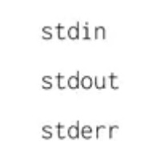
It's helpful to think of these streams like actual water streams
in a river. You provide input to a process by adding things to the
standard instream, which flows into the process. When the process
creates output, it adds data to the standard out stream, which
flows out of the process. At the CLI, the input that you provide
through the keyboard goes to the standard instream of the process
that you're interacting with. This happens whether that's
PowerShell, a text editor or anything else. The process then
communicates back to you by putting data into the standard out
stream, which the CLA writes out on the screen that you're looking
at. Now, what if instead of seeing the output of the command on
the screen, we want it to save it to a file. The greater than
symbol is something we call a redirect or operator that lets us
change where we want our standard output to go. Instead of sending
standard out to the screen, we can send standard out to a file. If
the file exists, it will override it for us. Otherwise, it will
make a new file. If we don't want to overwrite an existing file,
there's another redirect or operator we can use to append
information greater than, greater than. Let's see that in action.
Echo woof> dog.txt. Now if I look at my dog.txt file again, we
can see that woof was added again. But what if we wanted to send
the output of one command to the input of another command. For
this, we're going to use the pipe operator. First, let's take a
look at what's in this file. Cat words.txt. Look at that, it's a
list of words. Now what if we want to just lift the words that
contain the string st? We could do what we've done before and just
use the select-string or SLS on the file directly. This time,
let's use the pipeline to pass the output of cat to the input of
select-string, cat, words.txt, pipe, select-string st. Now we can
see a list of words with the string st. To tie things together, we
can use output redirection to put our new list into a file. Now
greater than and then a new file called st_words.txt. Now if I cat
st_words.txt, there it is. That's just a very basic example of how
you can take several simple tools and combine them together to do
complex tasks. Now we're going to learn about the last I/O
redirector standard error. Remember when we tried to remove a
restricted system file earlier and we got an error that said
permission denied. Let's review that once more. This time I'm
going to remove another protected file, rm secure_file. Riproduci
il video a partire da :4:25 e segui la trascrizione4:25 We see
errors like we're supposed to. But what if we didn't want to see
these errors? It turns out we can just redirect the output of
error messages in a different output stream called standard error.
The redirection operator can be used to redirect any of the output
streams, but we have to tell it which stream to redirect. Let's
type rm secure_file 2>errors.txt. Riproduci il video a partire da
:4:54 e segui la trascrizione4:54 If I look at errors.txt, I can
see the error message that we just got. What does the two mean?
All of the output streams are numbered. One is for standard out,
which is the output that you normally see, and two is for standard
error or the error messages. When we use two greater than, we're
telling PowerShell to redirect the standard error stream to the
file instead of standard out. What if we don't care about the
error messages, but we don't want to put them in a file? Using our
newly learned redirect or operators, we can actually filter out
these error messages. In PowerShell, we can do this by redirecting
standard error to dollar sign null. What's dollar sign null? It's
nothing. No, really, it's a special variable that contains the
definition of nothing. You can think of it as a black hole for the
purposes of redirection. Let's redirect the error messages this
time to dollar sign null , rm secure_file 2>$null. Riproduci il
video a partire da :6:1 e segui la trascrizione6:01 Now our output
is filtered from error messages. There's still much more to learn
if you're interested. Try Get-help about_redirection in PowerShell
to see more detail. It may take a little time to get the hang of
using redirector operators. Don't worry, that's totally normal.
Once you do start to get used to them, you'll notice your command
full skills level up and your job becomes a little easier.
(Required) en
Linux: Input, Output and Pipeline
Similar to Windows, we have three different IO or input output
streams. Standard out, standard in, and standard error.
Riproduci il video a partire da ::10 e segui la trascrizione0:10
We echo the text woof here, but instead of sending it to our
screen by default, we're going to redirect the output to a file
using the standard out redirector operator. Let's verify, and
there it is. This overrides any file named dog.txt with the
content woof. If we don't want to overwrite an existing file, we
can use the append operator or greater than, greater than. Echo
woof dog.txt. We could verify that, there it is. One redirector
operator that we talked about in the Windows lesson, but didn't
show an example of was the standard in redirector operator. The
standard and redirector is denoted by a less than sign. Instead of
getting input from the keyboard, we can get input from files. This
command is exactly the same as cat file_input. The difference here
is that we aren't using our keyboard input anymore. We're using
the file as standard in. Finally, similar to Windows, the last
redirector operator we'll talk about is standard error. Standard
error displays error messages which you can get by using the two
greater than redirector operator. Just like Windows, the two is
used to denote standard error. To redirect just the error messages
of some output, you can use something like this, ls /dir/fake_dir
2> error_output.txt. Now if I view that new document, Riproduci il
video a partire da :1:49 e segui la trascrizione1:49 now we can
see the error message in error output.txt. Remember the dollar
sign null variable that we used in Windows to toss unwanted output
into a metaphorical black hole? We have something like that in
Linux too, there's a special file on Linux called the /dev/null
file.
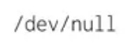
Let's say we want to filter out the error messages in a file and
just want to see standard out messages. We could do something like
this. Riproduci il video a partire da :2:16 e segui la
trascrizione2:16 Now our output is filtered from error messages.
Remember how we talked about taking the output of one command and
using it as the input of another command with the Windows
pipeline? Well the same thing exists in Linux. The pipe command
allows us to do this. Let's say we want to see which
sub-directories in the /etc directory contain the word Bluetooth.
We can do something like this. Riproduci il video a partire da
:2:40 e segui la trascrizione2:40 We're using the pipe redirected
to take the output of ls -la /etc, and pipe or send it to the grep
command. Now without even looking through the directory, we're
able to quickly see if the Bluetooth directory is in here. There
it is. You've gotten a glimpse of the power of redirectors and as
you dive deeper into the world of Linux, you'll be using them on a
regular basis. They're super valuable tools to have and now
they're part of your toolkit.
Module 2
Users and Groups
Users, Administrators, and Groups
Welcome back. Now that we've learned how to navigate around the
Windows and Linux operating systems, let's start setting up our
computer for use by other people. As an IT support specialist,
you'll be responsible for other people's machines. People will
depend on you to help set up their machines, troubleshooting their
issues, and so on. In this lesson, you'll learn how to manage
multiple accounts on one machine. You will also learn about the
different permissions and access types, how to add and remove
users, and the best practices to use when managing multiple users.
It's common for a computer to have multiple users. On your home
computer, you might have your parents, siblings, or children using
the same computer. Your town, library, school, or other public
places might also have computers with multiple users. Even though
these machines have multiple user accounts on them, all users on a
computer are isolated from others. This means that Kevin can't see
Victors files and folders and vice versa. There are two different
types of users, standard users and administrators. A standard user
is one who is given access to a machine, but has restricted access
to do things like install software or change certain settings. An
administrator or admin is a user that has complete control over a
machine. They can view anyone's account, change and remove anyone
on the computer and view every single file. You can have multiple
administrators on a machine as well. On your personal machine,
you're the default administrator because this gives you complete
control over your system. After all, it is your machine. But on a
public computer, the administrator is someone who actually runs
and maintains the machine, like an IT support specialist. They can
grant access for other users, install software, change restricted
system settings, and perform other actions they deem appropriate.
How terrible would it be if anyone who is using a public computer
could just install software, the computers would be bloated,
things would be out of place, and worst of all, they could be
infected with malicious software. Users are put together in groups
according to levels of access and permissions to carry out certain
tasks. These tasks depend on what the computer's administrator
considers appropriate. An administrator could give different
access and settings based on the type of group a user is in. Let's
say you're an administrator for your home computer, which everyone
in the house uses. You put your parents in a group called parents
and your kids in a group called children. You don't want either of
them to be able to install software, but you also want to add
child safety restrictions on the children group. As the
administrator, you're able to specify different permissions for
both of these groups. How do you differentiate what type of user
you are and what groups you're in on Windows and Linux. Well,
hopefully you'd know this if you're an administrator of a
computer. But if you don't, computers do a pretty good job of
telling you. (Required) en
Windows: View User and Group Information
To view user and group information in Windows. We're going to use
the computer management tool. If we search computer management in
our application search and open it up, we'll see a window that
gives us a lot of information. We'll be using this application a
lot throughout this course. So let's take some time to go over it.
At the top of the sidebar, you'll see it says, computer management
Local. This means we're managing a single machine locally. In an
enterprise environment, you can manage multiple machines in
something called a domain. A Windows domain is a network of
computers, users, files, etc, that are added to a central
database. If you're an admin of that domain, you can view those
accounts in computers from any machine in the domain. Underneath
this menu, we have system tools. Let's do a rundown of each of
these sub menus. Task scheduler. This lets you schedule programs
and tasks to run at certain times, like automatically shutting off
the computer at 11:00 PM every night. Event viewer. This is where
our system stores its system logs. Shared folders. This shows the
folders that different users on the machine share with each other.
Remember how we said that other users can view anyone else's
files? That's not exactly true. If user store files on a shared
folder, anyone who has access to that folder can view it. Local
users and groups. This is where we'll be doing our user and group
management. Performance. This shows monitoring for the resources
of our machine, like CPU and RAM. Device manager. This is where we
go to manage devices to our computer, like our network cards,
sound cards, monitors, and more. Under the storage menu, we have a
sub menu for disk management. Finally, the services and
applications menu shows us the programs and services that we have
available on the system. We can choose to enable or disable
services like DNS here, all the essential settings that we as
administrators need to change are found in the computer management
tool. If you're a power user, it's more efficient to use this than
it is to go through the default settings application. Okay, let's
get back to the task at hand. Let's see what kind of user account
we have and what groups were part of. Let's go back to the local
users and groups. Riproduci il video a partire da :2:24 e segui la
trascrizione2:24 Under users, we can see a few built-in Windows
accounts, like guest and administrator. The local administrator
account lets you login using the administrator username and
whatever the administrator password is on the computer. This
account is disabled by default. Since this account it has
unfettered access on the computer, it can be dangerous to be
logged into it at all times. For now. Let's look at the account
I'm in. Cindy. Let's double-click on this to see more information.
Let's do run down here. Under the tab general, we can see some
basic information about the user, along with some options. User
must change password at next login. Since I'm an admin, I can
force other users to change their password. This is useful if I'm
managing someone's account and their password was compromised. We
don't want to risk someone else logging into their account. So we
force them to change their password. User cannot change password.
Password never expires. Account is disabled. Enabling or disabling
an account means making it active or inactive. Account is locked
out. This means a user account will not be able to login. Maybe a
disgruntled employee is looking to do malicious things. We can
make it so that they won't be able to log into their computer.
Under the member of tab, we can see which groups were part of. I
can see that I'm in the administrator's group heads up that
instead of being logged into the local administrator account all
the time, you can be logged into your own account and use
administrative powers when you need to. This is thanks to the help
of UAC or user access control. This is a feature in Windows that
prevents unauthorized changes to a system. These changes have to
be approved by an administrator instead. Since I'm an
administrator, all I would do is enter in my password to confirm
that I want to make a change. Finally, on the last tab profile,
you can change settings about your user profile, like where you
want your home folder to be. This isn't terribly important on a
local account, but it comes in handy when you're managing many
users on a domain. Now, if we go to the groups menu in the
sidebar, it should look familiar. Riproduci il video a partire da
:4:43 e segui la trascrizione4:43 Just like the member tab, we can
view which groups are available and who their members are. That's
how you feel user and group information using the Windows GUI.
Next, let's take a look at how to do the exact same thing using
Windows CLI.
Windows: View User and Group Information using CLI
Imagine you're working as an IT Support Specialist at a company
and your boss asks you to check all the user information on 10
machines to make sure that the local administrator account is not
enabled. Sure, you could search Computer Management in the search
bar, click Computer Management Local, look under System Tools,
click on local users and groups, then double-click on the username
of the computer to ensure that their local administrator account
isn't enabled. Now you just have to do that nine more times.
There's a much faster way. You can just use the CLI to quickly see
the list of users on the computer using the command,
Get-LocalUser. Riproduci il video a partire da ::40 e segui la
trascrizione0:40 As you can see, it lists my user account, a few
other users, and a couple of other default accounts that are part
of windows. Here you can see that my local administrator account
isn't enabled. That's way easier. What about groups? I bet you can
guess, Get-LocalGroup will list the groups on the local machine.
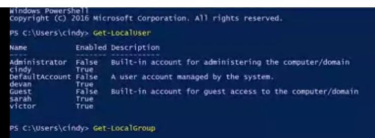
There are a whole bunch of groups, but don't worry, these are all
built-in groups. Each of them are important, but we aren't likely
to make changes to most of them. One that we will make changes to
is the administrators group. Remember, this group controls who has
administrative access to the machine. It's important to know who's
in this group since anyone in this group can make any change they
want to the machine. We just saw in the GUI that we're in this
group. But I wonder who else is? : Let's see who's in this group
with Get-LocalGroupMember, and I want to check the administrators
group. We can see that the administrator user and my user are in
the administrators group, but no one else. It looks good to me.
One last note, these local user and group PowerShell commands
require that you're running PowerShell 5.1 or newer. You may have
noticed that I keep saying local accounts and local users. If your
organization has a lot of windows machines, it's very common to
use Active Directory to manage user accounts in a central
directory service.
Linux: Users, Superuser and Beyond
In Linux user management access works just like it does in
Windows, different user types have different privileges and they
can be grouped together with various access levels. There are a
few differences in how Linux does labeling, though. There are
standard users, and there are also administrators in Linux, and
there's also a special user called the Root User. Don't get this
confused with the root directory or slash, the Root User is the
first user that gets automatically created when we install a Linux
OS. This user has all the privileges on the OS, they're the super
user. There's technically only one super user or root account, but
anyone that's granted access to use their powers can be called a
super user too. Now, let's try and view the contents of a route
restricted file. The file path is etc/sudoers, we're getting an
error, cat/etc/sudoers: permission denied. The sudoers file is a
protected file that can only be read by root. We can log in as
root and then run this command, no problem. But it can be really
dangerous to always be in root. Since root, like our local
administrator account on Windows, has unrestricted access on the
machine. If we make even one mistake, we could delete or modify
something important, then that's not good. So instead of logging
in its root, we can tell the shell that we want to run this one
command as root. Sounds similar to the Windows UAC feature, that's
because it is, on Linux we can do this with the sudo command, or
superuser do. So sudo cat/etc/ sudoers and now we're able to see
the contents of this file. If you don't want to run sudo every
time you need to run a command that requires root privileges, you
can just use the su command or substitute user. This will allow
you to change to a different user, if you don't specify user, it
defaults to root. Riproduci il video a partire da :1:57 e segui la
trascrizione1:57 Now you can see my prompt says root@cindy-ncy.
Again it's generally not a good guideline to stay logged in as
root all the time. There are lots of critical services and files
that can be mistakenly changed. If you need to log in as root,
it's okay but just be careful. I'm just going to go ahead and exit
out of root for now and go back to my normal user. You can view
who has access to run sudo by viewing the /etc/groupfile. This is
also how you view memberships for all groups. Riproduci il video a
partire da :2:30 e segui la trascrizione2:30 This looks a bit
different from the Windows gooey, but you can see there are some
similarities to the Windows cli, it's actually pretty simple to
read this file even if you're not a bash expert yet. Each line
represents a different group. Let's look at the sudo line.
Riproduci il video a partire da :2:48 e segui la trascrizione2:48
There are four fields here, separated by colons, the first field
is the group name. In this case, it's sudo, the second field is
the group password. We don't really need to specify a group
password, so it defaults to the root password. The x here means
that the password has been encrypted, and stored in a separate
file that we'll talk about in a later lesson. Oops! We made a
mistake here. Group passwords in Windows are hashed, not
encrypted. This means that the password is converted into a unique
string of characters, called a hash, which is stored on the
server. The hash is used to verify the password when a user
attempts to join the group. Riproduci il video a partire da :3:8 e
segui la trascrizione3:08 The third field is the ID of the group,
or group ID. Riproduci il video a partire da :3:12 e segui la
trascrizione3:12 When our operating system runs a task that
involves a group, it uses a group ID Instead of a group name. And
finally, the last field is a list of users in the group. What if
we wanted to view the users on our machine? What do you think the
file would be that stores that information? Unfortunately, it's
not /etc/user, the file that contains user information is
/etc/password. Riproduci il video a partire da :3:36 e segui la
trascrizione3:36 Wow, there's a lot more information in here, and
a lot more users. Most of these accounts aren't actually humans
using the computer, there are a bunch of processes that are
constantly running on a computer that we need to associate with
the user. So our system has lots of users with different
permissions that are needed to run these processes. Let's look at
this first line here, which is an actual user, we can log into
root. Riproduci il video a partire da :4:3 e segui la
trascrizione4:03 We won't talk about all the fields since they
aren't important, but the first three are relevant. Riproduci il
video a partire da :4:8 e segui la trascrizione4:08 The first
field is the user name, and the second field is the user password.
Riproduci il video a partire da :4:13 e segui la trascrizione4:13
The password isn't actually stored in this file, it's encrypted
and stored in a different file. Just like our group ID password.
The third field here is the user ID or UID. Similar to group IDs,
user IDs or how our system identifies a user, not by the user
name. Root has a UID of zero. And that's basically how you view
users and groups in Linux
Windows: Passwords
In this video, we're going to talk about an important part of
having users on a machine, and that's working with passwords.
Passwords add security to our user accounts and machines. They
make it so that only Marty knows the magic secret to access your
account and no one else's, not even the admin of the computer.
When setting up a password, you want to make sure that you and
only you know that password. Remember, if you're managing other
people's accounts on a machine, you shouldn't know what their
password is. Instead, you want the user to enter the password
themselves. To reset a password and the GUI, let's go back to our
computer management tool. Riproduci il video a partire da ::48 e
segui la trascrizione0:48 Under local users and groups, we're
going to right-click on a username like this account Sarah. Let's
click on "Properties" and then from here, we're just going to
check this box that says, "User must change password at next
login". Riproduci il video a partire da :1:6 e segui la
trascrizione1:06 Apply and hit "Okay". Then when the user logs
into the account, they'll be forced to change their password. If
they forgot their password, you have the option to set a password
for the manually by right-clicking and selecting "Set password".
This has some caveats though like losing access to certain
credentials. To change a local password and PowerShell, we're
going to use the DOS style Net command. There's a native
PowerShell command that can be used to set the password but it's a
little more complicated. It requires a bit of simple scripting to
use. For now, we'll stick to the simpler, though less powerful Net
command. Net does lots of different things. Changing local user
passwords is just one of them. Since this is an old DOS style
command, you can also use the slash question mark parameter to get
help on the command from the CLI. To change a password for user,
the command is net user then the username and password. Riproduci
il video a partire da :2:9 e segui la trascrizione2:09 The best
way to use this command is to use an asterisk instead of writing
your password out on the command line. If you use an asterisk, net
will pause and ask you to enter your password like so. Riproduci
il video a partire da :2:26 e segui la trascrizione2:26 Why is
this approach better? Imagine you're changing your password and
right at that moment, someone walks behind you and glances over
your shoulder. Your password isn't a secret anymore. You should
also know that in many environments, it's common that the commands
that folks run on the machines they use are recorded in a log file
that sent to a central logging service. So it's best that
passwords of any kind are not logged in this way. Do you notice a
problem with the asterisk approach though? That's right. If I
change passwords for someone else using this command, I would know
their password and that's not good. Instead, we're going do what
we did in the GUI and force the user to change the default
password on their next log on using the /login password change;yes
parameter. I'm just going to force Victor to change his password
on the next log on. Net user victor/logonpasswordchange;yes.
Riproduci il video a partire da :3:28 e segui la trascrizione3:28
The /logonpasswordchange;yes parameter means that the next time
that Victor logs into this computer, he'll have to change his
password. Sorry, Victor. (Required) en
Linux: Passwords
To change your password in Linux, all you need to do is run the
P-A-S-S-W-D, or password command. Let's try changing my password.
Riproduci il video a partire da ::18 e segui la trascrizione0:18
When you set a password, it's securely scrambled then stored in a
special privileged file called /etc/shadow. This file can only be
read by route to keep away prying eyes. Even if you did have
access, you wouldn't be able to descramble passwords found in
here. If you're managing a computer and you want to force a
standard user to change their password, like we did in Windows,
you can use the -E or expire flag with password like this.
Riproduci il video a partire da ::47 e segui la trascrizione0:47
This will immediately expire a user's password and then make them
set a new password the next time they login.
Mobile Users and Accounts
Because most mobile devices are used by a single person. Mobile
operating systems handle user accounts a little differently than
the other OS as we've talked about. Take a GPS unit in the
vehicle, for example, you might never enter a user name or assign
into the GPS unit at all. They're still user accounts in the OS
that run the GPS device, but you'll never have to see them or have
to deal with them. On the other hand, think about a smartphone or
tablet running iOS or Android. These devices will have you enter
the user name and password once when you're setting up the device,
but then you'll probably not have to re enter that password each
time you want to use the device. The initial account that you used
during setup is called the primary account. This account is used
to create a user profile for you on the device. The user profile
is sort of like your user account in a mobile device. It contains
all of your accounts, preferences and apps. In iOS and Android the
primary account can be used to synchronize settings and data to
the cloud. When you replace the device or set up a new mobile
device with a primary account that you've used before you'll have
the option to restore data and apps if any have been backed up to
the cloud. But don't worry about this yet we'll talk more about
synchronization and backups in a future video. Also in iOS and
Android, a user profile can be signed into additional accounts.
These could be additional email accounts, social media accounts or
something else. If given permission apps on the mobile device can
use these accounts for single sign on or SSO. This means that
instead of those apps asking you for another user name and
password they will allow you to authenticate using an account that
you're already signed into. Those apps don't have access to your
credentials, but you can let them use those credentials. As an IT
support specialist you might help end users set up these accounts
on their mobile devices, but don't ever ask someone for their
password. Always have the end user end of the password themselves
and if anyone reveals their password to you encourage them to
change that password. Most mobile devices only support one user
profile and they're designed to be used by a single person. Some
android devices do support multiple user profiles, to see how that
works check out the supplemental reading. Think about when you use
a larger device like a desktop, laptop or a server that you have
to enter a user name and password to access. By default most
mobile operating systems don't ask you to re enter your primary
account password each time you want to use the device. This is
convenient, but it also means that anyone who picks up the device
will have access to all of your personal and work data. Even if
there's no private data on the device, the device may have access
to confidential or privileged systems which can be just as bad.
Mobile operating systems usually have several ways to protect your
data. You can set a device password, a pin, or an unlock pattern
on your device. Some smartphones use fingerprint sensors, facial
recognition, or other kinds of biometric data to grant access to
the device. Biometric data is something about you that's unique to
you, like a fingerprint, a voice, or a face. To protect business
data some organizations use mobile device management or MDM
policies to require mobile devices to be locked. Mobile device
management systems are used to apply and enforce rules about how
the device has to be configured and used. (Required) en
File permissions are important concept in computer security. We
only want to give access to certain files and directories to those
who need it. While we think about how we want users to access
files and folders, we should also think about how the concept of
permissions carries over to other areas of your life. Maybe you've
locked down your social media posts to only people you trust or
given a copy of your house key to a relative in case of an
emergency. For now, we're going to focus on one small building
block, file permissions. In Windows, files and directory
permissions are assigned using access control lists or ACLs.
Specifically, we're going to work with discretionary access
control lists or DACLs. Windows, files, and folders can also have
system access control lists or cycles assigned to them. SACLS are
used to tell Windows that it should use an event log to make a
note of every time someone accesses a file or folder. You can
think of a DACL as a note about who can use a file and what
they're allowed to do with it. Each file or folder will have an
owner and one or more DACLs. Let's take a look at an example. In
Windows Explorer, I have opened up my Home Directory. If we
right-click on desktop and select Properties, we can see the
Properties dialogue for our desktop directory. Then if we go to
Security tab, we can see the permissions window here. The top box
contains a list of users and groups. The bottom box has a list of
the permissions that each user group has been assigned. What do
each of these permissions do? It changes a bit depending on
whether their permission is assigned to a file or directory. Don't
worry, it'll all make sense soon. Let's do a rundown of these
permissions. Read the read permission. Let's you see that a file
exists and allows you to read its contents. It also lets you read
the files and directories in a directory. Read and execute the
read and execute permission. Let's you read files and if the file
is an executable, you can run the file. Read and Execute includes
read, so if you select Read and Execute, read will automatically
be selected. List folder contents. List folder contents is an
alias for Read and Execute on a directory. Checking one will check
the other. It means that you can read and execute files in that
directory. Write, the Write permission lets you make changes to a
file. It might be surprising to you, but you can have write access
to a file without having read permission to that file. The Write
permission also lets you create subdirectories and write to files
in the directory. Modify. The Modify permission is an umbrella
permission that includes read, execute, and write. Full control. A
user or group with full control can do anything they want to the
file. It includes all the permissions of Modify and adds the
ability to take ownership of a file and change its ACLs. Now, when
we click on My username, we can see the permissions for Cindy,
Riproduci il video a partire da :3:23 e segui la trascrizione3:23
which show that I'm allowed all of these access permissions. If we
want to see which ACLs are assigned to a file, we can use a
utility designed to view and change ACLs called icalcs, or
improved change ACLs. Let's take a look at my desktop first.
icalcs desktop. Well, that looks useful, but what does it mean? I
can see the user accounts that have access to my desktop and I can
see that my account is one of them. But what about the rest of
this stuff? These letters represent each of the permissions that
we talked about before. Let's take a look at the help for icalcs.
I bet that'll explain things. icalcs/? There's a description of
what each one of these letters means. Riproduci il video a partire
da :4:24 e segui la trascrizione4:24 The F shows that I have full
control of my Desktop folder. ICACLs causes full access. We saw
this in the GUI earlier as full control. These are the same
permission. What are these other letters mean? NTFS permissions
can be inherited as we saw from the icalcs help. OI means object
inherit, and CI means container inherit. If I create new files or
objects inside my desktop folder, they'll inherit this DACL. If I
create new directories or containers in my desktop, they'll also
inherit this DACL. (Required) en
As we've now learned, there are files and folders that have
different permission sets on them so that unwanted eyes can't view
or modify them. There are three different permissions you can have
in Linux. Read, this allows someone to read the contents of a file
or folder. Write, this allows someone to write information to a
file or folder. Execute, this allows someone to execute a program.
Let's take a look at this with the ls command. We'll use the long
flags so we can see the permissions on the file. Riproduci il
video a partire da ::36 e segui la trascrizione0:36 The first
thing we see in this column is -rwxrw-r- -. There are 10 bits
here. The first one is the file type. In this example, dash means
that the file we're looking at is just a regular file. Sometimes
you might see d, which stands for a directory. The next nine bits
are our actual permissions. They're grouped in trios or sets of
three. The first trio refers to the permission of the owner of the
file. The second trio refers to the permission of the group that
this file belongs to. The last trio refers to the permission of
all other users. The r stands for readable, w stands for writable,
and x stands for executable. Like in binary, if a bit is set, then
we say that it's enabled. For our permissions, if a bit is a dash,
it's disabled. If it has something other than a dash, it's
enabled. Permissions in Linux are super flexible and powerful
because they allow us to set specific permissions based on a role
such as an owner in a group or everyone else. Let's take a look at
this in detail. The first set of permissions rwx refers to the
permission of the user who owns that file. In this case, it's
Cindy, where you can see in the owner field of ls -l. It says here
that the owner of the file can read, write, and execute this file.
The next set of permissions are group permissions. We can see the
group this file belongs to is the cool group. They have read and
write permissions, but not execute permissions. Lastly, the
permissions for all other users and groups only allow them to read
this file. That's Linux permissions in a nutshell. It might take
some time to get used to reading permissions. Don't worry, you'll
eventually get the hang of it. As always, feel free to review this
lesson again if you need a refresher.
Windows: Modifying Permissions
Now that we can read permissions, let's take it a step further and
learn how to change permissions in Windows. Let's say I want to
give access to another person in my family to view a folder with
family pictures on the computer. How would I do that? On my local
Disk C, I have a folder called vacation pictures that I want to
share with another user on my machine, Devan. To do that, I'm
going to right-click on this folder, then go to properties, then
the security tab. Now I can see an option to edit file
permissions. I'm going to click on that. Riproduci il video a
partire da ::38 e segui la trascrizione0:38 From here, I can see
that I can add a group or usernames to this aCho. I'm going to go
ahead and click "Add". Riproduci il video a partire da ::49 e
segui la trascrizione0:49 From here, it asks me to enter the
username of the person I want to add on this aCho. I'm going to
enter Devan and then click "Check Names" to verify that I typed it
in right. After it's been verified, I'm going to click "Okay".
Once Devan's added to the aCho, I can click on his username, then
check the allow boxes for the permissions I want to give him.
Let's give Devan modify access so you can add pictures to this
folder too. That's it. We've been glossing over this other
checkbox here deny. You might have already guessed that deny
doesn't allow you to have a certain permission, but it's special
because it generally takes precedence over the allow permissions.
Let's say Devan is in a group that has access to this folder. If
we explicitly check the deny box for Devan's username, even if the
group has access to the folder, Devan won't. To modify a
permission in the CLI, we're going to return to the iCacls
command. In the examples I'm going to show you, we'll be running
iCacls from PowerShell. The iCacls command was designed for the
Command Prompt before PowerShell, and its parameters use special
characters that confuse PowerShell. By surrounding iCacls
parameters with single quotes, I'm telling PowerShell not to try
and interpret the parameter as code. If you run these commands in
command.exe, you'll need to remove the single quotes for them to
work. Let's look at this side by side with powershell.exe and
command.exe. In PowerShell, the command would be iCacls vacation
pictures/grant, with single quotes, everyone OI CI R. In Command
Prompt, the command would be, iCacls, with double quotes, vacation
pictures grant everyone OI CI R. We're going to see what this
command does in just a moment. For now, let's take a look at the
difference in the quotes. In the PowerShell example, we add single
quotes to make PowerShell ignore the parenthesis and because
there's a space in the path. In the command.exe example, we have
to use double quotes for the path, and we don't need the single
quotes anymore to hide the parenthesis. Got it? Great. Now, let's
take a look at the permissions that we just gave to Devan with
iCacls. Riproduci il video a partire da :3:48 e segui la
trascrizione3:48 Cool. I see there's a new decal attached to the
vacation pictures directory for Devan that gives him modify
access. We can see that any new files or folders that get created
in vacation pictures will be inherited. Let's say we want anyone
with permission to use this computer to be able to see these
pictures. We don't want them to add or remove photos though. What
permissions do we want to give them? That's right. We want to give
them read permission to the vacations pictures folder. Let's use
the special group, everyone, to give read permissions to the
directory, so iCacls see vacation pictures/grant everyone OI CI R.
Success. The everyone group includes, well, everyone. It includes
local user accounts like Cindy and Devan. Guest users. This is a
special type of user that's allowed to use the computer without a
password. Guest users are disabled by default. You might enable
them in very specific situations. Now, anyone who can use this
computer can browse the photos that Devan and I have put together.
Actually, maybe I didn't really want everyone to look at my
vacation photos. Maybe I just want the people that have passwords
on the computer to be able to see them. In that case, I want to
use Authenticated Users group. That group doesn't include guest
users. First, let's add a new decal, iCacls see vacation pictures
grant authenticated users OI CI R. Success. Now, let's remove the
permissions for the everyone group, iCacls see vacation pictures
remove, then everyone. Success. Now, let's use iCacls to verify
that their permissions are set the way we intended, iCacls see
vacation pictures. Sweet. We can see that authenticated users are
added and everyone is removed. Required en
Linux: Modifying Permissions
In Linux, we change permissions using the chmod or change mode
command. First, pick which permission set you want to change. The
owner, which is denoted by u, the group the file belongs to,
denoted by g, or other users, which is noted by an o. To add or
remove permissions, just use a plus or minus symbol that indicates
who the permission effects. Let's take a look at some examples.
Riproduci il video a partire da ::27 e segui la trascrizione0:27
Let's chmod u+x, my_cool_file. Riproduci il video a partire da
::38 e segui la trascrizione0:38 This command is saying that we
want to change the permission of my_cool_file by giving executable
or x axis to the owner or u. You can do the same thing if you
wanted to remove a permission. Chmod u-x, my_cool_file. Riproduci
il video a partire da :1:2 e segui la trascrizione1:02 Instead of
a plus, we just minus. Pretty simple. If you wanted to add
multiple permissions to a file, you could just do something like
this. Riproduci il video a partire da :1:14 e segui la
trascrizione1:14 This is saying we want to add read and execute
permissions for the owner of my_cool_file. You can do the same for
multiple permission sets. You do chmod, ugo+r, my_cool_file. Now,
this says we want to add read permissions for our owner, the group
the file belongs to and all other users and groups. This format of
using r, w, x and ugo to denote permissions and users in chmod is
known as symbolic format. We can also change permissions
numerically, which is much faster and simpler. Let's just change
all permissions at once. The numerical equivalent of r, w, x is 4
for read or r, 2 for write or w, and 1 for execute or x. To set
permissions, we add these numbers for every permission set we want
to effect. Let's take a look at an example. Riproduci il video a
partire da :2:13 e segui la trascrizione2:13 The first Number 7 is
our owner's permission. The second Number 5 is our group
permissions, and the third Number 4 is the permission for all
other users. Wait a minute, where are we getting 5 and 7?
Remember, you have to add the permissions together. If you add 4,
2 and 1 together, you get r, w, x, which equals 7, so our owner
permission is able to read, write, and execute this file. Can you
guess what 5 would stand for? That's right, 4+1 is read and
execute. Now, you can see how numeric format is quicker than
symbolic format. Instead of running something like this, Riproduci
il video a partire da :2:59 e segui la trascrizione2:59 we can run
chmod 754 my_cool_file to update them all. ________ Oops! The
group permissions should be read and execute. It should look like
this: $chmod g+rx my_cool_file Riproduci il video a partire da
:3:9 e segui la trascrizione3:09 Either way, you can change
permissions using the symbolic or numerical format. Just pick
whichever is easiest for you. You can also change the owner and
the group of a file that you own or change owner command allows
you to change the owner of a file. Let's go ahead and change the
owner to Devan. Riproduci il video a partire da :3:34 e segui la
trascrizione3:34 Awesome. Now, Devan is the owner of this file. To
change the group a file belongs to, you can use chgrp or change
group command. Riproduci il video a partire da :3:44 e segui la
trascrizione3:44 Awesome. Now, the best group ever is the group
owner for this file. It may take a while for you to get the hang
of reading and changing permissions. You can practice changing
their permissions on a few files until you get it done.
Permissions are an essential building block to computer security,
and you'll be using them throughout your work as an IT support
specialist. Required en
Windows: Special Permissions
You might have noticed that when we were looking at permissions in
the GUI before, there's a checkbox in the permission list for
special permissions. The permissions that we've been looking at
and setting so far are called simple permissions. Simple
permissions are actually sets of special or specific permissions.
Riproduci il video a partire da ::23 e segui la trascrizione0:23
For example, when you set to read permission on a file, you're
actually setting multiple special permissions. Let's take a look
at the list of special permissions available. I'm going to click
on the Advanced tab under my Permission setting. Riproduci il
video a partire da ::40 e segui la trascrizione0:40 When I click
on a username and then go to advanced permissions, I can see a
list of all the special permissions enabled on that file. When we
select a basic permission like read, we're actually enabling the
special permissions list folder/read data, read attributes, read
extended attributes, read permissions, and synchronize, which are
just fine tuned permissions. You can modify these permissions like
you would any other basic permission. In most cases, the simple
permissions are going to be all that you need. But sometimes you
need to create a file or folder that doesn't quite follow a simple
pattern. Let's take a look at an example in the CLI. To view
special permissions on a file in the CLI, we will simply use the
icacls command as before. Riproduci il video a partire da :1:32 e
segui la trascrizione1:32 Let's take a look at a more interesting
example than my desktop folder, icacls C: /Windows/Temp. This
directory is used to hold temporary files for all users in the
system. We would like for everyone on the system to be able to
create files and folders here. You might think that we should use
modify or full control for this, but we don't want users to be
able to delete each other's files. Let's take a look at some of
the dactyls assigned to this folder and figuring out how to do
this. First, local administrators and the operating systems
computer account have full permissions over this folder, and all
files and folders within it. We see a new descriptor, IO, which
indicates that this decal is inherent only. That means that it
will be inherented, but it does not apply to this container;
C/Windows/Temp. The user's group includes all user accounts on the
local machine. We're going to let users WD or create files and
write data, AD, create folders and append data, and S for
synchronous. Unlike the modified simple permission, we're not
granting users the ability to delete files or folders. We do want
users to be able to delete their own files and folders though. How
do we do that? If you see CREATOR OWNER. CREATOR OWNER is a
special user that represents the owner of whichever file the decal
applies to. In this directory, and all subdirectories, whoever
owns a file or folder has full control of it. Nice. I'm going to
create a folder and file in C/Windows/Temp, and see what dangles
that are applied. Let's use what we learned about output
redirection to record the output of the icacls in this file;
icacls C: /Windows/Temp/example. Then we're going to use a
redirect the output to give us icacls.txt. Now let's look at the
file we created to view the output of icacls. Cool. I created the
files, so I have full control of them, and all the other dangles
that we saw in C/Windows/Temp, have been inherited. You can see
that using the special permissions and NTFS decals can be
complicated, but it can also let you create really powerful sets
of permissions, customized to your exact needs. Required en
Linux: SetUID, SetGID, Sticky Bit
In Linux, we also have special permissions. What if I want a user
to be able to do something that requires root privileges, but I
don't want to give them these privileges? What's the use case for
this? Glad you asked. There are certain commands that need to
change files that are owned by root. Normally, if you need to
change a file owned by root, you'd have to use sudo. But we want
to be able to have normal users change these files without giving
them root access. Let's check out an example. Let's say I want to
change my password. I would use the password command like we've
learned. Riproduci il video a partire da ::42 e segui la
trascrizione0:42 Pretty simple right? Now, I just enter my new
password and my password is changed. We know that the password
command secretly scrambles up our passwords, then adds them to
this etc shadow file. Let's dive a little deeper into this file.
Riproduci il video a partire da :1:1 e segui la trascrizione1:01
It says this file is owned by root. How are we able to write or
scramble passwords in this file if it's owned by root? Well,
thanks to a special permission bit known as setuid, we can enable
files to be run by the permissions of the owner of the file. In
this case, when you run the password command, it's being run as
root. Let's verify this. Riproduci il video a partire da :1:25 e
segui la trascrizione1:25 We see the permissions on this file look
a little odd. There's an S here where the X should be. The S
stands for setuid. When the S is substituted where a regular bit
would be, it allows us to run the file with the permissions of the
owner of the file. To enable the setuid bit, you can do it
symbolically or numerically. Riproduci il video a partire da :1:48
e segui la trascrizione1:48 The symbolic format uses an S, while
the numerical format uses a four which you prepend to the rest of
the permissions like this. Riproduci il video a partire da :2:7 e
segui la trascrizione2:07 Similar to setuid, you can run a file
using group permissions with setuid or set group-ID. This allows
you to run a file as a member of the file group. Under our group
permissions, we can see that the setgid bit was enabled, meaning
that when this program is run, it's run as the group TTY. To
enable the setgid bit, you can do something similar to setuid. The
only difference is the numerical format uses a two, so I can do
something like this or something like this. Riproduci il video a
partire da :2:48 e segui la trascrizione2:48 There's one less
special permission bit we should cover, and that's the sticky bit.
This bit sticks a file or folder down. It makes it so anyone can
write to a file or folder, but they can't actually delete
anything. Only the owner of root can delete anything. Let's look
at permissions for slash temp directory, or a lot of programs
write temporary files too, and you'll see what I mean. I added the
D flag to show information just for the directory and not the
contents. But as you can see, there's a special permission but at
the end here, T. This means everyone can add and modify files in
the slash temp directory, but only root or the owner can delete
the slash temp directory. You can also enable the sticky bit using
a numerical or symbolic format. The symbolic bit is a t and the
numerical bit is a 1. Sudo chmod plus t my_folder, or sudo chmod
175 my_folder works. Let's verify. Riproduci il video a partire da
:4:3 e segui la trascrizione4:03 That was a lot of information on
special bits. You usually won't have to deal with these permission
bits in a practical day-to-day manner, but it's important to know
they exist in case you ever want to allow users to either share
folders or even run commands with escalated privileges. User
access, group access, passwords and permissions are all core
concepts in security. For now, congratulations, you've just taken
your first step toward building a foundation of computer security
knowledge. In the next module, we're going to switch gears and
talk about our OS and how it manages software. Required en
Module 3
Users and Groups
Windows: Software Packages
Have you ever wondered how we get software like the apps in the
app store or packages on the internet to install on our devices?
Wonder no more. Developers and organizations that make the
software we use generally package them up nicely for us. In most
cases, all we need to do is click install and the package gets
installed for us. Packaging comes in all sorts of shapes and
sizes. It's just like how you package a gift for someone. You
could put it in a box or a bag, but the contents are what really
matter. Developers have different ways to package software using
software compiling tools, but at the end result is a package. In
the next few videos we'll discuss some of the most common package
types you'll see when you work in IT Support. In Windows, software
is usually packaged as a dot exe or executable file. Executable
files contain instructions for a computer to execute when they
run, like copy this file from here to here, install this program
or more generically perform this operation. The concept of an
executable file isn't unique to Windows, but Windows has its own
special implementation of them in the form of EXE's. They're
created according to Microsoft's portable, executable or PE
format. Although we won't get into the details of the PE format,
it's good to know that EXE files don't just contain instructions
for the computer to perform. They also include things like text or
computer code images that the program might use and potentially
something called an MSI file. A Microsoft install package or MSI
is used to guide a program called the Windows installer in the
installation, maintenance and removal of programs on the Windows
operating system. Besides using the Gooey setup wizard to guide
the user in installing the program, the Windows installer also
uses the MSI file to create instructions on how to remove the
program if the user wants to uninstall it. Windows executed all
files are usually used as starting points to bootstrap the Windows
installer. In this case they might just contain an MSI file and
some instructions to start up the Windows installer and read it.
Alternatively, executables can be used as standalone custom
installers, with no MSI file or usage of the Windows installer. If
they're packaged this way the EXE file will need to contain all
the instructions the operating system needs to install the
program. So when would you use an MSI file and the Windows
installer? And when would you use an executable with a custom
installer packaged in something like setup dot EXE? Great
questions, if you want precise granular control over the actions
Windows takes when installing your software, you might go the
custom installer route. This can be tricky though, especially when
managing things like code dependencies, which we'll talk about
later. On the flip side, using the Windows installer guided by an
MSI file takes care of a lot of the bookkeeping and set up for
you, but it has some pretty strict rules about how the software
gets installed. As of Windows 8, Microsoft has introduced a
platform to distribute programs called the Windows Store. The
Windows Store is an application repository or warehouse where you
can download and install universal Windows platform apps. Those
are the applications that can run on any compatible Windows
devices like desktop Pcs or tablets. These programs use a format
called APPX to package their contents and act like a unit of
distribution. We won't go into detail about APPX packages, but
it's good to know they're out there, giving you another option for
packaging software. We've learned how to install the EXE packages
in an earlier course. To install an EXE from the GUI, all we need
to do is double click on the executable, then go through the
installation process provided, either by the execution itself or
the Windows installer. That's pretty straightforward. But what
about installing software from the command line, and why would you
need to do this in the first place? Hold onto your desktop because
you're about to find out. Installing executables from the command
line can be handy in lots of IT Support scenarios including
automatic installations. You might want to write a script or use a
configuration management tool to install some software
automatically without needing a human to click buttons in an
installation wizard. So how can you install an executable from the
command line? The answer, it depends. Pretty unsatisfying I know.
Running EXE files from the command line is pretty simple. You open
up a command prompt or PowerShell, change into the directory where
the executable is and type in its name. Riproduci il video a
partire da :4:45 e segui la trascrizione4:45 You can also just
type the absolute path of the EXE from wherever you are in the
file system, like this, C:\Users\cindy\Desktop\hello.exe. Running
from an installer from the command line is similar but will
potentially have more options for installation. Depending on the
installer, you might have flags for things like a silent
installation where nothing shows up on the screen and the package
is installed quietly. Or you might get an argument to have the
computer reboot automatically after the package is installed.
Riproduci il video a partire da :5:23 e segui la trascrizione5:23
A given installer might have these kinds of options for installing
from the command line, but they vary from vendor to vendor. The
options available for a Microsoft package might differ from the
options for a Mozilla package. Pro tip, try using the slash
question mark parameter when running a package from the command
line to see what kinds of sub commands the package might support.
If the package doesn't have any help related options, your best
bet is to check out the vendor's documentation. Four kinds of
installations, their software packages support. Required en
Supplemental Reading for Windows Software Packages
Developers have different ways to package software using
software compiling tools. In Windows, software is usually
packaged as a .exe (executable file). Windows software can be
sourced from the Microsoft Store or downloaded directly and
installed in several ways. This reading covers the most common
methods software packages are installed on Windows OS.
Installation Package
Installation packages contain all the information the Windows
Installer needs to install software on a computer. The packages
include a .msi file (Microsoft install file) which contains an
installation database, summary information, and data streams for
each part of the installation. The .msi file may also include
internal source files and external source files needed for the
installation. Windows Installer uses the information contained
in the .msi file to install, maintain, and remove programs on
Windows.
Portable Executable
These .msi files are contained within a portable executable
(PE), which is a format specific to Windows. The file type
extension for a PE is .exe. Although these PEs commonly include
instructions for the computer to run, such as the .msi files,
they may also have images that the program may run or computer
code.
Self-extracting Executable
While it is common to install software using the Windows
Installer, it is helpful for you to know how to install software
using the command line.
Self-extractor packages are executable files (.exe) that are run
in the Windows interface by clicking on them or running from the
command line. Software installed by an IT professional onto an
end user’s computer will likely use this format. Software
installation package, update package, or hotfix package created
with the Microsoft Self-Extractor, can be executed using the
following command lines:
/extract:[path]: Extracts the content of the package to the
path folder. If a path isn’t specified, then a Browse dialog
box appears.
/log:[path to log file]: Enables verbose logging (more
detailed information recorded in the log file) for the update
installation.
/lang:lcid: Sets the user interface to the specified locale
when multiple locales are available in the package.
/quiet: Runs the package in silent mode.
/passive: Runs the update without any interaction from the
user.
/norestart: Prevents prompting of the user when a restart of
the computer is needed.
/forcerestart: Forces a restart of the computer as soon as the
update is finished.
You can always type /?, /h, or /help from the command line to
view these options.
App Packager
The app packager used in the Windows Software Development Kit
(SDK) and Microsoft Visual Studio includes a program called
MakeAppx.exe. MakeAppx.exe is a tool that creates an app package
from files on disk or extracts the files from an app package to
disk. For Windows 8.1 and higher, this program can also create
and extract app package bundles. This tool is primarily used by
software developers.
Microsoft Store
The Microsoft Store, included in the Windows OS, is the primary
source for apps, games, and videos in Windows. The Microsoft
Store only contains apps and programs certified for
compatibility and curated for content. Software installed
through the Microsoft store is automatically updated by default.
Some organizations may disable the Microsoft store on user
computers to limit users’ ability to install new applications
without authorization.
While the Microsoft Store is a convenient and popular way to get
programs on Windows, some software can also be downloaded
directly from developers.
Key takeaways
Windows has many different ways to distribute, install,
uninstall, and update programs and code on a computer. Depending
on the organization, IT might use any of these installation
options regularly.
Installation packages contain all the information the Windows
Installer needs to install software on a computer.
While it is common to install software using the Windows
Installer, it is helpful for you to know how to install
software using the command line.
The Windows Software Development Kit (SDK) and Microsoft
Visual Studio include a program called MakeAppx.exe.
MakeAppx.exe is a tool that creates an app package from files
on disk or extracts the files from an app package to disk.
Microsoft Store is a digital distribution storefront for apps,
games, and other media.
In Linux, there are lots of different distributions and each might
have different package types. For example, in the Linux
distribution, or Distro, Red-hat, the packages that are used
are.RPM or Red-hat Package Manager packages. We won't cover how to
work with RPM packages, but just be aware that package types can
change when you're working with different Linux distributions. In
this course, we'll be working with Debian packages which Ubuntu
uses. A Debian package is packaged as a.deb file for Debian. You
have to work with standalone Debian packages especially when
developers package and release their software on different
websites. To install a Debian package, you'll need to use the d
package or Debian package command. There's a standalone package
here for the open source text editor Atom, let's go ahead and
install it using d package. We have to use the i flag for the
install. Riproduci il video a partire da ::57 e segui la
trascrizione0:57 That's it. Now it's installed on this computer.
How about if we wanted to remove a package? To do that, we use the
r or remove flag. Riproduci il video a partire da :1:12 e segui la
trascrizione1:12 That's how you install and remove a standalone
Debian package. Pretty simple. You can also list the Debian
packages that are installed on your machine with a dpkg-l, the l
is for list. Riproduci il video a partire da :1:29 e segui la
trascrizione1:29 There are lots of programs on here, it looks
messy. Can you think of another command that we've used before
that would help us search if a certain package is installed?
That's right, the grep command. Let's say we want to search for
the Atom package we just installed. Keep in mind I just
uninstalled it, so I'm just going to install it really quickly.
Riproduci il video a partire da :1:53 e segui la trascrizione1:53
Now let's run dpkg-l grep atom. Here we have the dpkg-l command
that's been piped to grep. Remember the pipe command takes the
standard output of one command which in this case is the output of
dpkg-l, then it sends it to the standard input of the command it
pipes to, in this case, grep. If we run this command, it shows us
that Atom is definitely in the list of packages here. Just
remember that when using grep, it lists all the results that have
the search terms in the name. Just like that, we've learned how to
install any Debian package in Linux. We're really cooking now,
great work.
Mobile App Packages
Now, let's talk about software and mobile operating systems. We're
going to mostly use examples from iOS and Android but other mobile
operating systems work in a similar way. If your mobile device is
using a specialized OS, you'll find information on how that
software works and the devices documentation. Software for mobile
OS's is distributed as mobile applications or apps. Apps have to
come from a source that the mobile device has been configured to
trust. On most OS's, you can't just download an app from a random
website and install it. Instead, mobile operating systems use app
stores. App stores are a central, managed marketplace for app
developers to publish and sell mobile apps. The App Store app,
acts like a package manager and the App Store service acts like a
package repository. People use App Stores to access free and paid
applications from a central source through a single interface.
Apps published through an App Store have usually been through a
security review and have been approved by the store owner. Apps
published through an App Store are signed by the developer of the
app. The OS is configured to only trust code that's been signed by
publishers that it recognizes. We'll talk more about code signing
in the future module. For now, just think of it like signing a
letter. The developer is saying I wrote this. There's one way that
code signing is different than signing a letter though, if anyone
changes the code, the signature becomes invalid. This lets the
operating system know if the code has been tampered with.
Centralized App Stores work great for apps that are available to
the public. But what if your organization needs to run some type
of custom app? You'll need to use enterprise app management which
allows an organization to distribute custom mobile apps. These
apps were developed by or for the organization and aren't
available to the general public. Enterprise apps are signed with
an enterprise certificate that has to be trusted by the devices
that are installing the applications. As an IT support specialist,
you might help manage enterprise app installation through a mobile
device management or MDM service, which we'll learn about in a
future video. There's one other way to install an app into a
mobile OS and that's called side-loading. Side-loading is where
you install mobile apps directly without using an App Store.
Side-loading packages is riskier than installing through an app
store and you would generally only do this if you're an app
developer. Mobile apps are standalone software packages, so they
contain all their dependencies. When you install an app, it will
already have everything it needs to run baked in. Mobile apps are
assigned a specific storage location for their data. As they use a
mobile app, anything that's changed or created with that app will
end up in that apps assigned storage location or cache. So
resetting a mobile app to how it was when it was first installed
is as simple as deleting or clearing the cache. In your IT support
role, you might help people troubleshoot mobile apps.
Supplemental Reading for Mobile App Packages
Mobile App Distribution
You are likely familiar with using either the Apple App Store or
Google Play store to download and install apps on your
smartphone. As an IT Support professional, you may need to
deploy mobile apps across large organizations. In this reading,
you will learn more about how mobile apps are distributed both
publicly and privately for iOS and Android.
How apps are distributed
Apple mobile apps
Apple’s App Store provides apps to millions of mobile devices
around the world, including the iPhone, iPad, and Apple Watch.
Apple’s App Store Connect allows developers and organizations to
distribute both public and private apps, provided that the app
passes an intensive review process to meet Apple’s quality
standards. App Store Connect also allows developers and
organizations to set individualized prices for the apps, enter
banking information to accept payments for apps or in-app
purchases, schedule beta testing, and more. Apple recommends
that developers use the Xcode integrated development environment
(IDE) or Ad Hoc for developing iOS, iPadOS, and watchOS apps.
Apple’s App Store
Apple’s public App Store is a marketplace that reaches millions
of Apple mobile device users across the world. The App Store
offers developers unlimited bandwidth for hosting, handles
payment processing, verifies users, etc. Developers must first
register through the Apple Developer Program if they wish to
distribute apps through the App Store. The Apple Developer
Program offers resources, tools, and support for app
development, including testing tools, beta software, analytics,
etc. Apple has a long and detailed list of guidelines for all
apps that developers and organizations must follow. The
guidelines include rules for safety, third-party software
development kits (SDKs), ad networks, trademarks and copyrights,
and much more. Additionally, submitted apps cannot be copies of
other developers’ products, nor can they be designed to steal
users’ data. Though the Apple Store Connect review process is
rigorous, the platform also provides an appeals process for
rejected apps.
Custom Apple apps
Organizations may opt to create private customized apps to meet
specific and unique organizational needs. These custom apps may
be designed for the organization’s students, employees, clients,
partners, franchisees, etc. Organizations can choose to offer
the apps for free, for a price, or through special redemption
codes. They also have the option to automatically distribute and
configure apps to large numbers of registered devices using
Mobile Device Management (MDM).
Apple offers a couple of options for private and secure
customized app distribution:
Apple School Manager
- For educational institutions, provides the option to
distribute proprietary apps for internal use and to purchase
other apps in large volumes, often with educator discounts.
Common apps in Apple School Manager might include those for
course registration or digital textbook access. Apple School
Manager also offers educational institutions the ability to
create accounts for students and staff, as well as to setup
automatic device enrollment.
Apple Business Manager
- For businesses, offers similar features as the Apple School
Manager including the distribution and purchase of private
apps, as well as the automatic deployment of apps to the
business’ mobile devices. As an IT Support professional, you
might want to volume purchase mobile virus protection and
automatically deploy the app across your business’ mobile
devices. An organization can set private audience groups in
App Store Connect. The audience groups will be able to see and
download the organization’s custom apps through the Apps and
Books or Content sections of the Apple School and Apple
Business Managers.
Outside official Apple distribution channels
Some developers and organizations might not want to use an Apple
platform for app distribution. As an alternative, they have the
option to distribute Apple “trusted developer” apps from
websites or private file shares using their Apple Developer ID
certificate and Apple’s notarization process.
Android mobile apps
Google makes considerable investments into Android development,
the Google Play platform, services, tools, and marketing to
support developers and organizations who choose Google Play to
deploy Android apps. Android Studio is the official Android
integrated development environment (IDE) for developing Android
apps. Android Studio is used to compile Android Package Kit
(APK) files, and the Android App Bundle is used to publish apps
to Google Play. The Android App Bundle enables Google Play to
automatically generate the APK files for a variety of devices
and provide app signing keys. This service is a significant time
saver for developers and it ensures Google Play apps will work
on most Android devices.
Google Play Store
Google Play revenue makes it possible for Google to offer the
open Android operating system for free to device manufacturers
in order to promote growth and innovation. This business model
has driven Android adoption across 24,000+ device models with
billions of Android mobile device users around the world. The
Google Play store hosts 2 million apps and games with 140+
billion downloads per year, and growing. Google also keeps
consumers safe with Google Play’s built-in protections, which
require developers to adhere to high safety standards.
To distribute an app publicly through the Google Play Store, a
developer will:
Create a Google Play developer account.
Use the Google Play Console to Create App.
Provide preliminary information about the app.
Review and agree to the Developer Program Policies, Terms
of Service, and documentation about export laws (where
applicable).
Use the app’s Dashboard for guidance through the app
publishing process:
Google Play Store listing
Pre-release management
Prepare a release
Testing
Submit app and declarations for review by Google
Promotion/pre-registration
Publish app (upon review approval)
Custom Android Apps
Large organizations, or Enterprise customers, can use “managed
Google Play” as a distribution tool for deploying apps to
employees. Enterprise customers operate their own Google Play
store to host their apps publicly and/or privately. They can
grant access to select users or user groups to view and download
private apps.
Google Play Custom App Publishing API is an Application
Programming Interface from Google that enables developers and
organizations to create and publish private custom apps. Apps
that are published through Google Play Custom App Publishing API
cannot be converted to public apps. The apps will remain private
permanently. Google offers a streamlined verification process
for private custom apps. These apps can be available to an
organization for deployment in as little as 5 minutes after
verification.
Google Play Custom App Publishing API can be used by:
Enterprise mobility management providers (EMMs)
Third-party app developers
Organizations/developers that want their enterprise clients to
be able to distribute private/custom apps from an EMM console,
IDE, or other interface.
Enterprise customers can publish apps by:
Enabling the Google Play Custom App Publishing API.
Creating a service account.
Granting publishing permission to the service account on the
organization’s Play Console developer account.
Using Google Play within an organization, IT Support
administrators should:
Use their organization’s managed version of Google Play to
select and approve apps.
Ensure all employee Android devices are set up to use the
organization’s managed Google Play account.
Use the organization’s Enterprise Mobility Manager (EMM) to
manage employee Android devices and deploy selected apps to
employees’ Android devices.
For Android devices that are owned by employees (BYODs) and not
registered with the organization’s EMM:
Consider Google’s recommendation to create a work profile on
each device..
Show employees how to use their work profile to access the
organization’s managed Google Play account.
Demonstrate that employees can then view and install any of
the administrator selected and approved apps.
Windows: Archives
One type of package that we haven't discussed yet, isn't really a
package at all. It's an archive. An archive is comprised of one or
more files that's compressed into a single file. Package archives
are basically the core or source software files that are
compressed into one file. When we install software from a source
archive, it's referred to as installing from source. Popular
archive types you'll see are dot TAR, dot Zip and dot RAR. To
install software found in an archive, you first have to extract
the contents of the archive so you can see the files inside. Then,
depending on what type of code it was written in, you have to use
a specific method to install it. We won't discuss how to install
from source since it changes depending on what language the
software was written in, but we'll discuss how to extract the
contents of an archive which you'll have to do a lot as an IT
Support specialist. It's not just software that's stored in
archive, anything can be archived, like pictures or music files.
You'll see these a lot in IT Support. Riproduci il video a partire
da :1:5 e segui la trascrizione1:05 To make things more
complicated, archives types have lots of different ways they can
be extracted. Luckily there's a very popular tool in Windows for
file archiving and un archiving different file types, like dot
RAR, dot Zip and TAR. This is the open source tool, 7-Zip. It's
already installed on my computer. There's an archive on my desktop
called colors dot zip. Let's go ahead and extract the archive so
we can see the files inside. Just going to right click 7-Zip,
extract here. Riproduci il video a partire da :1:40 e segui la
trascrizione1:40 Looks like there are a bunch of files inside this
archive. Besides un archiving files, you can also archive files.
going to make a new folder called new colors, then I'm going to
add this new blue dot text file and old colors in this folder.
Then I'm just going to archive it with 7-Zip and add to archive,
click Okay, Pretty cool, right? Now, if you wanted to send someone
a bunch of files in an email, you don't have to send them one by
one. Instead you can combine them all in one archive and send one
single file. If you're using PowerShell version five point or
greater, you can actually extract and compress archives right from
the command line. Let's say you've got a bunch of files in a
folder called Cool files on your desktop that you'd like to add to
a new Zip file. After you've opened up the PowerShell command line
interface, you could issue this command, Compress-Archive dot Path
Cool files, and then we're just going to make a new archive in the
desktop called CoolArchive.zip. Riproduci il video a partire da
:3:10 e segui la trascrizione3:10 Now if we check our desktop, You
should see CoolArchive.zip. This will take everything from the
desktop cool files directory and compress it into this
CoolArchives.zip
Linux: Archives
7-Zip is also available to use Linux. We've already installed the
package P7-Zip-for, which is what the Linux version of 7-Zip is.
To extract the file using 7-Zip, use the command 7z and the flag e
for extract, and then the file you want to extract. For example,
let's extract this tar file in my home directory. Riproduci il
video a partire da ::33 e segui la trascrizione0:33 Just like
that, we've now have the extracted contents. There are lots of
other tools out there for archiving and on archiving files. One
tool that lots of people use that's already installed on most
Linux distros is the tar command. You'll see lots of different
types of archives as you work with Windows and Linux. Just keep in
mind that different archive types might require different commands
to extract.
Packages of software usually rely on other pieces of code in order
to work. Let's say you're installing a game on your Windows
computer. The program might need to do some calculations to make
the physics of the game work properly and render the results in
the form of graphics on the screen. To perform these tasks, the
game might have a dependency on a physics engine to do the
calculations, and a rendering library to show the sweet graphics
on the screen. In order for the game to work, you'll have to have
all that software available to the game. Counting on other pieces
of software to make an application work is called having
dependencies since one bit of code depends on another in order to
work. In our example, the game depends on both the physics engine
and the rendering library to run. But wait, what do we mean when
we refer to a library? You can think of a library as a way to
package a bunch of useful code that someone else wrote. This code
is bundled together to a single unit. Programs that want to use
the functionality of the code provides can tap into it if they
need to. In Windows, these shared libraries are called dynamic
link libraries or DLL for short. One super useful feature of a DLL
is that the same DLL can be used by lots of different programs.
This means all that shared code doesn't need to be loaded into
memory for each application that wants to use it. Less memory
overall is used. Windows applications typically have many
dependencies all located together in a single installation
package, along with something called an MSI file that tells the
Windows installer how to put it all together. This means that a
given installation package will have all the resources and
dependencies like DLLs right there in the package. The Windows
installer will also handle managing those dependencies and make
sure they're available to the program. In the old days, things
weren't always so great. Imagine this scenario, a video player
you've been using to play movies on your computer uses a graphics
DLL to display films on your screen. A new game just came out that
you want to play, so you install that too. The game comes along
with a new version of that graphics library. The game installer
updates the existing version with the new DLL. All of a sudden,
your video player stops working. It turns out the video player
doesn't know how to use the new version of the DLL, which is a
pretty big bummer. On modern Windows operating systems though, DLL
hell is a problem of the past. To fix it, most shared libraries
and resources in Windows are managed by something called
side-by-side assemblies or SXS. Most of these shared libraries are
stored in a folder at c\windows\winsxs. If an application needs to
use a shared library to perform a task, that library will be
specified in something called a manifest. This tells Windows to
load the appropriate library from the SXS folder. The SXS system
also supports access to multiple versions of the same shared
library automatically. When you install software, you don't pull
the rug out from underneath the programs you've already got. In
addition to manifest, the SSX system and installers bundle
dependencies together in their installation packages. You can use
a Windows Package Manager to help install and maintain the
libraries and other dependencies that your installed software
needs to use. Using a Windows package management commandlet called
find-package, you can locate software along with its dependencies,
right from the command line. By the way, a commandlet is basically
the name we give to Windows PowerShell commands that use the verb
dash, noun format. We've already used lots of commandlets such as
Get-help, Select-string, etc. There are hundreds of commandlets
built into Windows and you can even write your own. Back to the
task at hand. Let's say you wanted to install the Sys internals
package, which is a set of tools released by Microsoft that can
help you troubleshoot all sorts of problems on your Windows
computers. You could download the Sys internals package from the
Microsoft website, or you could use the package management
feature. First, we'll need to open up a PowerShell terminal by
typing in PowerShell from the Start Menu. Then we can try to
locate the Sys internals package by executing this command.
Find-Package sysinternals-includeDependencies, an error, no match
found. What's that all about? This exception was generated because
the default source of packages in PowerShell is the PowerShell
gallery, which doesn't contain the Sys internals package. Luckily,
all we need to do is tell PowerShell about a place where it can
find the sys internals package. That's a package repository called
chocolatey, we'll dip into more about chocolatey in the package
manager video. But for now, just know it's a place where all kinds
of Windows software packages live. Before we can install any
packages, we need to add a package source that tells our computer
where it can find the packages we want to install. Since we want
to use chocolatey to find our packages, we need to add it as a
package source. We're going to do that with the PowerShell command
register-package source. Let's go ahead and type
register-PackageSource-Name Riproduci il video a partire da :5:36
e segui la trascrizione5:36 chocolatey-ProviderName Chocolatey
-Location http: //chocholatey.org/api/v2. We can verify both
sources of software are now good to go with the Get-PackageSource
command and then try to locate our package and its dependencies
again with Find-Package sysinternals- IncludeDependencies. Sweet.
Now that we know that's the package we want, we can use a
commandlet called Install-Package to actually install Sys
internals and its corresponding dependencies.
Linux: Package Dependencies
Let's see what a package dependency. Would look like in Linux. I
download the Google Chrome browser here on my desktop, and I want
to install it with sudo dpkg-i Google Chrome. Riproduci il video a
partire da ::17 e segui la trascrizione0:17 Wait a minute. What's
this error I'm getting? Dependency problems prevent configuration
of Google Chrome Stable. This is saying it can't install Google
Chrome because it's dependent on another package that isn't
currently installed on this machine, so before we can install
Chrome, we have to install this package libappindicator 1. While a
stand-alone package installer like deep package may be quick to
use. It doesn't install package dependencies for us. In Linux,
these dependencies can be other packages, or they could be
something like shared libraries. Linux shared libraries similar to
Windows DLLs are libraries of code that other programs can use.
What do you do if you're stuck with a dependency error? You could
install the dependencies one by one. Sure. But in some cases you
might see more than just one dependency. You might even see 10.
This is especially true in Linux. It's not that fun to continually
install programs just so you can get one program to work. Luckily
for us, that's where package managers come in. Package managers
come with the works to make package installation and removal
easier, including installing package dependencies. We'll talk
about package managers in the next lesson. But for now, it's
enough to know that if you install a stand-alone package, you
won't automatically install its dependencies.
Package managers
Windows: Package Manager
Now that we know a bit about installing software and dependencies
from individual execute doubles or package files, let's take a
look at a different way to manage software installations using
tools called package managers. You've actually already seen a
package manager in action. Remember the apt or advanced package
tool we talked about in an earlier video, while the advanced
package tool is actually a package manager for the Ubuntu
operating system. We'll talk about apt in a little bit but you
might be curious about what options you have for Windows package
management. A package manager makes sure that the process of
software installation, removal update and dependency management is
as easy and automatic as possible. Think about the normal way you
might install a new program on your Windows computer, you might
search for it in a search engine. Go to the program's website,
download the installer, then run it. If you wanted to update the
software, you might open up the program and use whatever mechanism
it provides for you to install the new version. Lots of programs
give you a way to perform automatic updates and Microsoft's takes
care of the ones that rights through Windows update. But you might
even need to go back to the website you downloaded the software
from originally to grab another installer for the new version.
Finally, if you wanted to remove the software, you might use the
Windows add remove programs utility or maybe run a custom
uninstaller if it provides you with one. Some installation
technologies like the Windows installer can take care of
dependency management but they don't do much to help you install
software from a central catalog of programs or perform automatic
updates. This is where a package manager like Chocolatey can come
in handy. Chocolatey is a third party package manager for Windows.
This means it's not written by Microsoft, and lets you install
Windows applications from the command line. Chocolatey is built on
some existing Windows technologies like PowerShell and lets you
install any package or software that exists in the public
Chocolatey repository. You can add any software that might be
missing to the public repository. You can even create your own
private repository if you need to package something like an
internal company application. Configuration management tools like
SCCM and Puppet even integrate with Chocolatey. That helps make
managing deployments of software to the Windows computers in your
company automatic and simple. We've talked about a few ways we can
install packages in earlier videos, let's add Chocolatey to the
mix, which supports several methods of software installation
itself. First, you can install the Chocolatey command line tool
and run it directly from your PowerShell CLI, or you can use the
package management feature that was recently released for
PowerShell. Just specify that the source of the package should be
the Chocolatey repository. Remember this from our talk about
installing software, we use this command to locate the Windows sys
internals package after adding Chocolatey as a software source.
Just a refresher, the command was Find-Package
sysinternals-IncludeDependencies. That's all well and good. But
how do we actually go about installing this package? Well, that's
where the Installed-Package command line comes into play. We can
use this tool to install a piece of software and its dependencies.
Let's give installing that sys internals package we found earlier
a shot. I'm just going to go Install-Package-Name sysinternals.
Yep, I'm just going to confirm. And just like that, we're got our
package. We can verify it's in place with the Get-Package command
line. So Get-Package-name sysinternals. You can also uninstall a
package using the uninstall-Package-Name sysinternals.
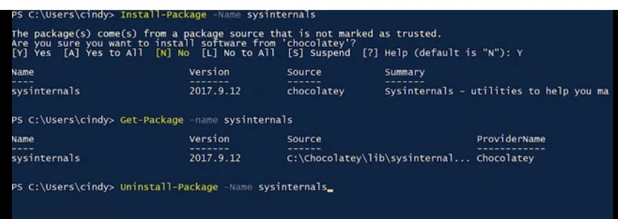
Linux: Package Manager Apt
Now, let's talk about the package manager used in Ubuntu called
the APT or advanced package tool we've actually already used APT
in an earlier course. Hopefully, this won't look new. The APT
package manager is used to extend the functionality of the
package. It makes package installation a lot easier. It installs
package dependencies for us, makes it easier for us to find
packages that we can install, cleans up packages we don't need,
and more.
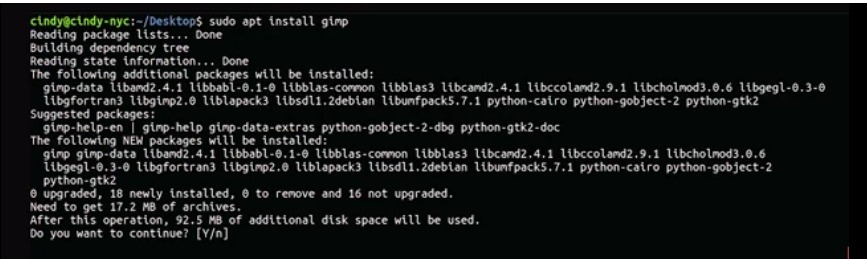
Let's see how we would install the open-source graphical editor
GIMP using APT. If you want to follow along on your own machine,
I've included a link to the GIMP download in the next reading.
Sudo apt install gimp. Riproduci il video a partire da ::47 e
segui la trascrizione0:47 Let's take a look at what this command
is doing. apt grabs the dependencies that this package requires
automatically and asks us if we want to install it. You can see
this line here, 0 upgraded 18 newly installed, zero removed and 16
not upgraded. This gives us a good overview of what we're doing to
the packages on our machine. Riproduci il video a partire da :1:18
e segui la trascrizione1:18 Now, let's remove this package. Sudo
apt remove gimp Riproduci il video a partire da :1:31 e segui la
trascrizione1:31 You can see that it removes dependencies for us
that we're not using anymore because we don't need gimp. You'll
also notice that when installing this package, we didn't have to
download the gimp package. It was just on our system. How's that
possible? Well, thanks to something known as a package repository,
we don't have to manually search for each and every software we
want online. We've already seen the chocolatey package repository
in action. Repositories are servers that act like a central
storage location for packages. Lots of software developers and
organizations hosts their software on the internet and give out a
link to where that location is. You can add that link to your own
machine, so it references that package or listed packages. You've
already seen this with the registered dash package source command
lit when we added the location of the chocolatey repository. In
Linux, where do you add a package or repository link? The
repository source file in Ubuntu is /etc/apt/sources.list. Your
computer doesn't know where to check for software if you don't
explicitly add the package or repository links to this file. Let's
just open this up real quick and take a peek. There's some extra
information in here that isn't important but you can see here that
there are links here. If you navigate to those links, you'll see a
directory that holds lots of packages. Ubuntu already includes
several repository sources in here to help you install the base
operating system packages and other tools too. If you work in a
Linux environment, there are also special repositories called PPAs
or personal package archives. PPAs are hosted on Launchpad
servers. Launchpad is a website owned by the organization
canonical limited. It allows open-source software developers to
develop, maintain, and distribute software. You can add PPAs like
you would a regular repository link but be a little careful when
using a PPA instead of the original developers repositories. PPA
software isn't as vetted as repositories you might find from
reputable sources like Ubuntu. They can sometimes contain
defective or even malicious software. One more thing to call out
about repositories is that the repository managers update their
software pretty regularly. -----------In Ubuntu, where are
repository sources listed Repository sources are found in the
/etc/apt/sources.list file.-------- If you want to get the latest
package updates, you should update your package repositories with
the apt update and then apt upgrade commands. The apt update
command updates the list of packages in your repositories so you
get the latest software available, but it won't install or upgrade
packages for you. Instead, once you have an updated list of
packages, you can use apt upgrade and it'll install any outdated
packages for you automatically. Before installing new software,
it's good to run apt update to make sure you're getting the most
up-to-date software in your repositories. You'll also want to run
apt upgrade to install any available updated packages on your
machine. You can use the apt dash dash help command to learn more
about the commands available with apt. We won't cover them all,
but you can list packages, search packages, get more information
about packages and more. Awesome. Now that you've entered the apt
command to your toolkit, you're ready to maintain packages in
Linux. This is a skill you'll be using a whole lot in the IT
support world.
What happenning in the background
Windows: Underneath the Hood
We've talked a lot about the practical aspects of installing
software which has been abstracted for us in the form of package
managers. But as someone who maybe work in IT, it's also important
for you to understand what happens underneath the hood when
installing or removing software. In other words, what really
happens with the underlying technology when you perform this
action? You might come across a situation where a package you
install modifies a configuration file that it's not supposed to
and then starts causing issues for you. How does software
installation work underneath the hood? Let's take a look at how an
EXE gets installed on Windows. When you click on an installation
executable, what happens next depends on how the developer of the
program has set their application up to be installed. If the EXE
contains code for a custom installation that doesn't use the
Windows installer system, then the details of what happens under
the hood will be mostly unclear. This is because most Windows
software is distributed in closed source packages. Meaning you
can't look at the source code to see what the program is doing. In
this case though, although you can't read the instruction the
developer has written, you can use certain tools to check out the
actions the installer is taking. One way to do this would be to
use the process monitoring program provided by the Microsoft Sys
internals toolkit. This will show you any activity the
installation executable is taking, like the files it writes and
any process activity it performs. What about an MSI file or an
executable wrapping and MSI? Again, the application itself will be
close sourced, so you won't be able to peek at the source code to
see what it does. But installation packages that use the MSI
format have a set of rules and standards they need to conform to
so that the Windows installer system can understand their
instructions and perform the installation. There are more to MSI
files than it might seem at first. In fact, they aren't simple
files at all. There are actually a combination of databases that
contain installation instructions in different tables, along with
all of the files, objects, shortcuts, resources and libraries the
program will need all grouped together. The Windows installer uses
the information stored in the tables in the MSI database to guide
how the installation should be performed. They'll know where files
and application data should go and any other things that should
happen to successfully install the program. The Windows installer
will keep track of all the actions it takes and create a separate
set of instructions to undo them. This is how it lets users
uninstall the program. If you're curious about the details of what
goes into an MSI file or want to create a Windows installer
package yourself, check out the orca.exe tool that Microsoft
provides. It's a good way to satisfy your curiosity. Orca is part
of the Windows SDK or Software Development Kit, but you don't need
to be a programmer to use it. Orca can help you edit or create
Windows installer packages. Feel free to explore what it can do.
We've provided a link to the tool in the supplemental reading
right after this video. Wow, there's a lot going on underneath the
hood in a Windows installation and it's all kicked off by a couple
of clicks. So what about lakes? Glad you asked. That's up next.
In Linux, software installations are a little bit more clear. We
mentioned in an earlier lesson that you can install software
directly from source code. This method changes depending on the
software, because different programming languages are compiled
differently. We won't go in depth about software development, but
let's say we had an archive with a simple package we want to
install. This is my flappy app package. I've already extracted it
so you can see there's a setup script. This is a script file that
will run a bunch of tasks on the computer in order to set up the
package and then flappy app code. This is the actual software
code. The README is a pretty standard file contained in source
archives that has information about the archive. It not so subtly
ask you to read it before you do anything. The setup script is
what we're concerned with since it tells us how to install our
package. A sample setup script can contain program instructions
like compile flappy app code into machine instructions. Copy
compiled flappy app, binary to /bin directory, or create a folder
to /home / whatever the user name for flappy app is.
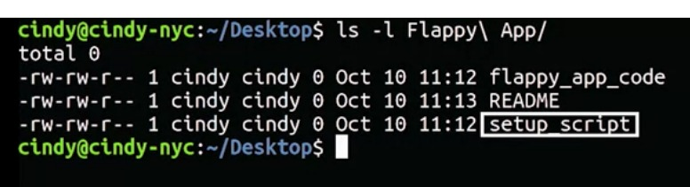
This is a very simple overview of what happens when you install a
simple package. In the end, the software developers decide what
their software needs to work and runs tasks to get it working.
It's up to the developer whether those tasks are creating files or
updating directories. If you knew the programming languages used,
you could read these instructions yourself, but that's a bit out
of scope for this course anyways, that's how software installation
works in Linux in a nutshell. Required en
Device Software Manager
Windows: Devices and Drivers
An important piece of software that we've talked about but haven't
really seen in action is a driver. Remember that a driver is used
to help our hardware devices interact with our operating system.
In this lesson, we're going to talk about device drivers and how
to manage them. First, let's talk about how to manage the devices
that our computer sees, and then we'll go over how we install
drivers for them. In Windows, Microsoft groups, all of the devices
and drivers on the computer together in a single Microsoft
management console called the device manager. You can get to the
device manager in a couple of different ways. You can open up the
run dialog box and type in devmgmt.msc. Or you can right click on
this PC, select Manage and click on the Device Manager option in
the left hand navigation menu. I'm just going to open it up from
here. Most devices you've got on your computer will be grouped
together according to some broad categories by Windows. So, any
displays you might be using with your computer would show up under
the monitor section in the device manager. Riproduci il video a
partire da :1:9 e segui la trascrizione1:09 Like so. This grouping
usually happens automatically when you plug in a new device, it's
part of the plug and play system that Windows uses to
automatically detect new hardware plugged into your computer. It
then recognizes and installs the appropriate software to manage
it. If you're interested, you can read more about the PNP system
in the supplementary reading. We'll give you an overview how this
works too. So you can get a feel for it. When you plug a new
device, like a mouse or keyboard into your computer, the Windows
operating system will go through a few steps to try and get it
working. Most vendors or computer hardware manufacturers will
assign a special string of characters to their devices called a
hardware ID. When Windows notices that a new device has been
connected, the first thing it will do is ask the device that's
been plugged in for its hardware ID. Once Windows has the new
devices hardware ID, the OS uses it to search for the right driver
for the device. It looks for in a few places, starting with a
local list of well known drivers. Then it goes on to Windows
update or the driver's store if it needs to expand the search.
Sometimes the device will come with an installation disk which
contains custom driver software, and you can tell Windows to look
there to. Finally, Windows will take the driver software it found
and install it, so you can use your new device. Although this
process mostly happens automatically and behind the scenes, you
can interact directly with the Windows drivers through the device
manager console we mentioned earlier. You can expand any of the
categories in the device manager to view the devices inside them.
Like so, you can also use the all powerful Windows, right click to
open up a menu with options to work with them. Riproduci il video
a partire da :2:53 e segui la trascrizione2:53 You can uninstall
disable and update a device driver from this menu, you can also
tell Windows to look for hardware changes, like a newly plugged in
device. Finally, if you choose properties from the right click
menu, you can see some details about the device and its driver.
Riproduci il video a partire da :3:12 e segui la trascrizione3:12
Like its manufacturer and the driver version being used. Required
en
Linux: Devices and Drivers
Ubuntu has a slightly messier way of showing us device management.
In Linux, everything is considered a file, even hardware devices.
When a device is connected to your computer, a device file is
created in the /dev directory. Let's take a look at this
directory. Riproduci il video a partire da ::22 e segui la
trascrizione0:22 There are lots of devices in this directory, but
not all of them are actually physical devices. For example, the
/dev /null devices in here. We won't talk about all the device
types in Linux because there are a lot of them. But we'll go over
the more common ones you'll see, character devices and block
devices. Character devices like a keyboard or mouse transmit data
character by character. Block devices like USB drives, hard
drives, and CDROMs transfer blocks of data. A data block is just a
unit of data storage. Remember from an earlier lesson that the
first bit you see in an ls-l command is the type of file. So far,
we've seen dash, which stands for a regular file, and a D, which
stands for directory. But in this output, we can see we have a few
other file types. Some of them have B for block device and C for
character device. Let's look at some of the block devices will be
interacting with in this course. You'll see a few files that start
with /dev, /sda or /sdb. Sd devices are mass storage devices like
our hard drives, memory sticks, etc. If you see an a after sd, it
just means the device was detected by the computer first. You
might see something like /dev /sda, /dev /sdb, /dev /sdc.
Revisiting the /dev /null device, we can see it's considered a
character device because it's used to transfer data character by
character. Riproduci il video a partire da :2: e segui la
trascrizione2:00 This is a pretty simple overview of device files.
I left a lot of stuff out that you don't necessarily need to know
now. Let's talk about updating device drivers for Linux. With
Windows, we were able to just click Update driver and in most
cases that works, in Linux, things are a little more complicated
and at the same time, pretty easy. I'm not trying to be confusing,
you'll see what I mean in a moment. Device drivers aren't stored
in the /dev directory. Sometimes they're part of the Linux kernel.
Remember that the kernel of our machine handles the interaction
with hardware. The kernel is really monolithic piece of software
that has lots of functions, including support for lots of
hardware. These days, a lot of hardware support is built into the
kernel so when you plug in a device, it automatically works. But
if there are devices that don't have support built into the
kernel, they most likely have something called a kernel module.
Well, what's this kernel module thing? For a lot of developers,
touching software like the Linux kernel is intimidating. Instead,
they can create kernel modules which extend the kernels
functionality without them actually touching it. If you need to
install a kernel module for a specific type of device, you can
install it the same way we've been installing all software in
Linux. Keep in mind that not all kernel modules are drivers.
Supplemental reading for Linux Devices and Drivers
Linux Devices and Drivers
In this reading, you will learn how devices and drivers are
managed in Linux. Previously, you learned that in Linux, devices
attached to the computer are recognized by the operating system
as device files. Devices are located in the /dev directory in
Linux. A few examples of devices you may find in the /dev
directory include:
/dev/sda - First SCSI drive
/dev/sr0 - First optical disk drive
/dev/usb - USB device
/dev/usbhid - USB mouse
/dev/usb/lp0 - USB printer
/dev/null - discard
Some of the Linux device categories include:
Block devices: Devices that can hold data, such as hard
drives, USB drives, and filesystems.
Character devices: Devices that input or output data one
character at a time, such as keyboards, monitors, and
printers.
Pipe devices: Similar to character devices. However, pipe
devices send output to a process running on the Linux machine
instead of a monitor or printer.
Socket devices: Similar to pipe devices. However, socket
devices help multiple processes communicate with each other.
Installing a device in Linux
There are hundreds of versions of Linux available due to the
fact that Linux is an open source operating system. The methods
for installing devices on Linux can vary from version to
version. The instructions in this section provide various
options for installing a printer and its device drivers on a Red
Hat 9 Linux system running the GNOME user interface.
Device autodetect with udev
Udev is a device manager that automatically creates and removes
device files in Linux when the associated devices are connected
and disconnected. Udev has a daemon running in Linux that
listens for kernel messages about devices connecting and
disconnecting to the machine.
Installation through a user interface - GNOME
There are multiple user interfaces available for Linux. These
instructions are specifically for the GNOME user interface.
In the GNOME user interface, open the Settings menu.
On the left-side menu, select Printers.
Click the Unlock button in the top right corner to change the
system settings. Note that your user account must have
superuser, sudo, or printadmin privileges to unlock the system
settings for printers.
A dialog box will open showing a list of available printers.
If your network has a large number of printers, you can search
for the printer by IP address or host name.
Select the printer you want to install on the local system and
click Add.
The printer listing will appear in the Settings window for the
Printers.
In the top right corner of the printer listing, click the
Printer Settings icon and select Printer Details from the
pop-up menu.
The details of the printer will open in a new window. You
should have three options for installing the printer driver:
Search for Drivers: The GNOME Control Center will
automatically search for the driver in driver repositories
using PackageKit.
Select from Database: Manually select a driver from any
databases installed on the Linux system.
Install PPD File: Manually select from a list of
postscript printer description (PPD) files, which may be
used as printer drivers.
Installation through the command line
Red Hat Linux uses the Common Unix Printing System (CUPS) to
manage printers from the command line. CUPS servers broadcast to
clients for automatic printer installation on Linux machines.
However, for network environments with multiple printers, it may
be preferable to manually install specific printers through the
command line.
From the command-line, enter $ lpadmin -p printername -m
driverfilename.ppd
Lpadmin is the printer administrator command.
The -p printername command adds or modifies the named
printer.
The -m driverfilename.ppd command installs the postscript
printer description (PPD) driver filename that you
provide. The file should be stored in the
/usr/share/cups/model/ directory.
Enter $ man lpadmin to open the manual for the lpadmin
command to find additional command line options.
How to check if a device is installed
There are a couple of methods for checking if a device is
already installed on a Linux machine:
Through a user interface like GNOME
In the GNOME user interface, open the Settings menu.
Browse each device set on the left-side menu.
The attached devices of the selected device type will appear
in the window pane on the right.
Through the command line
The most common way to check if a device is installed is to use
the “ls” (lowercase L and S) command, which means “list”.
$ ls /dev - Lists all devices in the /dev folder
$ lscpci - Lists devices installed on the PCI bus
$ lsusb - Lists devices installed on the USB bus
$ lsscsi - Lists SCSI devices, such as hard drives
$ lpstat -p - Lists all printers and whether they are enabled
$ dmesg - Lists devices recognized by the kernel
Windows: Operating System Updates
You've made it to the last lesson in this module where we're going
to cover the most important software, the operating system. We've
already looked at how to install and maintain applications like a
word processor, graphical editor, etcetera. Then we looked at how
to install device driver software too. Now, we're going to look at
the core operating system updates. Spoiler alert. They work just
the same way as every other software we've installed. It's
important to keep your operating system up to date for lots of
reasons. You want the newest features that your operating system
has and you want the security updates that your operating system
needs. When your operating system manufacturer discovers a
security hole, the OS, they do their best to create a patch for
this hole. Riproduci il video a partire da ::45 e segui la
trascrizione0:45 A security patch is software that's meant to fix
up a security hole. When you have an operating system update with
security patches it's vital that you install those patches right
away. The longer you wait, the more prone you are to being
affected by a security hole. As an IT support specialist, it's
very common to routinely install operating system updates to keep
your system up to date and secure. Windows usually does a great
job of telling you when there are updates to install. The Windows
update client service runs in the background on your computer to
download and install updates and patches for your operating
system. It does this by checking in with the Windows update
servers at Microsoft every so often. If it finds updates that
should be applied to your computer, it'll download them if you
decided to allow it to. More on that later. Once the download has
completed depending on your Windows update settings, the Windows
update client will ask you if it's okay to install the updates or
just go ahead and install them automatically. This process usually
requires a restart of your computer which the client performs
after requesting permission. In versions of Windows before Windows
10z you can tell Windows to manage your updates in a few different
ways. You can have the Windows update client install updates and
patches that Microsoft releases automatically or you can let
Windows update know that you want to decide whether or not you'd
like to download and install them. You can even turn off updating
entirely, but that's probably not a good idea for the security
reasons we talked about. You can configure Windows update by
searching updates in the search box and go into Windows update
setting. Riproduci il video a partire da :2:24 e segui la
trascrizione2:24 From there, you can tell the Windows update
client to check for new updates, look at the history of updates
installed or change the way that will download and apply patches
by clicking into the settings section. Riproduci il video a
partire da :2:38 e segui la trascrizione2:38 From there, you can
tell the update client how you want to manage your updates and
even set a time when you want them installed. Windows 10 does
things differently. Instead of downloading a handful of
independent updates that you can choose to apply or not apply to
your computer, updates are cumulative. This means that every month
a package of updates and patches is released that supersedes the
previous month's updates. The idea behind this is that computers
will need to download less stuff in order to be up to date. As an
example of how this might be beneficial, think about a Windows
machine that's been turned off for a while, when it boots up again
after a long period of inactivity, it will need to download all
the updates that it's missed and apply them. If it's been off for
a really long time, this could mean that will need to download and
apply hundreds of updates. With a cumulative update model, a
computer like that would only need to download the latest
cumulative update, then be good to go. One downside to this is
that in Windows 10, installing updates is no longer optional. You
also can't pick and choose the updates you want to apply since
they're all rolled into one monthly release. Microsoft has
announced that the update model in Windows 7 and 8 will also be
moving in this cumulative package direction. So Windows 10 users
won't be alone. Required en
Supplemental Reading for Windows Update
The Windows operating system updates frequently, These updates
often include important security patches. It is important \ to
keep your Windows systems up to date with the most current
changes. This reading covers the different types of Windows
updates and how to install them.
The Windows OS includes the Windows Update Client service. This
service runs in the background on your computer to help you
download and install updates and patches for the operating
system. It does this by checking in with the Windows Update
servers at Microsoft and looking for updates that should be
applied to your computer. If your Windows system is functioning
properly, the Windows Update Client will alert you when there
are updates to install.
Types of Windows updates
Critical updates address critical bugs that are not security
related. These are widely released fixes for a specific
problem.
Definition updates are widely released and frequent updates to
a product's definition database. Definition databases are used
to detect specific types of objects on your system, such as
malicious code, phishing websites, or junk mail.
Driver updates: Drivers are software that control the input
and output of devices running on your system. This software
may be updated when new versions of the driver become
available for your devices or if you install a new device on
your system.
Feature packs add new product functionality to your system.
This functionality is first distributed as an update to a
product currently running on your system. It is usually
included in the next full product release.
Security updates are widely released patches for a security
related vulnerability. Security vulnerabilities are rated by
severity as being critical, important, moderate, or low.
Critical vulnerabilities pose an active threat. Patch
should be installed immediately.
Important vulnerabilities pose a likely threat. Patch
should be installed as soon as possible.
Moderate vulnerabilities pose a potential threat. Patch
should be installed soon.
Low severity vulnerabilities are not an immediate threat,
but a patch is recommended.
Service packs collect all tested hotfixes, security updates,
critical updates, and general updates together and distribute
them as a set. A service pack also may contain new fixes or
design changes requested by customers.
General updates are widely released fixes for specific
problems. They address noncritical bugs that are not security
related.
Update rollups collect a set of tested hotfixes and updates
that target a specific area, such as a component or service.
These fixes and updates are packaged together for easy
deployment.
Security-only updates collect all the new security updates
from a given month for distribution through the Windows Server
Update Services (see below). These updates are called
“Security Only Quality Update” when you download them and will
be rated as “Important.”
New OS: A new version of the Windows operating system may also
be deployed through the Windows Update Client. For example,
Windows 10 and 11 were both delivered as updates to a
previously installed OS.
Installing updates
Automatic updates
Beginning with Windows 10, the Windows OS ships with automatic
updates turned on. With automatic updates on, Windows Update
Client will download and install available updates without
prompting you. For older versions of Windows, you must configure
Windows Update to update automatically.
Windows 10 and 11 no longer allow you to turn off automatic
updates completely, but you can pause updates for up to 35 days.
Once the pause period ends, you are required to perform an
update before you can pause again.
Manual updates
You can manually prompt Windows to perform an update at any time
by checking for updates with the Windows Update tool. Manually
updating does vary based on the version of Windows used. For
detailed instructions on how to do this, see the
Windows Update: FAQ page
To ensure top performance and security for your Windows system
you should make sure it is always updated to the most recent
changes.
Key takeaways
The Windows operating system updates frequently, so it is
important that you know how to keep your Windows systems up to
date with the most current changes.
Windows operating systems include the Windows Update Client
service to help you download and install updates and patches
for the operating system.
There are several types of updates that the Windows Update
Client might find for your Windows system.
The process for installing updates depends on which version of
Windows you’re using.
Regular updates ensure top performance and security for your
Windows system.
Linux: Operating System Updates
In Linux, you've already learned how to update and upgrade
software on your machines. When using the apt update and apt
upgrade command, they might already install security updates for
you. But when you run apt upgrade, it doesn't upgrade the core
operating system. In Windows, our OS package is Windows 10, in
Linux, it's the kernel along with other packages. The kernel
controls the core components of our operating system. Like our
word processors, the kernel is just another package. The kernel
developers regularly include security patches, new features and
fixes for bugs in their updates. If you want to to get all these
things, you should be running a new kernel. To first view what
kernel version you have, we're going to learn a new command called
uname, the uname command gives us the system information. If you
use the -r flag for kernel release you'll see what kernel version
you have. Riproduci il video a partire da ::53 e segui la
trascrizione0:53 You can see that I have kernel version 4.1 on
here. To update the kernel and other packages, we use our nifty
app command with the option full dash upgrade. Before running this
command, remember to update your application sources with apt
update, sudo apt update Riproduci il video a partire da :1:15 e
segui la trascrizione1:15 And now we can run sudo apt full
upgrade. Riproduci il video a partire da :1:30 e segui la
trascrizione1:30 If there's a new version of the kernel available,
it'll install it for us. Once you reboot the computer you can
start using it. You can verify the latest kernel is being used
with the uname -r command. We left out a few details about kernal
installations and security updates. But this is a good start to
updating your system. With that, we've covered all the essentials
to help you hit the ground running with software installation and
maintenance. Great work. You learned how to install stand alone
packages, use package managers and work with archives, device
drivers and core operating system updates. These skills will be
super useful as an IT support specialist.
Supplemental Reading for Linux Update
Linux is a free, open-source operating system used on a wide
variety of computing systems, such as embedded devices, mobile
devices including its use in the Android operating system,
personal computers, servers, mainframes, and supercomputers. The
Linux kernel is the core interface between a device’s hardware
and the rest of its processes. The kernel controls all the major
functions of hardware running the Linux operating system. To
keep the core operating system up to date with current security
patches, new features, and bug patches, you need to update the
Linux kernel. This reading covers how the Linux kernel functions
and how to update Ubuntu, the most common Linux distribution
Linux kernel
The Linux kernel is the main component of a Linux operating
system (OS). The kernel is software located in the memory that
tells the central processing unit (CPU) what to do. The Linux
kernel is like a personal assistant for the hardware that relays
messages and requests from users to the hardware.
The kernel has four main jobs:
Memory management tracks how much memory is being used by what
and where it is stored.
Process management determines which processes can use the
central processing unit (CPU), when, and for how long.
Device drivers act as an interpreter between the hardware and
processes.
System calls and security receives requests for service from
the processes.
To ensure that Linux distribution is running the most current
version of the operating system, you will need to update it
regularly.
Updating Ubuntu Linux distribution
A Linux distribution is an operating system (OS) that includes
the Linux kernel and usually a package management system. There
are almost one thousand Linux distributions, and each
distribution has a slightly different way of updating.
The Ubuntu distribution is one of the most popular since it is
easy to use. There are two ways to update the Ubuntu
distribution:
Update Manager is a graphical user interface (GUI) that is
nearly 100% automated. When updates are available, it will
open on your desktop and prompt you to complete the updates.
It checks for security updates daily and nonsecurity updates
weekly. You can also choose to check for updates manually.
Apt is the Ubuntu package management system that uses command
line tools to update a Ubuntu distribution. Apt does not check
for updates automatically, you must manually run it to check
for updates. You can use the following commands to check for
updates and upgrade:
apt-get update To update with apt, open the terminal and
use the command apt-get update. This command prompts you
to enter your password, then it updates the list of system
packages.
apt-get upgrade Once the package list is up to date, use
the command apt-get upgrade to actually download and
install all updated versions for the packages in the list.
Key Takeaways
Linux is a free open-source operating system used on a wide
variety of computing systems.
The kernel is a part of the operating system of Linux and runs
communications between the computer’s hardware and its
processes.
Unbuntu is the most popular distribution because it is easy to
use and update with the update manager or the command sudo
apt-get upgrade.
As improvements to the processes are released, Linux needs to
be updated to ensure the kernel communicates the right
information to the hardware about the process.
Module 4
Filesystem
Review of Filesystems
You may remember that we introduced the concept of a file system
in the technical support fundamentals course, here's a refresher.
A file system is used to keep track of files and file storage on a
disk. Without a file system, the operating system wouldn't know
how to organize files. So when you have a brand new disk or any
type of storage device, like a USB drive, you need to add a file
system to it. There are lots of file systems out there, but the
two that we'll talk about in this course are recommended as
default file systems for Windows and Linux. For Windows, we use
the NTFS file system and for Linux it's recommended to use ext4.
File systems have different compatibility with different OSS, most
of the time, cross operating system support is minimal at best.
Let's say you have a USB drive that's using an NTFS file system.
Both Windows and Linux's Ubuntu can read and write to the USB
drive, but if you have an ext4 USB drive, it'll only work on
Ubuntu, and not on windows. At least without the help of third
party tools. It's pretty likely that you'll encounter this
situation in an IT support role. Let's say you have some important
files on that same USB drive that you want to copy over to your
Windows, Linux, and MacOSs, what would you do then? This is a
pretty common situation. You'd have to reformat or wipe the USB
drive and add a file system that's compatible with all three
operating systems. Luckily, there are foul systems like FAT32 that
support reading and writing data to all three major operating
systems. FAT32 has some shortcomings though, it doesn't support
files larger than four gigabytes and the size of the file system
can't be larger than 32gigabytes.
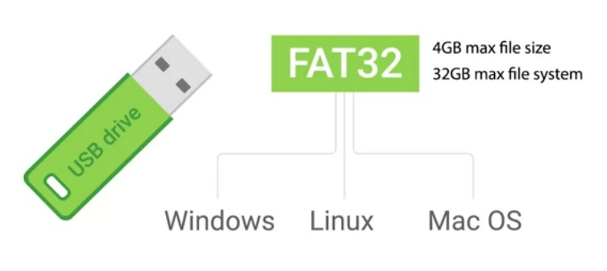
This might be enough for a small USB drive, but it's not really
great for anything else. Already, now that you've got a quick
refresher on file systems, let's spend the next few lessons
discussing how you actually set them up.
Disk Partitioning and File System Essentials
Before we start adding a file system to a disk, let's do a rundown
of the components of a disk that allow you to store and retrieve
files. A storage disk can be divided into something called
partitions. A partition is just a piece of the disk that you can
manage. When you create multiple partitions, it gives you the
illusion that you're physically dividing a disk into separate
disks. To add a file system to a disk, first you need to create a
partition. Usually we just have a single partition for our OS but
it's not uncommon to have multiple partitions for different uses.
Let's say you want to have two partitions on a disk. One for a
Windows OS and one for Linux OS. Instead of using two machines to
use both operating systems, you can just use one machine and
switch between the two OSs on boot up.
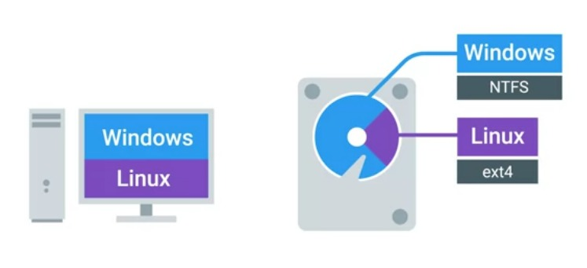
You can also add different file systems on different partitions of
the same disk. Partitions essentially act as their own separate
sub disks but they all use the same physical disk. One thing to
call out is that when you format a file system on a partition, it
becomes a volume. Volume and partition are sometimes mistakenly
used synonymously. But we want to make sure that you understand
this distinction. The other component of a disk is a partition
table. A partition table tells the OS how the disc is partitioned.
The table will tell you which partitions you can boot from, how
much space is allocated to partition, etc. There are two main
partition table schemes that are used. MBR or master boot record
and GPT or GUID partition table. These schemes decide how to
structure the information on partitions. MBR is a traditional
partition table and it's mostly used in the Windows OS. MBR only
lets you have volumes sizes of two terabytes or less. It also uses
something called primary partitions. You can only have four
primary partitions on a disk. If you want to add more, you have to
take a primary partition and make it into something known as an
extended partition. Inside the extended partition, you can then
make something called a logical partition. It's a little odd to
get it first but that's just how the partition table was created.
MBR is an old standard. It's slowly being faded out by the next
partition table scheme, we'll talk about GPT. GPT is becoming the
new standard for disks. You can have a volume size greater than
two terabytes and it only has one type of partition. You can make
as many of them as you want in a disk. In an earlier lesson, we
learned about a new bios standard called UEFI. That's become the
default bios for new systems. To use UEFI booting, your disk has
to use the GUID partition table. Now that you know what you need
to do to make a partition, what's partitioning an actual disk? The
next few lessons, we're going to learn how to partition and format
a USB drive for each respective OS.
Windows: Disk Partitioning and Formatting a Filesystem
Now that we've got a little theory under our belts, how can we
actually partition a disk and format a file system in Windows?
Although a quick web search will turn up all kinds of third-party
disk partitioning programs other people have written, Windows
actually ships with a great native tool called the disk management
utility. Like most things in Windows, there are a few ways to get
to disk management. We'll launch it by right-clicking "This PC",
Selecting the "Manage" option, then clicking the "Disk Management"
console underneath the storage grouping. Riproduci il video a
partire da ::38 e segui la trascrizione0:38 We should see a
display of both the disks and disk partitions, along with
information about what type of file system they're formatted with.
There are all kinds of good things to know here too, like the free
and total capacity of disks and partitions. One super cool
property of the disk management console is that from here, you can
also make modifications to the disk and partitions on your
computer. Messing with the partition where the Windows operating
system is installed probably isn't the best way to demonstrate the
partitioning and formatting abilities of the disk management
console. Let's use a USB drive instead. Riproduci il video a
partire da :1:18 e segui la trascrizione1:18 Once the drive has
been inserted and the plug-and-play service does the work of
installing the driver for it, you should see it show up in the
disk management as an additional disk. The USB drive is currently
formatted using the FAT32 file system. Let's go ahead and reformat
that partition using NTFS instead. To do this, we right-click on
the partition and choose "Format". From this window, we can choose
the volume label or name we'd like to give the disk. Let's just
stick with USB drive. You can also specify the file system which
will change to NTFS. That's pretty straightforward, but there are
also some other options that might not be so clear. Like what's
that allocation unit size thing? Well, the allocation unit size is
the block size that will be used when you format the partition in
NTFS, in other words, this is the size of the chunks that the
partition will be chopped into. Data that needs to be saved will
spread out across those chunks. This means that if you store lots
of small files, you'll waste less space with small block sizes. If
you store a large files, larger block sizes will mean you'll need
to read less blocks to assemble the file. We'll pick the default,
which is fine in most cases. You'll also see the option to perform
a quick format is available. The difference between a quick format
and a full format is that in a full format, Windows will do a
little extra work to scan the disk or a USB drive, in our case,
for errors or bad sectors. This extra work will make the
formatting process a little longer, so we'll just stick to quick
for now. We're on a roll and we don't want anything to slow us
down. The last option on the format screen is whether or not to
enable file or folder compression. The decision to enable or
disable compression comes with a trade-off. If you enable
compression, your files and folders will take up less space on the
disk, but compressed files will need to be expanded when you open
them, which means the computer's processor will need to do some
extra work. We are particularly concerned with squeezing out every
last bit of disk space, so we'll leave this box unchecked.
Finally, we can hit "Okay" to proceed with the format. Windows
will warn us first that formatting the volume will erase any data
that might be on it. Once we let it know that it's okay, it'll
start the formatting process. After a little bit of processing, we
should see the label on the partition turn to healthy. Using the
GUI is pretty intuitive, but there's also a command line way to
accomplish the same task. This can come in handy if you need to
automate disk partitioning. To do disk manipulation from the CLI,
we'll dive into a tool called diskpart. Diskpart is a
terminal-based tool built for managing disks right from the
command line. Let's format our thumb drive again, but using
diskpart instead of the GUI. First, we'll plug in our thumb drive.
Then to launch diskpart, all we need to do is open up a command
prompt, in this case, command.exe and type diskpart into it. This
will open up another terminal window where the prompt should read
diskpart. You can list the current disks on the system by typing
list disk. Next, we identify the disk we want to format. A good
signal is the size of the disk, which will be much smaller for our
USB drive. Then we can select it with select disk and then disk 1.
Now, we'll wipe the disk using the clean command, which will
remove any and all partition or volume formatting from the disk.
With the disk wiped, we now need to create a partition in it. This
can be done with the create partition primary command, which will
create a blink partition for our file system. Then, let's select
the partition with select partition 1; that's the number of our
freshly created partition. Now, we'll mark it as active by simply
typing active. If you guessed that the next step is to format the
disk with the NTFS file system, you're right. We can do this by
running this command at the diskpart prompt. Format, FS for file
system, NTFS, and the label, I'm just going to call it
my-thumb-drive, and then the formatting type, we'll want to make
it quick. This command will format the thumb drive with NTFS in
quick mode, which we talked about earlier. We just gave it the
name, my-thumb-drive. Congratulations, you've just formatted a USB
drive from the command line. There you have it. That's how you
format a disk with the NTFS file system in the Windows operating
system using both the command line and the GUI. If you want a
refresher, feel free to watch this lesson again before heading to
the next one. Required en
Supplemental Reading for Disk Partitioning and Formatting in
Windows
Disk partitioning enables more efficient management of hard disk
space by breaking or “slicing” up the disk storage space into
partitions. This breaking allows for each partition to be
managed separately by reducing inefficient use of space.
DiskPart is a disk partitioning utility on the Windows operating
system which uses the command line to perform operations. This
reading covers the component parts that make up a drive, common
DiskPart commands, and how cluster size affects your usable
drive space in the Windows OS.
DiskPart
The DiskPart command terminal helps you manage storage on your
computer's drives. DiskPart utility can be used to manage
partitions of hard disks including creating, deleting, merging,
or expanding partitions and volumes. It can also be used to
assign a file formatting system to a partition or volume.
There are three main divisions of storage that you will find on
a drive: cluster, volume, and partition.
Cluster (allocation unit size) is the minimum amount of space
a file can take up in a volume or drive.
Volume is a single accessible storage area with a single file
system; this can be across a single disk or multiple.
Partition is a logical division of a hard disk that can create
unique spaces on a single drive. Generally used for allowing
multiple operating systems.
To use DiskPart you will need to use specific commands to select
and manage the parts of your drive you need to access. For a
list of common DiskPart terminal commands visit this helpful
guide.
The commands let you work with partitions and volumes but the
base storage unit called cluster size is set when initiating the
volume or partition.
Cluster Size
Cluster size is the smallest division of storage possible in a
drive. Cluster size is important because a file will take up the
entire size of the cluster regardless of how much space it
actually requires in the cluster.
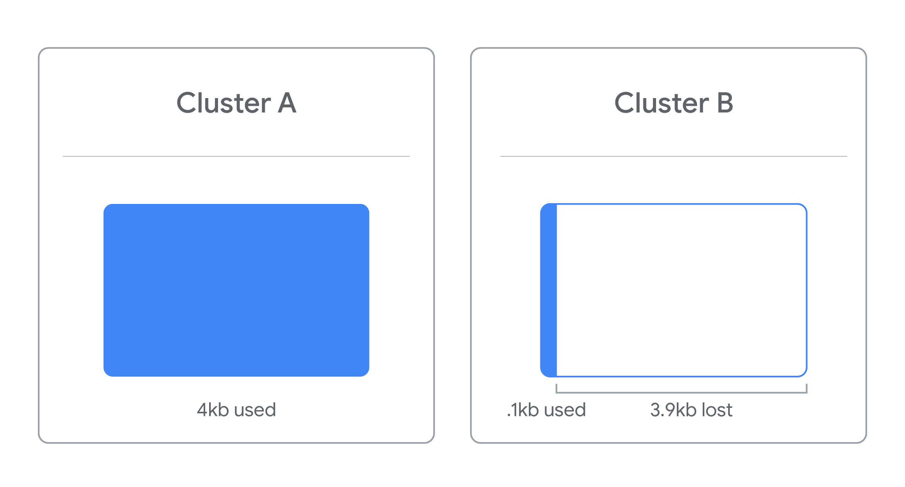
For example, if the cluster size is 4kb (the default size for
many formats and sizes) and the file you're trying to store is
4.1kb, that file will take up 2 clusters. This means that the
drive has effectively lost 3.9 kb of space for use on a single
file.
When partitioning a disk, you should specify the cluster size
based on your file sizes. If no cluster size is specified when
you format a partition, a default is selected based on the size
of the partition. Using defaults can result in loss of usable
storage space.
It is important to remember when using DiskPart that the actions
you take are permanent so be careful not to erase data
accidentally.
Key Takeaways
DiskPart is a tool that lets you manage your storage from a
command line interface and is useful for a multitude of actions
including creating, deleting, merging, and repairing drives.
The three main divisions of storage that you will find on a
drive are cluster, volume, and partition.
To use DiskPart you will need to use specific commands to
select and manage the parts of your drive you need to access.
Cluster size is the smallest division of storage possible in a
drive. Cluster size is important because a file will take up
the entire size of the cluster regardless of how much space it
actually requires in the cluster.
Windows: Mounting and Unmounting a Filesystem
Now that you've formulated your new file system, there's one more
step left. You have to mount your file system to a drive. In IT
when we refer to mounting something like a file system or hard
disk, it means that we're making something accessible to the
computer. In this case, we want to make our USB drive accessible,
so we mount the file system to drive. Windows does this for us
automatically. You might have noticed this. If you plug in a USB
drive, it'll show up under your list of drives and you can start
using it right away. When you're done using the drivers, we'll
just have to safely eject or essentially unmount the drive by
right-clicking and selecting Eject. Required en
Linux: Disk Partitioning and Formatting a Filesystem
In Linux, there are a few different partitioning command line
tools we can use. One that supports both mbr and gpt partitioning
is the parted tool. Parted can be used in two modes, the first is
interactive, meaning were launched into a separate program like
when we use the less command. The second is command line, meaning
you just run commands while still in your shell. We're going to be
using the interactive mode for most of this lesson. Before we do
that, let's run a command to show what disks are connected to the
computer using the command line mode. We can do this by running
the parted-l command. So sudo parted-l. This list out the disks
that are connected to our computer. We can see that the
disk/dev/sda is 128GB.
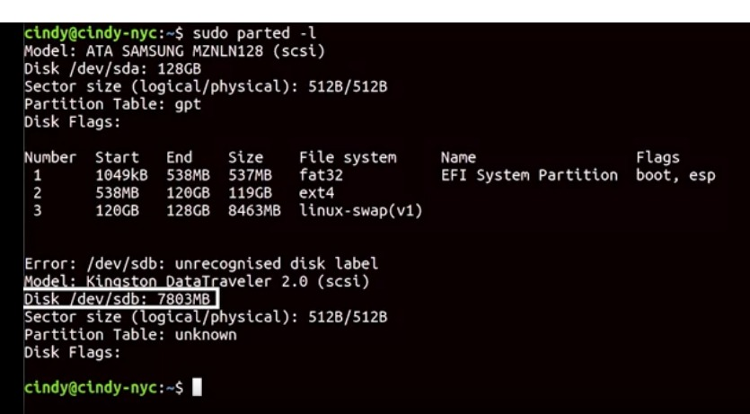
I've also plugged in a USB drive, and you can see that /dev/sdb is
around eight gigabytes. Let's quickly go through what this output
says. Here we can see the partition table is listed as gpt. The
number field corresponds to the number of partitions on the disk.
We can see that there are three partitions, since this disk is
/dev/sda, the first partition will correspond to /dev/sda1 and the
second will correspond to /dev/sda2 etc. The start field is where
the partition starts on the disk. For this first partition, we can
see that it starts at 1049 kB and ends at 538MB, the field after
that shows us how large the partition sizes. The next field, tells
us what file system is on the partition. Then, we have the name
and finally we can see some flags that are associated with this
partition. Riproduci il video a partire da :1:50 e segui la
trascrizione1:50 You can see here that /dev/sdb doesn't currently
have any partitions. We'll fix that in a minute. Let's select our
/dev/sdb disk and start partitioning it. We want to be super
careful that we select the correct disk when partitioning
something, so we don't accidentally partition the wrong disk.
We're going to use the interactive mode of parted by running sudo
parted /dev/sdb. Now we're in the parted tool. From here we can
run more commands, if we want to get out of this tool and go back
to the shell, then we just use the quick command. I'm going to run
print, just to see this disk one more time. It says we have an
unrecognized disc label. We'll need to set a disc label with the
make label command, since we want to use the gpt partition table,
let's use this command, mklabel gpt. Let's look at the status of
our disk again to do that, we can use a print command. Here, we
can see the disk information for the selected /dev/sdb disk. Now
it says we have the partition table, gpt. All right, let's start
making modifications to the disk. We want to partition the
/dev/sdb disk into two partitions. Inside the parted tool we're
going to use the mkpart command. The mkpart command needs to have
the following information, what type of partition we want to make,
what file system we want to format, and the start of the disk, and
the end of the disk. Like this, Riproduci il video a partire da
:3:28 e segui la trascrizione3:28 The partition type is only
meaningful for mbr partition tables. Remember the mbr uses
primary, extended, and logical partitions. Since we're formatting
this using gpt, we're just going to use primary as the partition
type. The start point here is one mebibyte and the endpoint is
five gibibytes, so our petition is essentially five gibibytes.
Remember from an earlier course, that data sizes have long been
referred to in two different ways, using the exact data
measurement, and the estimated data measurement. Remember that one
kibibyte is actually 1024 bytes, while one kilobyte is 1000 bytes.
We haven't really had to care about this distinction before. Some
operating systems sometimes measure one kilobyte as 1024 bytes,
which is confusing, but when dealing with data storage, we want to
make sure we're using the precise measurements, so we don't waste
precious storage space. Let's opt to use mebibyte and gibibyte in
our partition. Next we're going to format the partition with a
file system using mkfs. So I'm just going to quit, sudo mkfs- t
ext4 and I want to format the partition. So sdb1, Riproduci il
video a partire da :5:1 e segui la trascrizione5:01 We also left
the rest of the disc unpartitioned, because we're going to use it
for something else later. With that we've created a partition and
formatted a file system on a USB drive. Remember to always be
careful when using the parted tool. It's very powerful and if you
modify the wrong disk on here, it could cause a pretty big mess.
Even though we've partition our disk and formatted a file system
on here, we're not actually able to start reading and writing
files to it just yet. Riproduci il video a partire da :5:28 e
segui la trascrizione5:28 There's one last step to get a usable
disk in Linux. We have to mount the file system to a directory so
that we can access it from the shell.
Linux: Mounting and Unmounting a Filesystem
To begin interacting with the disk, we need to mount the file
system to the directory. You might be thinking, why can't we just
cd into slash dev slash SDB. That's the disk device, isn't it? It
is, but if we try to cd into slash dev, slash SDB like this,
Riproduci il video a partire da ::19 e segui la trascrizione0:19
We'd get an error saying the device is not a directory which is
true. To resolve this, we need to create a directory on our
computer and then mount the file system of our USB drive to this
directory. Let's pull up where our partition is with Sudo parted
dash L. Okay, I can see the partition that we want to access is
slash dev, slash sdb1. I've created a directory already under root
called my usb. So let's give this a try. So Sudo mount dev, sdb1,
my usb. Riproduci il video a partire da ::57 e segui la
trascrizione0:57 Now if we go to my usb, we can start reading and
writing to the new file system. Riproduci il video a partire da
:1:2 e segui la trascrizione1:02 We actually don't need to
explicitly mount a file system using the mount command. Most
operating systems actually do this for us automatically when we
plug in a device, like a USB drive. File systems have to be
mounted one way or the other because we need to tell the oS how to
interact with the device. We can also unmount the file system in a
similar way using the umount command. Unmounting is the opposite
of mounting a disk. So now let's unmount the file system. I can
either use sudu, you mount my usb. Sudu you mount dev sdb1. Both
will work to unmount a file system. When you shut down your
computer disks that were mounted manually are automatically
amounted. In some cases like if we were using a usb drive, we just
want to unmount the file system for the usb drive without shutting
down. Always be sure to unmount a file system of a drive before
physically disconnecting the drive. In the case of the usb drive,
we could run into some interesting file system errors if we don't
do this. Also keep in mind that when we use the mount command to
mount a file system to a directory, once we shut off the computer,
the mount point disappears. We can permanently mount a disk though
if we need it to automatically load up when the computer boots. To
do this, we need to modify a file called /etc/fstab. If we open
this up now you'll see a list of unique device Ids. Their mount
points what type of file system they are. Plus a little more
information. If we want to automatically mount file systems when
the computer boots, just add an entry similar to what's listed
here. Let's go ahead and do that really quickly. The first field
that we need to add for fcstab is the UUID or universally unique
ID of our usb drive. To get the UUID of our devices, we can use
this command. Sudo block ID. This will show us the UUID for block
device IDs aka storage device, IDs. And that's it. We've covered a
lot of essential disk management tasks. So far, we've partitioned
the disk, added a file system, and mounted it for use. Required en
Supplemental reading Mounting and Unmounting a Filesystem in
Linux
In this reading, you will learn how to mount and unmount file
systems in Linux using the fstab table. IT Support professionals
who work with Linux systems should know how to mount and unmount
file systems both manually and automatically. This skill is
often used when configuring Linux servers and other Linux
systems to connect to network file systems.
File system table (fstab)
File System Table (fstab) is a Linux configuration table. It
helps to simplify mounting and unmounting file systems in Linux.
Mounting means to connect a physical storage device (hard
drives, CD/DVD drives, network shares) to a location, also
called a mount point, in a file system table. In the past, IT
Support specialists for Linux systems had to manually mount hard
drives and file systems using the mount command. The fstab
configuration file made this administrative task more efficient
by offering the option to automate the mounting of partitions or
file systems during the boot process. Additionally, fstab allows
for customized rules for mounting individual file systems.
The fstab configuration table consists of six columns containing
the following parameters:
Column 1 - Device: The universally unique identifier (UUID) or
the name of the device to be mounted (sda1, sda2, … sda#).
Column 2 - Mount point: Names the directory location for
mounting the device.
Column 3 - File system type: Linux file systems, such as ext2,
ext3, ext4, JFS, JFS2, VFAT, NTFS, ReiserFS, UDF, swap, and
more.
Column 4 - Options: List of mounting options in use, delimited
by commas. See the next section titled “Fstab options” below
for
more information.
Column 5 - Backup operation or dump: This is an outdated
method for making device or partition backups and command
dumps. It should not be used. In the past, this column
contained a binary code that signified:
0 = turns off backups
1 = turns on backups
Column 6 - File system check (fsck) order or Pass: The order
in which the mounted device should be checked by the fsck
utility:
0 = fsck should not run a check on the file system.
1 = mounted device is the root file system and should be
checked by the fsck command first.
2 = mounted device is a disk partition, which should be
checked by fsck command after the root file system.
Example of an fstab table:
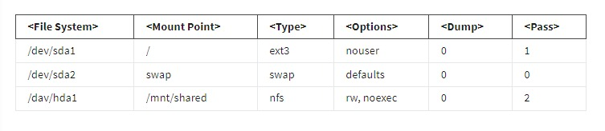
Fstab options
In Column 4 of the fstab table, the available options include:
sync or async - Sets reading and writing to the file system to occur synchronously or asynchronously.
auto - Automatically mounts the file system when booting.
noauto - Prevents the file system from mounting automatically when booting.
dev or nodev - Allows or prohibits the use of the device driver to mount the device.
exec or noexec - Allows or prevents file system binaries from executing.
ro - Mount file system as read-only.
rw - Mount file system for read-write operations.
user - Allows any user to mount the file system, but restricts which user can unmount the file system.
users - Any user can mount the file system plus any user can unmount file system.
nouser - The root user is the only role that can mount the file system (default setting).
defaults - Use default settings, which include rw, suid, dev, exec, auto, nouser, async.
Editing the fstab table
As an IT Support professional, you may need to expand the hard drive space on a server. Imagine that you have installed a new hard drive and the Linux server does not seem to recognize the drive. In the background, Linux has detected the new hardware, but it does not know how to display information about the drive. So, you will need to add an entry in the fstab table so that Linux will know how to mount it and display its entry within the file system. The following steps will guide you through this process:
Format the drive using the fdisk command. Select a Linux compatible file system, like ext4. If needed, you can also create a partition on the drive with the fdisk command.
Find which block devices the Linux system has assigned to the new drive. The block device is a storage device (hard drive, DVD drive, etc.) that is registered as a file in the /dev directory. The device file provides an interface between the system and the attached device for read-write processes. Use the lsblk command to find the list of block devices that are connected to the system.
Example output from the lsblk command:
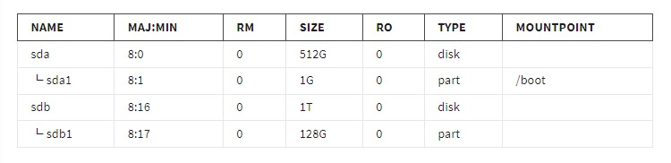
The seven columns in the output from the lsblk command are as follows:
a. NAME - Device names of the blocks. In this example, the device names are the existing sda drive and sda1 partition plus the new sdb hard drive and a newly formatted sdb1 partition.
b. MAJ:MIN - Major and minor code numbers for the device:
The major number is the driver type used for device communication. A few examples include:
1 = RAM
3 = IDE hard drive
8 = SCSI hard drive
9 = RAID metadisk
The minor number is an ID number used by the device driver for the major number type.
The minor numbers for the first hard drive can range from 0 to 15.
The 0 minor number value for sda represents the physical drive.
The 1 minor number value for sda1 represents the first partition on the sda drive.
The minor numbers for the second hard drive can range from 16 to 31.
The 16 minor number value for sdb represents the physical drive.
The 17 minor number value for sdb1 represents the first partition on the sdb drive.
Minor numbers for a third hard drive would range from 32 to 47, and so on.
RM - Indicates if the device is:
0 = not removable
1 = removable
SIZE - The amount of storage available on the device.
RO - Indicates file permissions:
0 = read-write
1 = read-only
TYPE - Lists the type of device, such as:
disk = hard drive
part = disk partition
MOUNTPOINT - The location where the device is mounted. A blank entry in this column means it is not mounted.
Use an editor, like gedit, to open the fstab file:
Example fstab file:
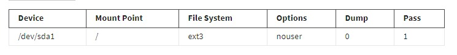
To add the new file system partition:
In the first column, add the new file system device name. In this example, the device name would be /dev/sdb1.
In the second column, indicate the mount point for the new partition. This should be a directory that would be easy to find and identify for users. For the sake of simplicity, the mount point for this example is /mnt/mystorage.
In the third column, enter the file system used on the new partition. In this example, the file system used for the new partition is ext4.
In the fourth column, enter any options you would like to use. The most common option is to select default.
In the fifth column, set the dump file to 0. Dump files are no longer configured in the fstab file, but the column still exists.
In the sixth column, the pass value should be 2 because it is not the root file system and it is a best practice to run a file system check on boot.
Your fstab table should now include the new partition:
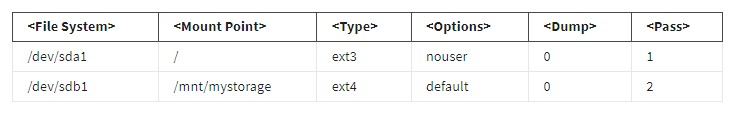
Reboot the computer and check the mystorage directory for the new partition.
Windows: Swap
One term you might have heard in relation to disks and partitions is swap space. Before we talk about swap space, let's talk about the concept of virtual memory. Virtual memory is how our OS provides the physical memory available on our computer, like RAM, to the applications that run on the computer. It does this by creating a mapping of virtual to physical addresses. This makes life easier for the program which needs to access memory, since it doesn't have to worry about what portions of memory other programs might be using. It also doesn't have to keep track of where the data it's using is located in RAM. Virtual memory also gives us the ability for our computer to use more memory than we physically have installed. To do this, it dedicates an area of the hard drive to use a storage space for blocks of data called pages. When a particular page of data isn't being used by an application, it gets evicted, which means it gets copied out of memory onto the hard drive. This is because accessing data on RAM is fast, much faster than the hard drive where space is at a premium. Because of this, the operating system wants to keep the most commonly access data pages in RAM.
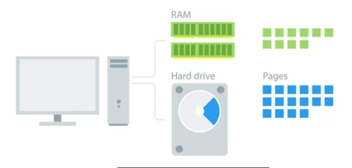
It then puts stuff that hasn't been used in awhile on the disk. This way, if a program needs a page that's not accessed a lot, the operating system can still get to it. But it has to read it from the comparatively slow hard drive and put it back into memory. Almost all operating systems use some virtual memory management scheme and paging mechanism. How does it work on Windows? The Windows OS uses a program called the memory manager to handle virtual memory. Its job is to take care of that mapping of virtual to physical memory for our programs and to manage paging. In Windows, pages saved to disk are stored in a special hidden file on the root partition of a volume called page file.sis. Windows automatically creates page files and it uses the memory manager to copy pages of memory to be read as needed. The operating system does a pretty good job of managing the page file automatically. Even so, Windows provides a way to modify the size, number, and location of paging files through control panel applet called system properties. You can get to the system properties applet by opening up the Control Panel.
Riproduci il video a partire da :2:22 e segui la trascrizione2:22
Go into the System and Security setting, and clicking on "System". Once in the system pane, you can open up the advanced system settings on the left-hand menu. Pick the Advanced tab, then click on the 'Settings" button in the performance section. One last time, click on the "Advanced" tab, and you should see a section called virtual memory, which displays the paging file size. If you click the "Change" button, you can override the defaults Windows provides. You can set the size of the paging file and add paging files to other drives in the computer. Microsoft has some guidelines for setting the paging file size that you can follow. For example, on 64-bit Windows 7, the minimum paging file size should be set to 1x, the amount of RAM in the machine. Unless you have a specific reason to change it, it's generally fine let Windows automatically manage the paging file size itself.
Supplemental Reading for Windows Paging
In this reading, you will learn about Windows paging files and their primary functions. You will also learn how to set the appropriate Windows paging file size. As an IT Support specialist, you may want to add or maintain page files to improve system performance. A paging file is an optional tool that uses hard drive space to supplement a system’s RAM capacity. The paging file offloads data from RAM that has not been used recently by the system. Paging files can also be used for system crash dumps or to extend the system commit charge when the computer is in peak usage. However, paging files may not be necessary in systems with a large amount of RAM.
Page file sizing
Determining the size needed for a paging file depends on each system’s unique needs and uses. Variables that have an impact on page file sizes include:
System crash dump requirements - A system crash dump is generated when a system crashes. A page file can be allocated to accept the Memory.dmp. Crash dumps have several size options that can be useful for various troubleshooting purposes. The page file needs to be large enough to accept the size of the selected crash dump. If the page file is not large enough, the system will not be able to generate the crash dump file. If the system is configured to manage page dumps, the system will automatically size the page files based on the crash dump settings. There are multiple crash dump options. Two common options include:
Small memory dump: This setting will save the minimum amount of info needed to troubleshoot a system crash. The paging file must have at least 2 MB of hard drive space allocated to it on the boot volume of the Windows system. It should also be configured to generate a new page file for each system crash to save a record of system problems. This history is stored in the Small Dump Directory which is located in the %SystemRoot%\Minidump file path.
To configure a small memory dump file, run the following command using the cmd utility:
Wmic recoveros set DebugInfoType = 3
Alternatively, this option can be configured in the registry:
Set the CrashDumpEnabled DWORD value to 3
To set a folder as the Small Dump Directory, use the following command line:
Wmic recoveros set MiniDumpDirectory =
Alternatively, the directory option can be set in the registry:
Set the MinidumpDir Expandable String Value to
Complete memory dump: The option records the contents of system memory when the computer stops unexpectedly. This option isn't available on computers that have 2 or more GB of RAM. If you select this option, you must have a paging file on the boot volume that is sufficient to hold all the physical RAM plus 1 MB. The file is stored as specified in %SystemRoot%\Memory.dmp by default. The extra megabyte is required for a complete memory dump file because Windows writes a header in addition to dumping the memory contents. The header contains a crash dump signature and specifies the values of some kernel variables. The header information doesn't require a full megabyte of space, but Windows sizes your paging file in increments of megabytes.
To configure a complete memory dump file, run the following command using the cmd utility:
wmic recoveros set DebugInfoType = 1
Alternatively, a complete memory dump file can be configured in the registry:
Set the CrashDumpEnabled DWORD value to 1
To set a memory dump file, use the following command line:
wmic recoveros set DebugFilePath =
Alternatively, the memory dump file can be set in the registry:
Set the DumpFile Expandable String Value to
To indicate that the system should not overwrite kernel memory dumps or other complete memory dumps, which may be valuable for troubleshooting system problems, use the command:
wmic recoveros set OverwriteExistingDebugFile = 0
Alternatively, the overwrite setting can be turned off in the registry:
Set the Overwrite DWORD value to 0
Peak usage or expected peak usage of the system commit charge - The system commit limit is the total of RAM plus the amount of disk space reserved for paging files. The system commit charge must be equal to or less than the system commit limit. If a page file is not in place, then the system commit limit is less than the system’s RAM amount. The purpose of these measurements is to prevent the system from overpromising available memory. If this system commit limit is exceeded, Windows or the applications in use may stop functioning properly. So, it is a best practice to assess the amount of disk storage allocated to the page files periodically to ensure there is sufficient space for what the system needs during peak usage. It is fine to reserve 128 GB or more for the page files, if there is sufficient space on the hard drive to dedicate a reserve of this size. However, it might be a waste of available storage space if the system only needs a small fraction of the reserved disk space. If disk space is low, then consider adding more RAM, more hard drive storage, or offload non-system files to network or cloud storage.
Space needed to offload data from RAM - Page files can serve to store modified pages that are not currently in use. This keeps the information easily accessible in case it is needed again by the system, without overburdening RAM storage. The modified pages to be stored on the hard drive are recorded in the \Memory\Modified Page List Bytes directory. If the page file is not large enough, some of the pages added to the Modified Page List Bytes might not be written to the page file. If this happens, the page file either needs to be expanded or additional page filles should be added to the system. To assess if the page file is too small, the following conditions must be true:
\Memory\Available MBytes indicates more physical memory is needed.
A significant amount of memory exists in the modified page list.
\Paging Files(*)% Usage (existing page files) are almost full.
Linux: Swap
The dedicated area of the hard drive used for virtual memory is known as swap space. We can create swap space by using the new disk partitioning tools that we learned. A good guideline to use to determine how much swap space you need is to follow the recommended partitioning scheme in the next supplemental reading. In our case, since we just have a USB drive which doesn't need swap, we're just going to partition the rest of it as swap to show you how this works. In practice, you would create swap partitions for your main storage devices like hard drives and SSDs. Okay, let's mix swap space. First go back into the parted tool and select /dev/sdb where USB is.
Riproduci il video a partire da ::46 e segui la trascrizione0:46
We're going to partition it again, this time to make a swap partition and then we'll format the linux-swap file system on it. So make part primary linux-swap 5Gib 100%.
Riproduci il video a partire da :1:5 e segui la trascrizione1:05
You'll notice that the endpoint of the drive says 100%. Which indicates that we should use the rest of the free space on our drive. We're not done yet. Swap isn't actually a file system. So this command won't be enough. I know I'm sorry, I just lied to you like five seconds ago. If you think about it, it makes a lot of sense, since pages go into swap and not file data. Anyways to complete this process, we need to specify that we want to make it swap space with the make swap command. Let's quit out of parted and run this command on our new swap partition. So sudo make swap dev and our new swap partition is on dev/sdb2. Finally, there's one more commander run to enable swap on the device swapon. So sudo swapon dev/sdb2.
Riproduci il video a partire da :1:56 e segui la trascrizione1:56
If we want to automatically mount swap space every time the computer boots up, just add a swap entry to the / etc/fstab file like we did earlier.
Windows: Files
Now that we've gotten a few practical things out of the way with disk partitioning and file system creation. We can talk about concepts for a bit. Remember when we talked about how our OS handles files. It actually manages the actual file data, file metadata, and file systems. We've already covered file systems. In this video, we're going to cover the file data and file metadata. When we talk about data, we're referring to the actual contents of the file, like a text document that we save to our hard drives. The file metadata includes everything else like the owner of the file, permissions, size of the file, its location on the hard drive, and so on. Remember that the NTFS file system is the native file system format of windows. So how exactly does NTFS store and represent the files we're working with on our operating system. NTF uses something called the master file table or MFT to keep everything straight. Every file on a volume has at least one entry in the MFT, including the MFT itself. Usually, there's a one to one correspondence between files and MFT records. But if a file has a whole lot of attributes, there might be more than one record to represent it. In this context, attributes are things like the name of a file, its creation timestamp. Whether or not a file is read only, whether or not a file is compressed, the location of the data that the file contains, and many other pieces of information.
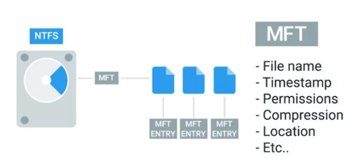
When you create files on an NTFS file system, entries get added to the MFT. When files get deleted, their entries in the MFT are marked as free so they can get reused.
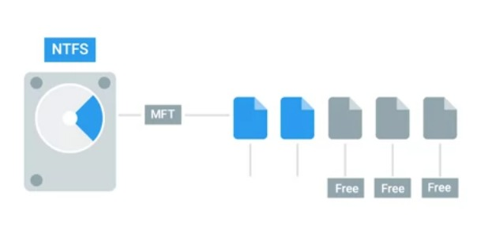
One important part of a files entry in the MFT is an identifier called the file record number. This is the index of the files entry in the MFT. A special type of file we should mention in Windows is called a shortcut. A shortcut is just another file and another entry in the MFT, but it has a reference to some destination so that when you open it up you can get taken to that destination. You can create a shortcut by right clicking on the target file and selecting the create shortcut option, and there it is. Besides creating shortcuts as ways to access other files. NTFS provides two other ways using hard and symbolic links. This might get a little weird but stay with me.
Riproduci il video a partire da :2:25 e segui la trascrizione2:25
Symbolic links are kind of like shortcuts, but at the file system level. When you create a symbolic link, you create an entry in the MFT that points to the name of another entry or another file. This might seem like just another way to make a shortcut. But symbolic links have a key difference. The operating system treats them like substitutes for the file they linked to in almost every meaningful way. This is the part that sounds strange. So let's demonstrate. Let's create a directory on the desktop called links. Inside of it, we'll create a text file called file 1. And inside of that, let's add the word Hello.
Riproduci il video a partire da :3:16 e segui la trascrizione3:16
And then let's make a shortcut that points this file called file 1 shortcut.
Riproduci il video a partire da :3:27 e segui la trascrizione3:27
Next, let's open up a command prompt and navigate to this directory. Let's try to open up file 1 through its shortcut with notepad. What do you think will happen? If you expect a notepad to display Hello, then you'd be disappointed. Instead, notepads opened up the shortcut file which has some text in there that isn't readable by us. Instead of a shortcut, let's create a symbolic link. You can create symbolic links with the make link program from the command prompt. Let's make one called file 1 symlink with the following command and then open it up a notepad and see what happens. All right, let's open it up a notepad.
Riproduci il video a partire da :4:22 e segui la trascrizione4:22
Aha, this is what we mean when we say the operating system treats a symbolic link just like the original file. There's another type of link worth mentioning called a hard link. When you create a hard link in NTFS, an entry is added to the MFT that points to the linked file record number, not the name of the file. This means the file name of the target can change and the hard link will still point to it. You can create hard links in a way that's similar to symbolic links, but with the /H option.
Riproduci il video a partire da :4:55 e segui la trascrizione4:55
So make link /H file_1_hardlink file_1.
Riproduci il video a partire da :5:6 e segui la trascrizione5:06
Since a hard link points out the file record number and not the file name, you can change the name of the original file and the link will still work.
Linux: Files
Metadata and files are organized into a structure called an Inode. Inodes are similar to the Windows NTFSM FT records. We store Inodes in Inodes table and they help us manage the files on our file system. The Inode itself doesn't actually store file data or the file name, but it does store everything else about a file. Shortcuts in Linux are referred to as soft links or sim links. They work in a similar way symbolic links work in Windows, in that they just point to another file.
Riproduci il video a partire da ::30 e segui la trascrizione0:30
Soft links allow us to link to another file using a file name. They're great for creating shortcuts to other files.
Riproduci il video a partire da ::36 e segui la trascrizione0:36
The other type of link found in Linux are hard links. Similar to Windows, hard links don't point to a file and Linux they link to an Inode which is stored in an Inode table on the file system. Essentially, when you're creating a hard link, you're pointing to a physical location on disk or more specifically on the file system.
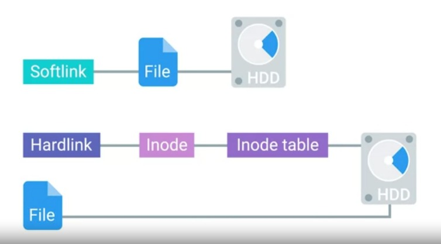
But if you deleted a file of a hard link, all other hard links would still work. Let's actually see where hard links are referenced. If we did an ls -l on this file, important file.
Riproduci il video a partire da :1:11 e segui la trascrizione1:11
You'll notice the third field in the details. This field actually indicates the amount of hard links the file has. When the hard link count of a file reaches zero, then the file is completely removed from the computer. To create a soft link, we can run the command ln with the flag, -s for soft link. So ln -s \important_file important_file_softlink.
Riproduci il video a partire da :1:41 e segui la trascrizione1:41
To create a hard link, we can run the ln command without the dash s to specify a hard link. So ln important_file important_file_hard link.
Riproduci il video a partire da :1:56 e segui la trascrizione1:56
Now, if we check ls- l important_file, we'll see that the hard link count was increased by one. Hard links are great, if you need to have the same file stored in different places, but you don't want to take up any additional space on the volume. This is because all the hard links point to the same space on the volume. You could use soft links to do the same thing. But what if you moved one file, broke the soft link and forgot about all the other places that you used it. Those would be broken too, it may take some time to clean up. You may not see a use for making your own soft links or hard links right now, but they're used all throughout your system. So you should be aware how they work.
Windows: Disk Usage
Now that we've taken a good hard look at files in different file systems. Let's turn our attention to how we can monitor the number and size of those files and Windows. You've seen how there are loads of third-party programs out there to partition and format disks on Windows. Well, there are also lots of applications you can download that can check and visualize disk usage on a Windows machine. But you can use the disk management console we examined in an earlier lesson to get a sense of your disk capacity usage. To check disk usage, you can open up the computer management utility then head to the disk management console. From there, you right-click on the partition you're interested in and select properties.
Riproduci il video a partire da ::44 e segui la trascrizione0:44
This will bring up the general tab where you can see the used and free space on the drive. In addition to using this graphical user interface to check the disk usage, Windows provides a command line utility called disk usage as part of its sys internals tool offering that DU utility can print out the usage of a given disk and tell you how many files it has. It can be useful for creating scripts which might need text-based output instead of visual reports, like the pie chart and disk management. You can find a link to the DU tool in the next supplemental reading. On the same tab in the disk management console, you might notice a button that says disk cleanup. If you press this button, Windows will launch a program called clean manager.exe which will do a little housekeeping on your hard drive to try and free up some space. This housekeeping includes things like deleting temporary files, compressing old and rarely use files, cleaning up logs, and emptying the recycle bin. Another task related to disk health is called defragmentation. The idea behind disk defragmentation is to take all the files stored on a given disk and reorganize them into neighboring locations. Having files ordered like this will make life easier for rotating hard drive disks that use an actuator arm to write to and read from a spinning disk. The head of the actuator arm will actually travel less to read the data it needs. I should call out that this is less of a benefit for solid-state drives since there's no physical read-write head that needs to move around a spinning disk. For these kinds of drives, the operating system can use a process called trim to reclaim unused portions of the solid-state disk. Defragmentation in Windows is handled as a scheduled task. Every so often the operating system will defragment the drive automatically and you don't need to worry about it. But you can manually defragment drive in Windows if you want to. To kick off a manual defragmentation, open up the disk defragmenter tool bundled with the OS. Type disk defragmenter. When it launches, you'll be given a list of disks which can be defragmented along with buttons to analyze the potential gains from running a defrag or defragmentation, and to run the defrag itself.
Linux: Disk Usage
In the last lesson we saw how to view the disk utilization on your computer and windows and Linux. We can do this using the du-h command.
Riproduci il video a partire da ::16 e segui la trascrizione0:16
The du or disk usage command shows us the disk usage of a specific directory. If you don't specify a directory, it'll default to your current one. The dash h flag gives you the data measurements in human readable form. You should use the du Command if you want to know how much disk space is being used by files in a directory.
Riproduci il video a partire da ::37 e segui la trascrizione0:37
Another command you can use if you want to know how much free space you have on your machine is the df command or disk free. This shows you the free space available in your entire machine. The dash h flag gives you the data measurements in human readable form. You should use the df command if you want to know how much free space you have in your entire system. You might have noticed that we didn't really touch on file system in defragmentation for Linux. Linux generally does a good job of avoiding fragmentation more than windows. In common IT scenarios, you might find yourself running low on disk space. It's up to you to investigate what files and folders are taking up space. And if you need to remove these files, as always, make sure to be super careful when removing files
Windows: Filesystem Repair
In an earlier lesson, we talked about the dangers of unplugging a USB device without ejecting or unmounting it from the computer. You might have seen error messages like this yourself when the system alerts that you must safely eject this flash drive. Why do we need to do this? When we copy over files to a flash drive and we see that the file copied successfully, why can't we just unplug the drive without mounting or hitting the eject button in the OS? Turns out it may not be finished copying over that data. It's not just yelling at us for fun, when we read or write something to a drive, we actually put it into a buffer or cache first. A data buffer is a region of RAM that's used to temporarily store data while it's being moved around. So when you copy something from your OS to your USB drive, it first gets copied to a data buffer because RAM operates faster than hard drives. So if you don't properly unmount a file system and give your buffer enough time to finish moving data, you run the risk of data corruption. Data corruption could happen for lots of reasons other than unsafely removing a disk drive. Let's say you're working on your computer and the power to the building went out, causing your computer to suddenly shut off. This kind of crash also causes data corruption. System failures or software bugs can cause data corruption as well. The NTFS file system has some advanced features built into it that can help minimize the danger of corruption. As well as try to recover when the file system does get damage. One of these features through a process called journaling, logs changes made to a file metadata into a log file called the NTFS Log. By logging these changes NTFS creates a history of the actions it's taken. This means it can look at the log to see what the current state of the file system should be. If a crash or bug does cause corruption, the file system can initiate recovery process that will use that log to make sure the system is in a consistent state. In addition to journaling NTFS and Windows implement something called self-healing. As you might guess from the name the self-healing mechanism makes changes to minor problems and corruption on the disk automatically in the background. It does this while Windows is running so you don't need to perform a reboot. If you want to check the status of the self-healing process on your computer, you can open up an administrative command prompt and use the fsutil tool like this. Fsutil repair query, and I want to query in my C drive. Finally when things get really bad and there's some serious or catastrophic disk corruption like bad disk sectors, disk failures and more. You can turn to the NTFS check disk utility. The recovery features NTFS has built into it mean that you don't usually need to run check disk but is available in emergencies. To run check disk manually, you can open up an administrator command prompt and type check disk onto the command line. By default check disk will run in read only mode, so I'll give you a report on the health of the disk but won't make any modifications or repairs to it. You can tell check disk to fix any problems it finds with the /F flag. You can also specify the drive you want to check, like this. Write checkdisk/F. I'm going to check my thumb drive which is on the D. A lot of times you won't need to run check disk manually though. If the operating system detects that some data has been corrupted or that the disk has a bad sector, it'll set a bit in a metadata file on the volume that indicates there's corruption. When the system boots, the check disk utility will check this bit. If it's set, it will execute and try to repair the corruption by reconstructing the broken bits of the file system from the NTFS Log. As you can see the Windows NTFS file system has some pretty robust measures and features in place to recover and prevent corruption from breaking your partitions. Next, let's have a look at how you can perform file system repairs in Linux.
Required
en
Linux: Filesystem Repair
To try and repair a file system manually in Linux, you can also use the fsck or file system check command. Just make sure the file system isn't mounted. I won't run this command, but this is what it would look like if you run fsck on a mounted partition, there's a high chance that it will damage the file system. File system repair isn't always a guaranteed fixed, but it can help in most cases. Just be nice to your hardware and it'll be nice to you, in most cases. Another thing to call out is that on some versions of Linux, fsck actually runs on your computer when you boot it to check for any issues and attempt to auto repair the file system. You can learn more about how to enable this and about some advanced features that you can use with fsck in the next supplementary reading. We've covered a lot of essential disk management and file system concepts in this lesson. You learned how to partition a disk, how to format a file system, and how to mount a file system. We even talked about how you could repair a corrupt file system. In an IT support role, knowing how to work with disks is essential. Your customers store their precious data on these disks and they don't want to lose those photos of their children, important presentations, their collection of music, or whatever it may be. Knowing how to work with disks and the data on them is a vital part of an IT role.
Module 5
Life of Process
Programs vs Processes Revisited
In an earlier lesson, we learned that programs are the applications that we can run, like the Chrome web browser. Processes are programs that are running. We can have lots of processes running for the same program. Like how we can have many Chrome windows open at once, or lots of movies playing using one program. When we launch a process, we're executing a program and remember, a program is just software. To calculate the information that our software contains, we need to give it resources so that it can be run. When processes are run, they take up hardware resources like CPU and RAM.
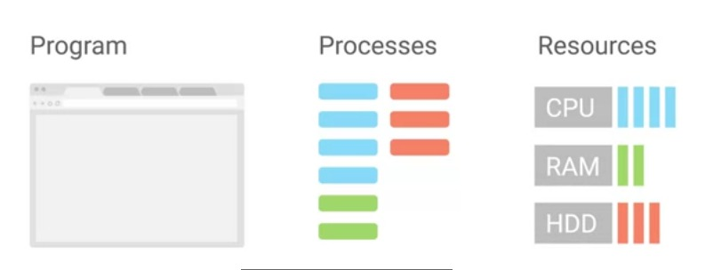
Luckily, today's computers are powerful enough to handle the processes that we use in our day-to-day activities, like browsing the web, watching movies, etc. But sometimes this isn't enough. Sometimes a process is taking more resources than it's supposed to. Sometimes processes are unresponsive and frees up our system, making our entire computer unresponsive. Well, we're going to talk about why this happens and how we can fix it in the upcoming lessons. But before we can talk about managing processes, we have to understand how they work. When you open up an application like a word processor, you're launching a process. That process is given something called a process ID to uniquely identify it from other processes. Our computer sees that the process needs hardware resources to run, so our kernel makes decisions to figure out what resources to give it. Then in the blink of an eye, our computer starts up a word processor and we're ready to start working. This happens for every process you launch yourself and for every process you don't even know is running. Besides the visible processes that we start, like our music player or word processor, there are also not so visible processes running. These are known as background processes, sometimes referred to as daemon processes. Background processes are processes that run in the background. We don't really see them and we don't interact with them, but our system needs them to function. They include processes like scheduling resources, logging, managing networks, and more. When we take a look at all the processes running on our system, you'll see what I'm talking about.
Windows: Process Creation and Termination
The way that processes are created and stopped differs based on the operating system you use. First, let's have a look at how Windows does things. When Windows boots up or starts, the first non kernel and user mode that starts as the Session Manager Subsystem or smss.exe. The smss.exe process is in charge of setting some stuff up for the OS to work. It then kicks off the login process called windlogon.exe appropriately enough. Along with the client server runtime subsystem called csrss.exe, which handles running the Windows GUI and command-line console. We'll talk about a process called Init in the next lesson, which Linux uses as the first process. You might be tempted to think of smss.exe as the Windows equivalent of Init. Don't fall into that trap though. When it comes to process creation mechanisms, they're all pretty different. In Windows, each new process that's created needs a parent to tell the operating system that a new process needs to be made. The child process inherits some things from its parent, like variables and settings, which we can collectively refer to as an environment. This gives the child process a pretty good start in life. But after the initial creation step, the child is pretty much on its own. Unlike in Linux, Windows processes can operate independently of their parents. Let's take a look at how this works by creating our own. First, let's launch the PowerShell process to give us a Windows command prompt. From there, we can type in notepad.exe to create a new process for the Notepad program. So far so good, the parent process is PowerShell and the child is the Notepad application. What happens if we kill the parent process though, by clicking on the "X" button. Notice that Notepad keeps on running happily, even though its parent has been terminated. Those children are just in their own world. Clicking the "X" is just one way to stop a process from running in Windows. But as you might expect, there are other ways you can stop processes. You can use a command prompt command by calling on the taskkill utility. Taskkill, confined, and halt or process in a few ways. One of the more common ways is to use an identification number. Know that's the process ID or PID to tell taskkill which process you'd like stopped. One way to do this is to kill Notepad again by specifying the PID using taskkill/PID and then the PID number.
Riproduci il video a partire da :2:44 e segui la trascrizione2:44
This is the process ID of Notepad. Let's access. This will send a termination signal to the process identified by the PID, which happens to be Notepad in our case.
Linux: Process Creation and Termination
In Linux, processes have a parent child relationship. This means that every process that you launch comes from another process. Let's check out this command.
Riproduci il video a partire da ::13 e segui la trascrizione0:13
The less command would be the parent process to our grep process. If all processes come from another process, there must be an initial process that started this all, right? Yes, there is. When you start up your computer, the kernel creates a process called init, which has a PID of one. init starts up other processes that we need to get our computer up and running. There are more nuances to process creation than this, but I wanted to introduce parent process concept since you'll see them when we start managing processes. What about what happens when we're done with our processes? When your processes complete their tasks, they'll generally terminate automatically. Once a process terminates, it will release all the resources it was using back to the kernel so that they could be used for another process.
Managing Processes
Windows: Reading Process Information
It might feel like we're starting to get into the weeds here. So let's take a step back and think about what processes really are and what they represent in the context of an operating system. You can think of processes as programs and motion. Consider all the code for your internet browser. It sits there on your hard drive quietly waiting for its time to shine. Once you start it up, the operating system takes that resting code, then turns it into a running, responding, working application. In other words, it becomes a process.
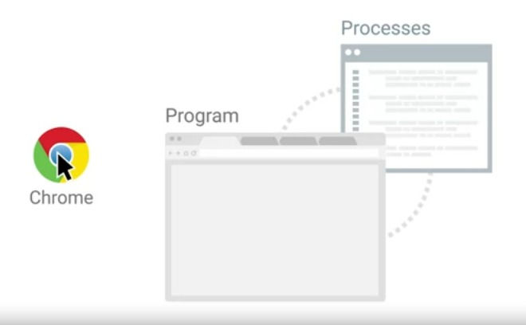
You interact with launch and halt processes all the time on computers. Although the OS usually takes care of all that behind the scenes. By learning about processes, you're taking a peek behind the curtain at how operating systems really work. This knowledge is both fascinating and powerful, especially when applied by a Savvy IT support specialist to solve problems. Keep all that in mind as we take a look at how you can pull back the curtain even further. Next, we'll learn about the different ways you can investigate which processes are running on a Windows computer and more methods of interacting with them. On the Windows operating system, the task manager or taskmgr.exe is one method of obtaining process information. You can open it with the Ctrl+Shift+Esc key combination or by locating it using the start menu.
Riproduci il video a partire da :1:30 e segui la trascrizione1:30
If you click on the processes tab, you should see a list of the processes that the current user is running along with a few of the system level processes that the user can see. Information about each process is broken out into columns in the task manager. The task manager tells you what application or image the process is running along with the user who launched it and the CPU or memory resources it's using. To kill a process, you can select any of the process rows and click the end task button in the lower right corner. We can demonstrate this by launching another notepad.exe process from the command line, then switching over to the task manager, selecting the notepad exe process and ending it already have notepad open. So I'm just going to click on it, click End task.
Riproduci il video a partire da :2:20 e segui la trascrizione2:20
In an earlier lesson, we talked about starting and ending Windows processes. Remember that we used the task kill command to stop a process by its identification number or PID. So how do we get that PID number? While in task Manager you can click on the details menu option. And here you can see a whole bunch of other information you can get the task manager to display including the PID.
Riproduci il video a partire da :2:47 e segui la trascrizione2:47
You can also see this information from both a command prompt and PowerShell. From the command prompt, you can use utility called task list to show all the running processes.
Riproduci il video a partire da :3:1 e segui la trascrizione3:01
From a PowerShell prompt, you can use a command list called get dash process to do the same.
Riproduci il video a partire da :3:14 e segui la trascrizione3:14
There are lots of ways you can get process information from the Windows operating system.
Linux: Reading Process Information
Now let's talk about how to view the processes running on our system and Linux. We'll be using the ps command. Let's just go ahead and run that command with the -x flag and see what happens. This shows you a snapshot of the current processes you have running on your system. The ps output can be overwhelming to look at it first, but don't worry, we'll walk through how to read this output. Let's start from right to left here. P-I-D or PID is the process ID. Remember, processes get a unique ID when they are launched. TTY. This is the terminal associated with the process. We'll talk about this field but you can read more about it in the man pages linked right after this video. STAT. This is the process status. If you see an R here, it means the process is running or tweeting to run. Another common status you'll see is T for stopped, meaning a process that's been suspended. Another one you might see is an S for interruptible sleep. Meaning the task is waiting for an event to complete before it resumes. You can read more about the other types of process statuses in the main pages. Time. This is the total CPU time that the process has taken up. Lastly, command. This is the name of the command we're running. Now we're going to enter hard mode here. Run this command, ps-ef. The e flag is used to get all processes, even the ones run by other users. The -f flag is for full, which shows you full details about a process. Look at that. We have more processes and even more process details. Let's break this down.
Riproduci il video a partire da :1:41 e segui la trascrizione1:41
UID is the user ID of the person who launched the process. PID is the process ID, and PPID is the parent ID that we discussed in an earlier lesson which launched the process. C is the number of children processes that this process has. S time is the start time of the process. TTY is the terminal associated with the process. Time is the total CPU time that the process has taken up. CMD, or Command, is the name of the command that we're running. What if we wanted to search through this output? It's super messy right now. Can you think of a way we can see if a process is running? That's right. But the grep command, I told you we're going to use it all the time.
Riproduci il video a partire da :2:29 e segui la trascrizione2:29
This will give us a list of processes that have the name Chrome in them. There's another way to view process information. Remember everything in Linux is a file, even processes. To view the files that correspond to processes, we can look into the slash proc directory.
Riproduci il video a partire da :2:47 e segui la trascrizione2:47
There are a lot of directories here for every process that's running. If you look inside one of the subdirectories, it'll give you even more information about the process. Let's look at a sample Process Status File for PID 1805. This tells us even more information about a process state than what we saw in ps. While the slash proc directory is interesting to look at, it's not very practical when we need to troubleshoot issues with processes. For now, stick with the ps-ef command to look at process information. As you can see, we can learn a lot about the processes running on our machine with just a few keystrokes.
Windows: Signals
Imagine you're starting up a video game that's taking a while to render its graphics. You decide that you don't want to play anymore, which leaves you with a few options. You can wait for it to finish loading and then quit the game from the menu, or you can interrupt the process altogether, telling it to quit at the system level. This is just one example of a time you might find yourself wanting to close a process before it fully completes. To tell a process to quit at the system level, we use something called a signal. A signal is a way to tell a process that something's just happened. You can generate a signal with special characters on your keyboard, and through other processes and software. One of the most common signals you'll come across is called SIGINT, which stands for signal interrupt. You can send a signal to a running process with Control C key combination. Let's say you start at the disk part tool we looked at in our discussion on partition formatting. Is going to open up a command prompt and then launch diskpart.
Riproduci il video a partire da :1:3 e segui la trascrizione1:03
If you decide you don't want to actually format any disks, you can hold down the Control key and press "C" at the same time to send the SIGINT signal to the diskpart process.
Riproduci il video a partire da :1:17 e segui la trascrizione1:17
You'll see that the window that the disk part program was running in closes and the process terminates. There are a few other windows signals that processes can send and receive. But unlike in Linux, there isn't an easy way for an end-user to issue arbitrary signal commands.
Linux: Signals
In Linux, there are lots of signals that we can send processes. These signals are labeled with names starting with sig. Remember the sig.int signal we talked about before. You can use sig.int to interrupt a process and the default action of the signal is to terminate the process that's interrupting. This is true for Linux too. You can send a sig.int signal through the keyboard combination control C. Let's see this in action. I'm going to do the same thing as we did in Windows and start a program like sudo parted.
Riproduci il video a partire da ::34 e segui la trascrizione0:34
We can see that we're in the parted tool now. Let's interrupt this tool and say we want it to abort the process with a control C keyboard combination.
Riproduci il video a partire da ::44 e segui la trascrizione0:44
Now we can see that the process closed and we're back in our shell. We were able to interrupt our process midway and terminate it. Success.
Windows: Managing Processes
In earlier lessons, we talked about processes. We saw some examples of how to manipulate them with signals. Let's expand on that idea of process management by looking at some other things you can do to manipulate processes. In windows, we've looked at programs like Task Manager, the PowerShell commandlet get dash process, and the task list utility to name a few. We've also seen how to send a running processes signal through control C. But there's another process management tool we haven't talked about, which lets you do things like restart or even pause processes. This tool is called Process Explorer. Process Explorer is a utility Microsoft created to let IT support specialist, systems administrators and other users look at running processes. Although it doesn't come built into the Windows operating system, you can download it from the Microsoft website, which I've linked to in the supplemental reading right after this video. Once you've downloaded Process Explorer and started it up, you'll be presented with a view of the currently active processes in the top window pane. You'll also see a list of the files a selective process is using in the bottom window pane. This can be super handy if you need to figure out which processes use a certain file or if you want to get insight into exactly what a process is doing and how it works. You can search for a process easily in Process Explorer by either pressing Control F or clicking on the little binocular button. Let's go ahead and do a search for the notepad process we opened up earlier.
Riproduci il video a partire da :1:35 e segui la trascrizione1:35
You should see C\Windows\System32\notepad.exe. Listed as one of the search results. If you see something that says notepad.exe.mui Don't worry, MUI stands for multilingual user interface. It contains a package of features to support different languages. Anyways, once you've located the notepad.exe process, notice how it's nested under the command.exe process in the UI. This indicates that it's a child process of command.exe. If you right-click on the notepad.process, you'll be given a list of different options that you can use to manage the process. Check out the ones that say Q process, Q process tree, restart and suspend. Q process does what you might expect. Say goodbye to Notepad. Q process tree does a little bit more. It'll kill the process and all of its descendants. Any child process started from it will be stopped. Q process tree takes no prisoners. Restart is another interesting option. You might be able to guess what it does just by its name. It'll stop then start the process again. Let's do that with the notepad.exe process. We started from command.exe.
Riproduci il video a partire da :3:1 e segui la trascrizione3:01
Interesting, after the restart, notepad.exe doesn't appear as a child of command.exe anymore. What gives? Well, if you search for notepad.exe again, we can see it's been restarted as a child of the procexp.exe process.
Riproduci il video a partire da :3:21 e segui la trascrizione3:21
This is the process name for Process Explorer. This makes sense since Process Explorer was the process in charge of starting it again after we terminated it. But what about the suspend option? Instead of killing a process, you can use this option to suspend it and potentially continue it at a later time. If we right-click suspend the process, we'll see that in the CPU column, the Process Explorer output, the word suspended appears. While a process is suspended, it doesn't consume the resources it did when it was active. We can kick it off again by right-clicking and selecting the resume option. Process Explorer can do a lot and we'll take a look at some of the monitoring information it can give us in an upcoming lesson. We won't get into the details of all its features though. If you're curious, you can check out the documentation on Microsoft's website. We put a link to it for you in the supplementary reading.
Linux: Managing Processes
Let's talk about how to use signals to manage processes in Linux. First up, terminating processes. We can terminate a process using the kill command. It might sound a bit morbid, but that's just how it is in the dog eat dog world of terminating processes. The kill command without any flags sends a termination signal or SIGTERM. This will kill the process but it'll give it some time to clean up the resources it was using. If you don't give the process a chance to clean up some of the files it was working with, it could cause file corruption. I'm going to keep a process window open so you can see how our processes get affected as we run these commands.
Riproduci il video a partire da ::42 e segui la trascrizione0:42
So to terminate a process or use the kill command along with the pit of the process we want to terminate.
Riproduci il video a partire da ::52 e segui la trascrizione0:52
Let's just go ahead and kill this Firefox process.
Riproduci il video a partire da ::56 e segui la trascrizione0:56
And if we check the process window, we can see that the process is no longer running. The other signal that you might see pop up every now and then is the SIGKILL signal. This will kill your process with a lot of metaphorical fire. Using a SIG term is like telling your process, hey, there process, I don't really need you to complete right now, so could you just stop what you're doing? And using SIGKILL is basically telling your process, okay, it's time to die.
Riproduci il video a partire da :1:22 e segui la trascrizione1:22
The signal does its very best to make sure your process absolutely gets terminated and will kill it without giving it time to clean up. To send a SIGKILL signal, you can add a flag to the kill command, -KILL for SIGKILL.
Riproduci il video a partire da :1:36 e segui la trascrizione1:36
So let's open up Firefox one more time.
Riproduci il video a partire da :1:48 e segui la trascrizione1:48
So kill -KILL 10392.
Riproduci il video a partire da :2:1 e segui la trascrizione2:01
And now you can see that Firefox has been killed. These are the two most common ways to terminate a process, but it's important to call out that using kill -KILL is a last resort to terminating a process. Since it doesn't do any cleanup, you could end up doing more harm to your files than good.
Riproduci il video a partire da :2:19 e segui la trascrizione2:19
Let's say you had a process running that you didn't want to terminate, but maybe you just want to put it on pause. You can do this by sending the SIGSTP signal for terminal stop. Which will put your process in a suspended state. To send this, you can use the kill command with the flag -TSTP. I'm going to run ps -x so you can see the status of the processes. We're just going to put this process in a suspended state, so kill -TSTP 10754.
Riproduci il video a partire da :2:59 e segui la trascrizione2:59
Now you can see the process 10754 is now in a suspended state.
Riproduci il video a partire da :3:7 e segui la trascrizione3:07
You can also send the SIGTSTP signal using the keyboard combination control -Z. To resume the execution of the process, you can use the SIGCONT for continued signal. Let's go ahead look at the process table again. I'm going to go ahead and use that command on this process.
Riproduci il video a partire da :3:31 e segui la trascrizione3:31
Now, if I look at the process again, you'll see that the process status turn from a T to an S. SIGTERM SIGKILL and SIGTSTP and sick T stop are some of the most common signals you'll see when you're working with processes in Linux. Now that you have a grasp on these signals, let's use them to help us utilize hardware resources better.
Mobile App Management
In mobile operating systems like iOS and Android, you won't be able to see a list of running processes. Instead, you'll manage mobile apps that are running on the OS. When a mobile app is running, there will be one or more processes associated with them but those details will be managed by the OS. Let's take a look at how you can manage your running mobile apps and understand how they're using your mobile devices resources. As an IT support specialist, you may help end-users to troubleshoot slow mobile devices and manage their mobile apps. We'll show you examples of what you might see but you may have to refer to your devices documentation if it doesn't look like these examples. First, let's check what apps are currently running on a device that by opening the app switcher in iOS. From the app switcher, I can see a list of apps running on this iPhone. Now let's do the same thing in Android. Greet each of the apps that I have launched is listed here. I can scroll through this list and switch to an app by tapping it. Now, I can use this calculator. The app that we're using is called the foreground app.All of these other apps are in the background. What do you think is happening with the background apps while I'm calculating how many bits in this Megabyte? The details can be a little complicated but the basic idea is this, as soon as it can and the OS will suspend background mobile apps. A suspended app is paused but not closed. The OS can occasionally wake of back-grounded app to allow to do some work, but we'll try to keep apps suspended as much as it can. Let's go back to the home screen. Now that I'm on the home screen, all the apps are back-grounded and there are no foreground apps. The calculator hasn't been closed. Each new app that you open will be kept back-grounded and usually suspended. This helps the device uses less battery power. Pro tip, as an IT support specialist is pretty helpful to learn which apps on your mobile device use the most battery power. If you have an app that the OS can't suspend because the app keeps working in the background or it's frozen then that can slow your device and use a battery. It support specialist often have to find these misbehaving apps and close or uninstall them. Let's try closing some of the apps. From the iOS app switcher, we can swipe up on any of the background apps. This will close the app. We can do the same thing in Android. In this version of Android, we can also swipe over here and hit clear all to close all of the apps at once. You can troubleshoot a misbehaving app by closing apps one at a time and seeing if there is one app in particular that slows the device down. Sometimes closing a misbehaving app will be all you need to do to make your device runs smoothly again. Start with the app that's currently being used and see if that helps. The apps which are shows you the apps in order from most recently used to least recently used, work backwards through time, trying one app at a time. Remember that this is not something that you should have to do very often to make your device work properly. With current versions of iOS and Android, you shouldn't ever have to close an app for performance reasons unless the app is misbehaving. You can actually use more battery to close and reopen an app than it would if you had just left it running. If you discover that you have an app that's routinely misbehaving, you can try resetting it completely by clearing as cash like we saw in an earlier video. If the device is still running sluggishly after closing all of the apps, the next thing to try is to simply restart the device. If restarting the device doesn't fix the performance issues or it's only a temporary fix, then we need to dig deeper. Let's check the battery use of the apps that we've installed. On the iPhone, I go to the Settings app, then battery, then battery health. Here, I can see how quickly the battery has been used since the last charge. I can also see which apps are using the most battery. Let's look at the same settings in Android. Again, I go to the Settings app, and from here I'll choose battery, then more, than battery usage. From here, I can see which apps are using the most battery. If I see an app that's using a lot of battery, than it might not be working as it should or maybe it's an app that uses a lot of batteries at work. You're new to learn which apps to end-user needs to know whether or not the battery use is unusual.
Processe Utilization
Windows: Resource Monitoring
You've been doing a great job and we're almost done with this module. Now that we spent all this time learning about processes, like how to read them and how to manage them, when are we ever going to use these new found skills? Well, pretty much all the time. But an IT support role, managing processes come in handy the most when processes become a little unruly. Our systems usually have some pretty good ways of monitoring processes and telling us which processes might be having issues. In Windows, one of the most common ways to quickly take a peek at how the system resources are doing is by using the resource monitoring tool. You can find it in a couple of places, but we'll launch it right from the start menu.
Riproduci il video a partire da ::47 e segui la trascrizione0:47
Once it opens, you'll see five tabs of information. One is an overview of all the resources on the system. Each other tab is dedicated to displaying information about a particular resource on the system. You'll also notice that Resource Monitor displays process information too, along with data about the resources that the process is consuming. You can get this performance information in a slightly less detailed presentation from Process Explorer. Just select the process you're interested in, right click and choose Properties. From there, pick the performance graph tab. You can see quick visualizations of the current CPU memory indicated by Private Bytes and disk activity indicated by IO, but how can we get this information from the command line? I'm glad you asked. There are several ways to get this information from the command line, but we'll focus on a PowerShell centrist one, our friend Get-Process. We know that if we run Get-Process without any options or flags, we get processed information for each running process on the system.
Riproduci il video a partire da :1:59 e segui la trascrizione1:59
If you check out the column headings at the start of the output, you'll see things like NPMK. Values in this column represent the amount of non paged memory the process is using. The K stands for the unit, kilobytes. You can see Microsoft's documentation for a full write up of each column in the next supplemental reading. This is useful, but it's a lot of information. It can be really helpful to filter down to just the data you're interested in. Let's say you wanted to just display the top three processes using the most CPU. You could write this command.
Riproduci il video a partire da :2:36 e segui la trascrizione2:36
Get-Process, pipe sort, CPU-descending pipe, select-first 3-property ID, ProcessName and CPU. Just like that, we get the top three CPU hogs on the system.
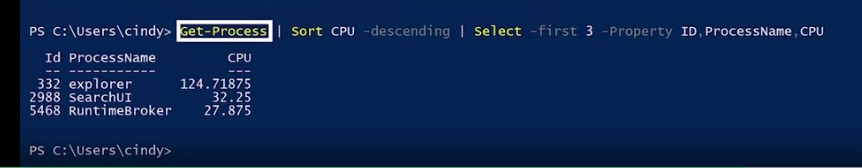
This command might be a little hard to understand. Let's go through it step by step. First, we call the Get-Process command line to obtain all that process information from the operating system. Then we use a pipe to connect the output of that command to the sort command. You might remember pipes from some Linux examples earlier. We sort the output of Get-Process by the CPU column, descending to put the biggest numbers first. Then we pipe that information to the select command. Using select, we picked the first three rows from the output of sort and pick only the property ID, name and CPU and out to display. Now that you've got some knowledge about both the command line and graphical tools Windows provides for investigating resource usage, let's have a look at Linux resource monitoring.
Required
en
Linux: Resource Monitoring
A useful command to find out what your system utilization looks like in real time is the top command. Top shows us the top processes that are using the most resources on our machine. We also get a quick snapshot of total tasks running or idle. CPU usage, memory usage and more. One of the most common places to check when using the top command are these fields here, percentage CPU and percentage MEM. This shows what CPU and memory usage a single task is taking up. To get out of the top command, just hit the q key for quit.
Riproduci il video a partire da ::38 e segui la trascrizione0:38
A common situation you might encounter is when a user's computer is running a little slow. It could be for lots of reasons, but one of the most common ones is the overuse of hardware resources. If you find that a top shows you a certain task is taking up a lot of memory or CPU, you should investigate what the process is doing. You might even terminate the process so that it gives back the resources it was using. Another useful tool for resource utilization is the uptime command. This command shows information about the current time, how long your system's been running, how many users are logged on, and what the load average of your machine is. From here, we can see the current time is 16:43 or 4:43. Our system has been up for 5 hours and 8 minutes, and we have one user logged in. The part that we want to talk about here is the system load average. This shows the average CPU load in one, 5, and 15 minute intervals. Load averages are an interesting metric to read. They become super useful when you need to see how your machine is doing over a certain period of time. We won't get into load averages here, but you should read about them in the next supplemental reading. Another command that you can use to help manage processes is the LSOF command. Let's say you have a USB drive connected to your machine. You're working with some of the files on the machine. Then when you go to eject the USB drive, you get an error saying device or resource busy. You've already checked that none of the files on the USB drive are in use or opened anywhere or so you think. Using the LSOF command, you don't have to wonder. It lists open files and what processes are using them.
Riproduci il video a partire da :2:25 e segui la trascrizione2:25
This command is great for tracking down those pesky processes that are holding open files. One last thing to call out about hardware utilization is that, you can monitor separately from processes. If you just wanted to see how your CPU or memory was doing, you could use various commands to check their output. This isn't immediately useful to see on a single machine, but maybe in the future if you manage a fleet of machines, you might want to think about monitoring the hardware utilization for all of your machines at once. We won't discuss how to do this, but you can read more about it in the supplemental reading. You've done some really great work in this module. You learned a lot about how to read process information and manage processes, something that will be vital for you to know when troubleshooting issues as an IT support specialist.
Supplemental reading for Resource Monitoring in Linux
Balancing resources keeps a computer system running smoothly. When processes are using too many resources, operating problems may occur. To avoid problems from the overuse of resources, you should monitor the usage of resources. Monitoring resources and adjusting the balance is important to keep computers running at their best. This reading will cover how to monitor resources in Linux using the load average metric and the common command.
Load in Linux
In Linux, a load is the set of processes that a central processing unit (CPU) is currently running or waiting to run. A load for a system that is idle with no processes running or waiting to run is classified as a 0. Every process running or waiting to run adds a value of 1 to the load. This means if you have 3 applications running and 2 on the waitlist, the load is 5. The higher the load, the more resources are being used, and the more the load should be monitored to keep the system running smoothly.
Load average in Linux
The load as a measurement doesn’t provide much information as it constantly changes as processes run. To account for this, an average is used to measure the load on the system. The load average is calculated by finding the load over a given period of time. Linux uses three decimal values to show the load over time instead of the percent other systems use. An easy way to check the load average is to run the uptime command in the terminal. The following image depicts the load values returned from the uptime command.
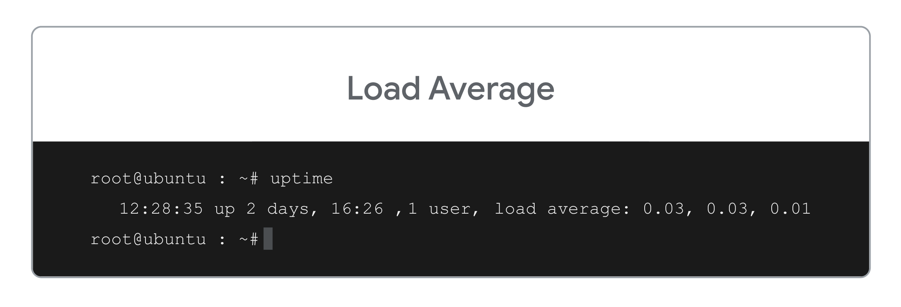
The command returns three load averages:
Average CPU load for last minute, which corresponds to 0.03. This is a very low value and means an average of 3% of the CPU was used over the last minute.
Average CPU load for last 5 minutes corresponds to the second value of 0.03. Again, this can be thought of as, on average, 3% of the CPU was being used over the past five minutes.
Average CPU load for last 15 minutes corresponds to 0.01, meaning on average, 1% of the CPU has been used over the last 15 minutes.
Top
Another way you can monitor the load average in Linux is to use the top (table of processes) command in the terminal. The result of running the top command is an in-depth view of the resources being used on your system.
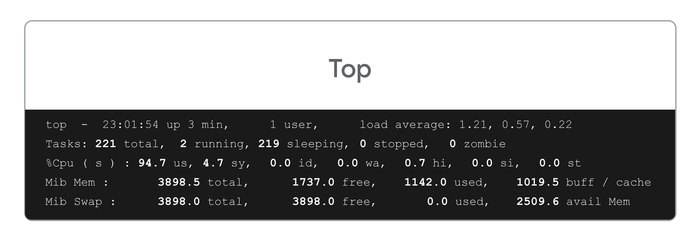
The first line displayed is the same as the load average output given using the uptime command It lists what percent of the CPU is running processes or has processes waiting. The second line shows the task output and describes the status of processes in the system. The five states in the task output represent:
Total shows the sum of the processes from any state.
Running shows the number of processes currently handling requests, executing normally, and having CPU access.
Sleeping shows the number of processes awaiting resources in their normal state.
Stopped shows the number of processes ending and releasing resources. The stopped processes send a termination message to the parent process. The process created by the kernel in Linux is known as the “Parent Process.” All the processes derived from the parent process are termed as “Child Processes.”
Zombie shows the number of processes waiting for its parent process to release resources. Zombie processes usually mean an application or service didn't exit gracefully. Having a few zombie processes is not a problem.
The top command gives detailed insight on usage for an IT individual to gauge the availability of resources on a system.
Key Takeaways
Computers need to balance the resources used with the resources that are free. Ensuring that the CPU is not overused means that a system will run with few issues.
The load in Linux is calculated by adding 1 for each process that is running or waiting to run.
Monitoring the average load of Linux allows an IT professional to identify which processes are running to determine what to end in order to balance the system. A balanced system runs with fewer problems than one that is using too high of a percent of resources.
The load average uses three time lengths to determine the use of the CPU: one minute, five minutes and fifteen minutes.
The top command can give detailed information about the resource usage of tasks that are running or waiting to run.
Module 6
Remote Access
Remote Connections on Windows
The ability to make remote connections is equally useful on Windows computers. PuTTY is a free open source software that you can use to make remote connections through several network protocols including SSH. You can visit the PuTTY website to download the entire software package with the Microsoft installer. Those are the MSI files we talked about earlier. Or you can choose a specific executable which provides the functionality you're after like PuTTY.exe. The PuTTY downloads page is linked in the next supplemental reading in case you want to check it out. Once you've downloaded and installed PuTTY, you can use it by launching the Gui.
Riproduci il video a partire da ::36 e segui la trascrizione0:36
A window will appear showing you the basic options for your connection. Make a note of the host name, port and connection type options. By default, the port is set to 22 which is the default port the SSH protocol uses and the connection type is set to SSH. All you need to do is type in the host name or IP address of the computer you want to connect to then click open to start up a new SSH session. And now I've SSHed into a remote computer. Running PuTTY from the Gui isn't your only option. You could also use it on the command line, open a powershell prompt and type out the application name like this. Then tell it you want to connect via SSH by adding the -ssh option. You can also provide the user and address in the form of user at IP address and specifying the port at the end. Altogether, the command would look something like this. PuTTY also comes with a tool called plink or PuTTY link, which is built into the command line after PuTTY is installed. You can use plink to make remote SSH connections too. SSH can be super useful especially if you want to connect from a computer running Windows to a Linux based operating system running remotely. Microsoft actually provides another way to connect to other Qindows computers called the remote desktop protocol or RDP. There are also RDP clients for Linux and OS 10 too like real VNC and Microsoft RDP on MAC. We'll add some links to these clients in the supplemental reading. RDP provides users with a graphical user interface to remote computers provided the remote computer has enabled incoming RDP connections. A client program called the Microsoft terminal services client or mstsc.exe is used to create RDP connections to remote computers. You can enable remote connections on your computer by opening up the start menu, right clicking on this PC, then selecting properties, from there, select remote settings. And then pick an option from the remote desktop portion of the panel. There are some security implications that come with allowing people to remotely connect to your computer. You should only let users who you trust do this. Typically in an industry setting, these kinds of settings are usually set by the system administrator for the company's computers that connect to the network. Once you've allowed connections on the remote computer and provided, you're on the list of users allowed to access it. You can use the remote desktop protocol client, mstsc.exe to connect to it from anywhere else on the network.
Riproduci il video a partire da :3:19 e segui la trascrizione3:19
You can launch the RDP client in a few ways. You can type mstsc at the run box or look up remote desktop connections in the start menu.
Riproduci il video a partire da :3:31 e segui la trascrizione3:31
Once you've launched the client, it'll ask for the name or IP address of the computer you want to connect to. The Windows RDP client can also be launched from the command line where you can specify more parameters like slash admin. If you want to connect to the remote machine with administrative credentials.
Required
Supplemental reading for Remote Connections in Windows
Connecting securely to remote machines is an important task for deploying services. Secure Shell (SSH) was developed in the 1990s to address this issue. This reading will cover what SSH is, the features it enables, and common SSH clients and their key features in Windows.
SSH
Secure Shell (SSH) is a network protocol that gives users a secure way to access a computer over an unsecured network. SSH enables secure remote access to SSH-enabled network systems or devices and automated processes. It also allows for secure remote access to transfer files, use commands and manage network infrastructure.
OpenSSH
OpenSSH is the open-source version of the Secure Shell (SSH) tools used by administrators of Linux and other non-Windows for cross-platform remote systems management. OpenSSH has been added to Windows (as of autumn 2018) and is included in Windows Server and Windows client.
Common SSH Clients
An SSH client is a program that establishes secure and authenticated SSH connections to SSH servers. The following common SSH clients are Windows compatible:
PuTTY is a terminal emulator and the inspiration for all subsequent remote access systems.
Features: This tool offers Telnet, SSH, Rlogin (A remote login tool for use with UNIX-based machines on your network), and raw socket connections plus Secure File Transfer Protocol (SFTP) and Secure Copy Protocol (SCP) for file transfers between two hosts.
Protocols: SCP, SSH, Telnet, rlogin, and raw socket connection.
SecureCRT is a remote access system available for macOS, Linux, iOS, and Windows.
Features: It offers terminal emulation and file transfer through an SSH tunnel. It enables connections through many protocols and has usability features like tabbed sessions and customizable menus.
Protocols: SSH1, SSH2, Telnet, and Telnet/SSL
SmarTTY is a free SSH client with a multi-tabbed interface to allow multiple simultaneous connections.
Features: This tool includes SCP capabilities for file transfers. It also includes usability features like auto-completion, file panel, and package management.
Protocols: SSH and SCP
mRemoteNG is a remote desktop system with a tabbed interface for multiple simultaneous connections.
Features: The system enables connections with Remote Desktop Protocol (RDP), Telnet (to-way text communication via virtual terminal connections), Rlogin, Virtual Network Computing (VNC, a graphics-based desktop sharing system), and SSH.
MobaXterm is a remote access system built for Unix and Linux, and Windows.
Features: Features include an embedded X server (a graphical interface akin to windows), X11 forwarding (a way to run applications over a remote connection), and easy display exportation to let X11 applications know which screen to run on.
Protocols: SSH, X11, RDP, VNC
Key Takeaways
Secure Shell(SSH) is a way to securely connect two remote machines over an unsecured network.
You can use SSH to remotely control, transfer files from, and manage network resources for SSH-enabled clients.
OpenSSH is an open-source version for cross-platform management.
There are many common Window-compatible SSH clients with various features to fit any need, including PuTTY, SecureCRT, SmarTTY, mRemoteNG, and MobaXterm.
Remote Connection: File Transfer on Linux
Have you ever tried sending a file over to a co-worker? What methods do you use? Do you attach it to an email and send it? Or do you copy the file to a USB drive and then transfer the file that way? There are lots of ways to transfer files. In this lesson, we're going to talk about a method that uses remote connection. SCP or secure copy is a command you can use in Linux to copy files between computers on a network. It utilizes SSH to transfer the data. Just like you would SSH into a machine, you can send a file that way. Let's see this in action. Let's say we want to copy over a file from our computer to another computer. To do this, we can run the SCP command with a few flags. In this command, we run the SCP command with the path of the file we want to transfer to the user account, host name, and path where we want to copy the file to. Now it prompts us with a login information in the computer we want to send the file to. After we enter this, we can verify that the file successfully copied over. There it is. The SCP command is a super useful tool if you need to copy files to and from computers in a network. You can read more about the command by checking out the man page.
Remote Connection: File Transfer on Windows
How can we share files and data over the network on a Windows computer? Well, it just so happens that the PuTTY program we talked about a couple of lessons back, supports the SCP protocol. The PuTTY package comes with a tool called the PuTTY Secure Copy Client or pscp.exe. You can use it to copy files in a very similar way to the Linux SCP command. Let's take a look, pscp.exe, and I'm going to grab a file from my desktop. Then I'm going to copy it to my Linux work station. Then I'm going to add the location of where I want to copy it to.
Riproduci il video a partire da ::39 e segui la trascrizione0:39
Now if you go back to my Linux workstation, we can see that it was copied. Using PuTTY or SCP to transfer files can be a little time consuming, especially if you need to transfer files to multiple machines. As an alternative, Windows came up with a built in mechanism to share files by using the concept of shared folders. Shared folders do pretty much what you'd expect from their name. You tell Windows you want to share a folder with a person or group of people, then drop some files into it. Anyone you've shared the folder with can then access those files. Sharing folders in Windows is easy. Just right click on the folder you want to share. Then mouse over this share with option. Then pick specific people from here. From here, you can add the individual users or groups you want to share the folder with. There's even an option to add everyone to the sharing permissions, which might be convenient but isn't super secure. Once you've shared the folder, you can access it from other computers. Start by opening up this PC, then going into the computer tab. From here, you can map the folder directly to your computer with the map network drive option. Finally, on another computer, you can visit it directly from the run box by typing in backslash whatever the computer name is, and then backslash the folder name that you mapped it to. You might be interested to know that you can share folders from the command line too using the net share command. Net share let's you do the same thing as the go sharing workflow. You'll need to specify what kind of permissions you'd like to give which users. Let's say you wanted to give everyone on your network full permissions to a folder called ShareMe. You could execute this command from an elevated or administrator level PowerShell prompt. ShareMe, slash grants everyone full. Users will be able to access the shared folder by using the same methods we talked about before. The net share command can also be used to list the currently shared folders on your computer by executing it without any arguments. Just like this. If you'd like more information on net share and its ability to check out the documentation in the supplemental reading.
Virtualization
Virtual Machine
We've talked a little bit about virtual machines before. We've also been using virtual machines throughout the quick lab assessments. In this lesson, you're going to learn how to install, manage, and remove a virtual instance. A virtual instance is just a single virtual machine. We're going to be using the popular open-source virtualization software, VirtualBox, to manage virtual instances. You'll find a link to download VirtualBox in the reading right after this lesson. I'm currently using a Windows machine, and in this lesson, we're going to set up and virtualize an Ubuntu instance. I've already installed VirtualBox on my machine. Let's go ahead and launch this application. We won't go through all the menu items for VirtualBox, but we'll talk about some of the main ones. First up, how do we install a virtual instance? I've already pre-downloaded an image of Ubuntu from their website and saved it onto my desktop. But I have to install it somehow. Well to install this, I'm just going to click this New button here to create a new VM. I'm going to give my VM a name and select the type and version of my OS. I'm just going to stick with the defaults. Next, it asks how much RAM I want to dedicate to this VM. One gigabytes is more than enough for me so I'm just going to keep this and then continue. Now it asks how much hard-drive space I want to dedicate to this VM. I'm just going to keep the default of 10 gigabytes and click Create. We're going to keep the default values here and just skip through to the create. Awesome. Now my menu here, I can click Start. It'll start the VM. It'll prompt me to select a media to launch from similar to building a USB drive with the OS image on it. I'm just going to select the image I downloaded.
Riproduci il video a partire da :1:44 e segui la trascrizione1:44
From here, the installation starts up. That's pretty much it. What if we decide we want to use more than one gigabytes for the OS? On a physical machine, we'd have to buy more RAM and install it. But since we're using a VM, it's as easy as changing a setting. To modify hardware resource allocation to a VM, all we need to do is right-click on the VM, then click Settings. From here, we'll be able to change how much RAM we want along with other settings. We won't discuss the specifics of these settings, but you can see how simple it is to modify a VM instance. Now, what if we decide we don't want to use this VM anymore? If this was a physical machine, we'd have to worry about where to store or recycle the hardware. For virtual machines though, all we need to do is right-click and select Remove. From here, it asks if we want to remove all files, including the VM install itself, or just remove it from the list of VMs. Let's go ahead and delete all files. That's it in a nutshell, super simple.
Supplemental reading for Virtual Machines
Virtual Machines
Virtualization creates a simulated computer environment for running a complete operating system (OS). The simulated computer environment is called a virtual machine (VM). On a VM, you can run an OS as if it were running directly on your physical hardware. This reading explains how virtual machines work and introduces some tools for creating a VM.
How VMs work
Virtual machine software creates a virtualized environment that behaves like a separate computer system. The VM runs in a window on the operating system of your physical computer. The operating system that runs on your physical computer is called the “host” OS. Any operating systems running inside a VM are called “guests.” In the virtual environment, you can install your guest OS, and it will function like it’s running on a physical machine. Whenever you want to use the guest OS, open your VM software and run the guest OS in a window on your host desktop.
Using a virtual machine lets you experiment with different operating systems without having to uninstall or replace your host OS. For example, you can try a Linux OS as a VM on your Windows computer to see how the two OSs compare, or you can use a VM on your Linux system to run a Mac software package.
Another advantage of VMs is that they are isolated from the rest of your system. Software running inside a VM doesn’t affect the host OS or other VMs on your system. This isolation makes VMs a safe place to test software even when there is a risk of negative effects on a system.
A key advantage of VMs is significant reduction in hardware and electricity costs. You can run many VMs on a single host by dividing available hardware resources among each virtualized environment. Modern computer hardware offers a lot of computing power in a single device. But a typical OS will require only a fraction of the computing resources available in a computer. This means you won’t have to run those systems on several physical computers that are only partially used.
VM software divides hardware resources among virtualized environments by designating a portion of resources as virtual resources. When you create a VM you may be asked to specify the amount of physical hard drive space you want to set apart for your VM to use. The VM software will create a virtual hard drive for your VM of the specified size. VM software may have you also specify the amount of RAM you want to allocate for your VM. After you create the VM, you can usually adjust resource allocations. If you want more drive space or RAM for your VM, you can adjust the settings in the VM software to allocate more of those resources.
VM software
Some common Virtual Machine software used to create VMs:
VirtualBox runs on Windows, Linux, Macintosh, and Solaris hosts. VirtualBox supports various guest operating systems, including Windows, Linux, Solaris, OpenBSD, and macOS. VirtualBox is open-source software available for free on the
VirtualBox download page
Hyper-V is Microsoft's virtualization platform. It is available as an integrated feature on the Windows operating system. Hyper-V supports Windows, Linux, and FreeBSD virtual machines. It does not support macOS. See
Microsoft’s Hyper-V for Windows documentation
for information on how to access Hyper-V on recent versions of Windows.
VMware desktop software runs on Windows, Linux, and macOS hosts. VMware Workstation Player is the VMware software that lets users run multiple operating systems on a single physical personal computer. It is freely available for non-commercial use on the
VMware Workstation Download
page.
Red Hat Virtualization (RHV) is a business-oriented platform developed for virtualization in enterprise computing contexts. RHV supports a variety of guest systems. Red Hat charges an annual subscription fee for product access, updates, patches, and technical support. See
Red Hat’s RHV Datasheet
for information on how to implement RHV on existing hardware infrastructures.
Key takeaways
Virtualization lets you create a simulated computer environment for running a complete operating system.
Virtual machine (VM) software creates a virtualized environment that behaves like a separate computer system.
Virtualization lets you experiment with different operating systems without having to uninstall or replace your host OS and provides a safe place to test software.
VM software divides hardware resources among virtualized environments by allocating portions of available resources as virtual resources.
A variety of Virtual Machine software are available for creating VMs.
Logging
System Monitoring
A log is like your computer's diary. It records events that happen on your system. What kind of events? Well, pretty much everything like when your system shuts down, when it starts up, when a driver is loaded, when someone logs in. All of these things can be written into a log. It's also written with a lot of detail. Logs tell you the exact time that an event occurred. Who caused the event and more. We'll be looking into some sample log snippets in the upcoming lessons to get a better sense of how to read one. The act of creating log events is called logging. Your system does a pretty good job of logging events right out of the box. In most systems, there's a service that runs in the background and constantly writes events to logs. These systems are customizable so you can log any specific field you want but by default it logs all the essentials. By the end of this lesson, you'll learn where all the important logs are kept on the Windows and Linux OSs. You'll also learn how to read a log and utilize common troubleshooting practices when it comes to logs. When you're working in IT support, you'll need to gather as much data as you can to troubleshoot an issue. Logs tell us important things like errors that occurred, changes that were made, etc. They're a reliable source of information.
The Windows Event Viewer
Similar to how we can jot down our life events in a journal, events are also logged on our machines. In Windows, the events logged by the operating system are stored in an application called The Event Viewer. Whether you're trying to figure out why a computer game keeps crashing or troubleshooting login or access problems. Or just satisfying your curiosity about what's going on in your system. The Event Viewer is a great first step. Let's take a look at some of the information it collects and how you can use the Event Viewer to get answers you're looking for. You can launch the Event Viewer either from the Start menu or by typing in eventvwr.msc from the run box. The default view of the Event Viewer shows is a summary of potentially important recent events. In our case, this isn't super interesting since we're more concerned with any issues that occurred. Instead, let's take a look at the left-hand pane where we can see a few different event groupings.
Riproduci il video a partire da ::58 e segui la trascrizione0:58
The first group we see is called custom views. The Event Viewer records a lot of information about the system. It can sometimes be a little difficult to tease out the signal, like recent events from the noise or the stuff you don't care about. This is where the concept of custom views comes in handy. With a custom view, you can create a filter that will look across all the event logs the event viewer knows about, and tease out just the information you're interested in. Let's say we wanted to only see events of error, severity or higher that were logged in the last hour. To do this, click on the Create custom view option in right-hand Actions pane. This will bring up a tab called Filter. From there, click the Error and critical checkboxes. We're going to change the log drop-down menu to last hour. The event logs we're going to select are just the Windows logs. Then click Okay. Then we're going to give our view and new name. Okay, once more. Once you're done, you'll see a new view come up under custom menus or only the events that matched your filter are displayed. The other two categories of logs you'll see in the left-hand navigation page are Windows logs and application and services. The Windows logs categories contain event logs that are generally applied to the whole operating system. Let's say you're having an issue with a driver failing during start up. The log called system would be a good place to start. If you want to see who's been accessing the computer, then you begin investigating the security log. The other category is called applications and services logs. This category contains logs that track events from a single application or operating system component instead of the system-wide events of the Windows logs category. For example, if you are having trouble with PowerShell and wanted to get more information about it, checking out the PowerShell log under applications and services log would be a great first step. Regardless of its category, each line in a given log in the Event Viewer represents an event. Each event contains information grouped in columns about the event. Like the logging level, information is the lowest level and critical is the highest. You could also find the date and time the event occurred. Selecting an event will bring up more detailed information in the bottom pane of the event viewer. This can help you dig into troubleshooting or even give you context for a bug report. The Event Viewer is a super helpful tool for IT support specialists. It can provide you with a lot of really detailed information about the problems any software or hardware might be experiencing on your system. There's a lot of information in there though, so don't forget about its custom views and filtering capabilities. More importantly, don't hesitate to poke around the tool and get used to finding things in its interface. You'll have fun and you'll learn a lot. Next up, the wild world of Linux logs.
Linux Logs
Logs in Linux are stored in the /var/log directory. Remember that the slash var directory stands for variable, meaning files that constantly change are kept in this directory. It turns out that logs are constantly changing. If we look at the /var/log directory with an ls, it might seem a little intimidating. Don't worry, each of these log files stores specific information that we can figure out by their filenames. Let's check out some of the common ones you'll look at it. /var/log/auth.log. Authorization and security-related events are logged here. /var/log/kern.log. Kernel messages are logged here. /var/log/dmesg, system startup messages are logged here. If you encounter an issue at, let's say boot up, this is a good place to check for information. It might get a little tiresome to open up each of these log files to find information about events. Luckily, there are also log files that combine the information of other log files. The downside is that these files are usually very large. If you have a pretty good idea of where a problem might lie, you might want to opt for the smaller and more specific log file. The one log file that logs pretty much everything on your system is the /var/log/syslog file. The only thing that syslog doesn't log by default are off events. When troubleshooting issues with user machines /var/log/syslog will usually contain the most comprehensive information about your system. That should be your first stop. Log files output a lot of events. By that logic they take up a lot of data that has to be stored on our machine somewhere. We generally just want to see the latest events alarm system. We don't need to overload our disk with all this information. Luckily, our systems also do a good job of cleaning out log files to make room for new ones. They use something called log rotation to do this. In Linux, the utility to rotate logs is called log rotate. You might want to investigate an event that happened a month ago. You can change your log rotation settings to make sure not to delete events that are that old. We've talked about logging in the context of a single machine. But if you find yourself managing many systems and want to be able to parse their logs in one central location, you can use something called centralized logging. Okay, enough talking about what logs are. Let's actually look at some real ones. Well, this looks super intimidating, but don't worry, we're not going to be reading all of this. The next lesson will teach you how to troubleshoot using logs. But for now, let's just read one line in syslog and parse what it says. The first field here is the timestamp when the event occurred. Pretty straightforward. But depending on the log, you might see a time format you aren't familiar with. Like a long string of numbers such as 150-153-8594. Timestamps found in a format like this are referred to as Unix or epoch time. At first, you might be baffled by this. Why would you represent time in this way? Just what exactly is the Unix epoch? The Unix epoch time is used to represent then. It's the number of seconds since midnight on January 1, 1970. A zero hour for Unix-based computers to anchor their concept of time.
Working with Logs
Yes, now you've made it to the really fun stuff. Let's use the information we learned about logs to actually investigate system issues. Take the scenario, you're working in an IT support role and one of your users tells you that they leave their computer on all the time, but they recently woke up to find that the computer had shut down. What do you do? Maybe you stay up through the night, keeping a close eye on the computer, not taking any breaks to use the restroom or even blink. You wait and wait and wait until the computer shuts off. Or in a sane and normal world, you decide to just look through the system logs. Let's go with that option. So where do you begin? At first, logs can be really messy and daunting to look at. We'll talk about the techniques you can use to view logs, but rest assured you'll never need to read a log line by line.
The first thing you want to do when looking at a log is to search for something specific. But what if you're seeing issues with an application and you don't know where to start looking? Well luckily for us, our systems log information in a pretty standard way. If an application is getting a lot of errors, what do you think you can search for? That's right. The word error. What if you're seeing an issue with a specific application, what else do you think you can search for? If you guess the application name, you're right. You've already been able to filter out your logs, to look for specific things that you might be seeing. Let's see this in action. Here, we can see the log results that have the word error in them. If you need to investigate issues that happen around a certain time, you can actually do that by checking the time stamps around that time. You may find the problem that's causing your issue this way or at least get a little closer to figuring out what it is. When you finally get to a juicy long portion that might help you uncover problems, usually want to start looking at the output from either the top or bottom. Let's say you're seeing lots of errors. Each of these errors could be happening because of a root issue. If you resolve the root issue, you'll fix the cascading errors. Take a look at this. The log is riddled with errors but if we scroll up we can see the one error that spun up all these others. If we fix that, then the other issues will most likely be fixed. On the flip side, if you aren't seeing any indicators of a problem in a log, you might want to work from the bottom until you come across a clue. Your system could be functioning normally, but when you scroll down to read the output, you see a log entry that may be related to your problem. Another troubleshooting tactic you can use with logs is to check them in real time. Let's say every time you launch a specific application it does something abrupt and shuts off. Sure you can check the logs in post and keep track of your time or you can look at the logs in real time. To do this, we can use one of the commands we learned in a very early lesson, tail. Let's take a look at what this means. We're going to tail -f, the sys log file and keep it in an open window. Then we're going to turn off bluetooth to show you the events it's logging. Now, we can see bluetooth logging data in real time. Look at that, we've come full circle. I told you those commands would come in handy. Using these simple log tactics will help you throughout your career as an IT support specialist. We've certainly covered a lot so far. Now, you've picked up how to troubleshoot using logs too. Logs will be one of your best friends when you're faced with a problem machine that leaves no obvious clues. Talk to the logs and listen to what that sweet, sweet log voice is telling you. You'll discover the problem in no time.
Required
en
Operating System Deployment
Imaging Software
We learned how to install an operating system for ourselves. But when you work in IT support role, you have to install operating systems for everyone else. Installing an operating system with a single USB stick, like we did in the very early lessons of this program, can get extremely time-consuming, especially when you need to do it for lots of machines. Fortunately, in the IT world, we use fantastic tools to make our jobs easier. Remember the imaging of machine means to format a machine with an image of another machine. This includes everything from the operating system to the settings. In this lesson, we're going to briefly touch upon some of the options you can use to image machines and help deploy your operating systems a little easier.
Required
en
Operating Systems Deployment Methods
One tool we can use to image computer is a disk cloning tool. It makes a copy of an entire disk and allows you to backup a current machine or set up a new one. There are lots of disk cloning tools out there to help you complete this task.
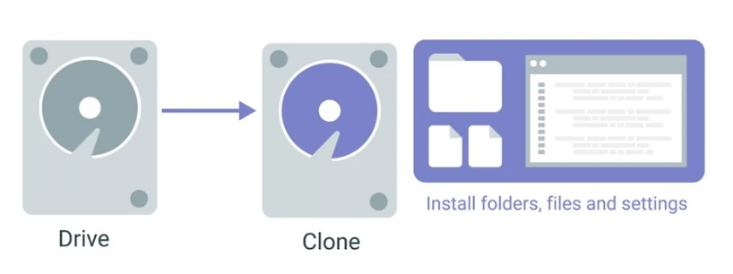
The benefit of this cloning over standalone installation media is that you can also install settings and folders that you might need. One of the many disk cloning tools out there is the open-source software clone Zillow. It can be used to backup and restore a single machine or many machines simultaneously. A popular commercial imaging tool is semantic ghost. To read more about other disk cloning software, check out the supplemental reading right after this video. With a disk imaging, lots of tools offer different ways you can clone a disc. One option is disk-to-disk cloning, where you connect an external hard drive to the machine you want to clone. You can conduct a hard drive like your HDD is an SSDs into something known as an external hard drive duck. These devices are great IT tools that look like toasters. Once you connect your external hard drive, you can use any disk cloning tool of your choice. We're going to show you a really quick example of how discounting works. Let's use the Linux command line tool dd to copy files. Dd is a lightweight tool that's also used to clone a drive. Again, you can use any tools you want to clone your discs. But right now we're just going to use dd. Let's make a copy of the USB drive I have connected in my laptop, then save it as an image file. First, we want to make sure we have this drive unmounted. Then we want to run dd. You don't have to know how dd works to use this command. This just says I'm going to copy the contents of /dev/sdd, which is the USB drive, and save it to the desktop in an image file. Once the image file is saved, if we open it up, we should see the exact same contents as the USB drive. You can use dd for larger disks like hard drives, and it will function the same way. Pretty cool. Another method you can use to image a machine is to request the images directly from the network. Lots of operating system manufacturers today offer network-initiated deployments. This means no more smithy stand-alone installation media. Instead, you can just download and install an operating system through the network.
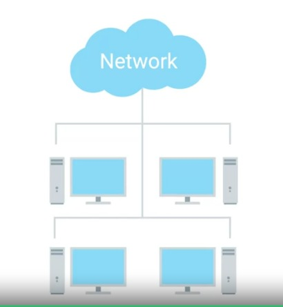
If you want to use your own images and not the built-in network boot options for your computers, there are other options for that too. We don't discuss the specifics of them here, but they require a bit of automation to get going. That means you'd have to utilize scripts. We'll discuss how to do that in this course, but you can be on the lookout for it in Course 5 on IT automation. It doesn't matter if it's a laptop, desktop, Windows OS, Linux OS, etc. If you're managing the operating system deployment for a company, you'll want to keep some aspects of hardware standardization in mind. Imagine if your company has a different laptop with different drivers that needed to be installed. This can get tedious to maintain. It's usually a good idea to try and standardize what type of hardware you use in a company to make your job of deploying operating systems a little easier.
Supplemental Reading for OS Deployment Methods
In this reading, you will learn about operating system (OS) deployment methods, including the use of disk cloning. A cloned disk is an identical copy of a hard drive. Cloning is often used when an Enterprise company purchases a large number of identical computers. The IT Support Administrators for the company are responsible for installing and configuring the computers to meet the needs of the company and its network. Disk cloning is used to save time on this type of deployment. IT Administrators will select one of the new computers to install and configure needed items, such as the OS, utilities, tools, network settings, software, drivers, firmware, and more. Then they make a clone of this first hard drive. The cloned disk is used to copy the entire disk image over to the remaining new computers so that the IT Admins do not need to repeat the same installation and configuration steps on each new computer. They may keep a copy of the original disk from this deployment to reimage the systems if a clean OS install is required (e.g., following a virus or malware infection, OS corruption, etc.).
Cloned disks have uses beyond deploying OSs. They can be used to test new software and configurations in a lab environment before applying the updates to similar production systems. Cloning can also be used for system migrations, data backups, disk archival, or to make a copy of a hard drive for investigative or auditing purposes.
Tools for duplicating disks
Hard disk duplicator
Hard drive duplicators are machines that can make identical copies of hard drives. The original drive is inserted into the duplicator machine along with one or more blank hard drives as targets. Disk duplicators can have anywhere from a single target bay for limited disk cloning (example use: law enforcement investigations) up to 100+ target bays for industrial use (example use: computer manufacturing). If the target drives are not blank, the duplicator machine can wipe the drives. The target drives usually need to share the same characteristics (e.g., interface, form factor, transfer rate) of the original drive. The targets should also have the same or greater storage capacity than the original.
The hard drive duplicator may have an LCD interface built-in to the machine and/or a management software/HTML interface, the latter of which can be accessed over a networked or directly-connected computer or server. The duplicator interface can be used to initiate and manage disk cloning and/or disk wiping (reformatting). Most duplicators copy data sector-by-sector. The time to transfer data from the original to the target drives depends on multiple variables. The machine’s user manual should be consulted to calculate duplication time.
Disk cloning software
Hard drives can also be cloned using software. This method allows the original and target to be different media from one another. For example, a hard drive can be cloned from an IDE drive to an SSD drive, a CD-ROM/DVD, removable USB drive, cloud-based systems, or other storage media, and vice versa. Software cloning supports full disk copies (including the OS, all settings, software, and data) or copies of selected partitions of the drive (useful for data-only or OS-only copies). Disk cloning software is often used by IT Administrators who need to deploy disk images across a network to target workstations or to cloud-based systems. Cloud platforms normally offer a virtual machine (VM) cloning tool as part of their services. VM cloning is the most efficient method for cloning servers and workstations. VM cloning takes a few seconds to deploy new systems.
A few examples of disk cloning software include:
NinjaOne Backup - Cloud-based cloning, backup, and data recovery service designed for managed service providers (MSPs) and remote workplaces.
Acronis Cyber Protect Home Office - Desktop and mobile device cloning software that works with Windows, Apple, and Android systems. Designed for end users. Supports backup, recovery, data migration, and disk replication. Includes an anti-malware service that can overcome ransomware attacks.
Barracuda Intronis Backup - Cloud-based cloning and backup service on a SaaS platform. Designed for MSPs who support small to mid-sized businesses. Can integrate with professional services automation (PSA) and remote monitoring and management (RMM) packages.
ManageEngine OS Deployer - Software for replications, migrations, standardizing system configurations, security, and more. Can create images of Windows, macOS, and Linux operating systems with all drivers, system configurations, and user profiles. These images can be saved to a locally stored library. The library is available to deploy OSs to new, migrated, or recovered systems as needed.
EaseUS Todo Backup - Free Windows-compatible software for differential, incremental, and full backups, as well as disaster recovery. Supports copying from NAS, RAID, and USB drives.
Methods for deploying disk clones
The sections above have described disk clone deployment through copied hard drives, image libraries, network storage, and cloud-based deployments. There are some other options for cloned disk deployments:
Flash drive distribution
OSs can be distributed on flash drives. IT professionals can format flash drives to be bootable prior to copying a cloned disk image to the flash drive. Target systems should be set to boot from removable media in the BIOS. After inserting a flash drive containing the OS into an individual computer, restart the system and follow the prompts to install the OS. Microsoft offers this method as an option for Windows installations. Linux systems can also be booted and installed from flash drives.
The Linux dd command
The Linux/Unix dd command is a built-in utility for converting and copying files. On Linux/Unix-based OSs, most items are treated as files, including block (storage) devices. This characteristic makes it possible for the dd command to clone and wipe disks.
Key takeaways
Hard drives can be duplicated by:
Hard disk duplicator machines
Disk cloning software. Examples:
NinjaOne Backup
Acronis Cyber Protect Home Office
Barracuda Intronis Backup
ManageEngine OS Deployer
EaseUS Todo Backup
Operating systems can be deployed through:
Cloned hard drives
Hard drive image libraries
Network storage
Cloud-based deployments
Flash drive distributions
In Linux, using the dd command
Mobile Device Resetting and Imaging
When a mobile devices is built, it's installed with an operating system at the factory. So a factory reset returns the device back to the state it was in when the device well shipped from the factory, you'll have to factory reset mobile devices a lot. As an IT Support Specialist, you might do this before reassigning a device to another end user before sending a device out for repair or as a last resort when troubleshooting a misbehaving device. Don't forget a factory reset will remove all data apps and customization from the device. Make sure that anything you don't want to lose has been backed up or sync to the cloud. Another heads up watch out for expansion storage. Additional storage devices like SD cards or USB drives can contain personal or proprietary data doing a factory reset while expansion storage is attached might erase data that you intend to keep. Just as bad hte factory reset for lots of devices may leave the content of expansion storage intact and you don't want to repurpose or decommission a device with personal or proprietary data still attached. One final thing in Android and IOS you need the primary account credentials in order to perform a factory reset. This is so stolen devices cannot be easily factory reset and then resold. Over time Mobile device manufacturers will release updates to devices operating system. These updates will usually be delivered over the air or OTA. And OTA update is one that's downloaded and installed by the mobile device itself. There are times when you might need to use a computer to install operating system updates. Some mobile devices like fitness trackers and medical devices might not have mobile or wifi network interfaces to contact the internet with. Maybe the mobile device won't boot or doesn't have a good enough data connection to download the update itself. In these cases, you can re flash or overwrite the OS of the device from a computer. But be careful pay close attention to the devices instructions for re flashing for some devices, re flashing will preserve the end user data on the device, but for others, the end result will be like a factory reset. The details will be different from one device to another. The basic steps are:
one download the update to a computer,
two attach the mobile device to a computer using a USB cable and then
three run some software on the computer that will re flash the mobile device.
In the supplemental reading you'll find instructions on how to restore IOS and android devices from a computer. For other kinds of devices referred to the device manufacturers, documentation on how to perform a factory reset or re flas
Windows Troubleshooting
In an IT support environment, it’s common to come across issues that you can resolve using the log analysis tools. These tools can help with application crashes, a slow boot or startup, application hangs, or unexpected reboots. In this reading you will learn how to resolve application crashes through the Windows’ graphical user interface (GUI) and your system log files.
Solving the problem
When you begin to troubleshoot an IT issue, you should begin by researching the root of the problem.You might ask yourself these questions:
Is the problem unique to one computer or all computers on the network?
Does the problem affect a single user or all users?
Is the problem related to a particular application? Is that application up-to-date?
Information in your system and application logs can help you answer these questions.
Once you have figured out the problem, decide how you are going to fix it. You first attempt at fixing it might not be the right solution. This is okay and you are keeping the problem-solving process moving forward and helping to develop your technical troubleshooting skills.
After you have solved the issue and have figured out how to fix it, educate others on your team and in your company about what you discovered. Educating others about IT issues that are happening will help prevent them from happening again.
It’s also important to document your solution to a problem. Many organizations have a structured documentation process in place for IT. This documentation is a place for you to record the issues you have encountered and the solutions you discovered. If they don’t already have a documentation system, it is an opportunity to create a documentation system for your company and follow it. Documenting issues that arise, and solutions to those issues, will save the company and other IT support professionals time and resources in the future.
An example scenario
Consider this situation: One of the commonly-used software applications at your company continuously crashes around the same time every day. You use information in the Windows log files to investigate the issue and see events as they happen live. There are several types of logs you may analyze. A good way to start is by analyzing the system and application logs.
Accessing logs through the Windows GUI tool
In Windows you can access logs through the GUI using the Event Viewer tool. You can launch the Event Viewer through the Windows start menus or by typing eventvwr.msc from the run box. The Event Viewer records a lot of information about the system. With a custom view, you can create a filter that will look across all the event logs and focus the view on just the information you're interested in.
In the scenario above, you’re interested in a crash event that happens around the same time every day. You may create a custom view to filter only events that happen around the time of your crash event. Select the “error” and “critical” checkboxes to limit the view to include crash events. You can also select specific logs to view. The system log is a good place to start. Name the new view and save it for future reference.
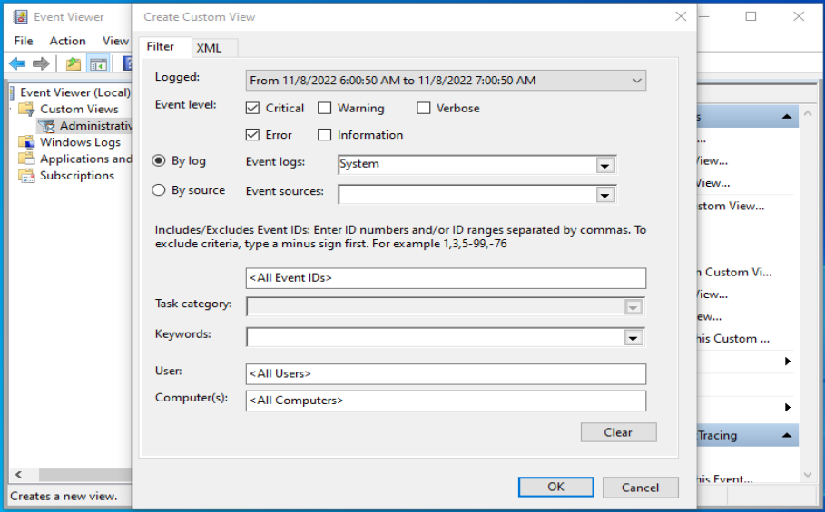
Interpreting the log file
Once you have accessed your logs and focused on those parts that contain information most relevant to your crash event, you can examine the logs to find the root cause of the issue. Since you’re concerned with the crash of a specific application, you might scan the log file for the word “error” or the application name. Check the timestamps of these error logs for crashes that happen around the time that you suspect your crashes are happening. These parts of your system logs are most likely to offer clues about what’s causing your problem and how to fix it.
You may have to examine the logs a few times to collect the data you need. You may also have to try multiple different solutions before finding the right one. Then once you have, you can document it so others don’t have to go through the same process again.
Key takeaways
Good problem solving skills will help expedite the troubleshooting process and increase productivity.
When faced with a problem, analyze the situation to determine what steps to take.
There are two key tools that can help you resolve application errors:
Access to logs through the Windows GUI
Log analysis
After reaching your conclusions about a problem, communicate your findings.
Document your solution to every problem.
Windows Troubleshooting Tools
In this reading, you will learn some basic steps for troubleshooting the Windows operating system (OS). This article focuses primarily on troubleshooting tools available in the desktop/laptop versions of Windows 10 and 11. However, many of these tools and solutions are available in other versions of Windows. Additionally, there are multiple methods for approaching and solving problems in Windows. This article is not an extensive resource of all possible troubleshooting tools and solutions.
Troubleshooting tools for Windows
Some of the troubleshooting tools provided by Windows include:
Windows Update: One of the most important repair tools for Windows problems. Widespread and known Windows problems will often have a software resolution provided by Microsoft or Original Equipment Manufacturers (OEMs). Windows Update will find, download, and install the required and/or recommended software resolutions, which include operating system patches and updates, security updates and fixes, .NET framework updates, driver and firmware updates, etc.
Updates from the hardware manufacturer(s): Some OEM updates are not accessible through Windows Update. For these items, it is necessary to go to the OEM’s website for updates, patches, drivers, and firmware for components such as computer hardware, peripherals, and third-party applications.
Optimize Drives with Disk Defragmenter: When files on a hard drive are saved, deleted, or altered, fragmentation across storage blocks can occur. A file may become spread across the drive in non-contiguous storage blocks. This issue results in performance problems within the system as the hard drive spends additional seek time finding the scattered file fragments and piecing them back together. The Windows Disk Defragmenter can automatically relocate file fragments onto a continuous series of storage blocks in order to remedy these seek time delays.
Disk Cleanup: Windows utility that simplifies removing temporary files including downloaded program files, thumbnail files, system files, and temporary internet files. Disk Cleanup also offers an option to compress the primary hard drive where the Windows OS resides.
CHKDSK command: A command-line utility for Windows that scans hard drives to find and flag bad sectors. Flagged bad sectors will be removed from use and no data will be stored on them. The tool will attempt to recover any data found on the bad sector.
Disk Management tool: A Windows system utility for performing advanced storage management tasks, including initializing a new drive, extending or shrinking a volume, and changing a drive letter.
Event Viewer: Software tool for monitoring events and errors produced by the system, security, hardware, software, and more. The Event Viewer divides logs into four main categories:
Custom Views
Windows Logs
Applications and Services Logs
Subscriptions
Registry Editor (regedit): The Registry Editor should only be used by advanced system administrators. It is possible to cause serious system and software problems if the wrong edits are made to the Registry.
System Configuration tool (msconfig): Software tool for changing system settings, including the services and applications that can load on system startup.
Safe Mode (Windows 10 and 11): There are multiple options for booting into safe mode. A couple of these options include:
System Configuration tool - Can be used to configure a clean boot in Safe Mode to help isolate the source of a system problem.
Startup Settings - Can be accessed through System > Recovery or through the sign-in screen.
System Troubleshoot tool (Windows 11): The Windows Troubleshoot menu can be accessed from Start > Settings > System > Troubleshoot. The following options are available on the Troubleshoot menu:
Recommended troubleshooter preferences - Set preferences for Microsoft’s recommendations for troubleshooting tools.
Recommended troubleshooter history - Easy access to troubleshooting tools used previously.
Other troubleshooters - This menu includes tools for troubleshooting internet connections, audio, printers, Windows Update, Bluetooth, camera, incoming connections, keyboard, network adapter, power, program compatibility, search & indexing, shared folders, video, Windows Store apps, privacy, and misc help.
Common problems in Windows
The following is a list of common problems encountered in Windows, along with common troubleshooting first steps:
Computer is running slowly: There are many issues that could make a computer run slowly. Troubleshooting can involve multiple steps, many of which should be performed on a regular schedule to proactively prevent problems from happening. The first step should almost always be to reboot the computer. This step can fix a large percentage of problems reported by end users. If rebooting does not resolve the problem, check that there is sufficient processing power, disk space, and RAM to support the OS, hardware, software, and intended use of the computer. For example, video editing may require a relatively more powerful computer, a large amount of free hard drive space, and lots of RAM. Check system event logs for errors. Research any error codes found using the Microsoft knowledge base or an internet search to see if there is a known solution to the problem. Run an antivirus and anti-malware scan. Use Windows Update and OEM updates to ensure the system is up to date. Remove temporary and unneeded files and software. Check the software and services that load at startup for potential problem sources. Reboot the computer into Safe Mode to see if the computer performance improves. Unplug peripherals and turn off network connections to eliminate these as sources of the slow down. If the OS is Windows 11, use the System Troubleshoot tools found at Start > Settings > System > Troubleshoot.
Computer is frozen: Power off the computer. Wait 30 seconds to drain residual power and clear any potentially corrupted data held by RAM. Boot up the computer again and check system event logs. If the system does not boot, go to the BIOS settings and boot into Safe Mode to gain access to the event logs. Research any error codes found. If the root cause cannot be determined, run the same checks as listed above for “Computer is running slowly”.
Blue screen errors: If the blue screen provides an error code or QR code, record this information in order to research the root cause of the issue and possible solutions. Power off the computer, wait 30 seconds, then boot the computer again. If the system does not boot, go into the BIOS settings to boot into Safe Mode. Obtain system event logs in the Windows Event Viewer and research any error codes found there. If the root cause cannot be determined through event codes within the logs, then run the same checks as listed above for “Computer is running slowly”.
Hardware problems: Check the hardware OEM’s website for updates to drivers, firmware, and software management consoles. If this does not resolve the problem, check the system Device Manager to see if the device has been disabled or is not recognized. Additionally, check system event logs and research any error codes found. If the root cause cannot be determined, then run the same checks as listed above for “Computer is running slowly”.
Software problems: Go to the software manufacturer’s website to check for software patches or updates. If the problem continues after updating the software, check the application event logs and research any error codes found. If the root cause cannot be determined, then run the same checks as listed above for “Computer is running slowly”.
Application is frozen: End application processes in Task Manager. Restart application. If the problem persists, reboot the computer and try to run the application again. If the issue is still not resolved, then follow the instructions listed above for software problems.
A peripheral is not working: Check to ensure the peripheral is on and is receiving sufficient power, especially if the item is battery powered. Check cables to ensure they are attached securely. If the item is connected through USB, try a different USB port. If the device connects through Bluetooth, check to ensure that Bluetooth is active on both the computer and the peripheral. Reboot the computer to see if the system can reconnect to the device. Inexpensive, high-use peripheral devices experience high failure rates, especially keyboards and mice. Swap the peripheral for a working replacement to see if the problem was the peripheral itself, or perhaps an error in how the computer is detecting the peripheral. If the problem persists with the replacement peripheral, check the system Device Manager to see if the device has been disabled or is not recognized. Check the event logs for any errors. Visit the OEM’s website to look for updates to drivers, firmware, and/or software management consoles, if available. Run a Windows Update as well.
Audio problems: Check audio volume. Run the Windows audio troubleshooter. Check speaker cables, plugs, jacks, and/or headphones. Check sound settings. Update or repair audio drivers and sound card firmware. Check to ensure the active and default audio devices are the desired audio devices. Turn off audio enhancements. Stop and restart audio services in Task Manager. Restart the computer. Research if specific audio CODECs are needed for audio media. If audio is not working in a browser, ensure the browser has permission to use the system audio and/or microphone.
Supplemental Reading for Windows Troubleshooting Example
As an IT Support professional, you will likely run into problems caused by a full primary hard drive, where the OS is installed. An affected computer may display an error message stating there is insufficient space on the drive to save new files, apply an update, or install new software. In some cases, the computer might not provide an informative error message at all. Instead, the system may experience performance issues, hang, crash, or it might not even load the OS after booting. Note that it is a best practice to routinely perform maintenance and clean-up of computer hard drives to free storage space, improve system performance, and prevent the myriad of issues that can arise when the primary hard drive is full.
Imagine that you are an IT Support Specialist for an organization. An employee reports that their computer is running very slowly and keeps hanging. You know that Windows Update had been scheduled to run overnight to update all of the organization’s systems with multiple patches, updates, and fixes. Although it is possible for these changes to cause system problems, there is only one employee reporting a problem. So, it is more likely that the system did not have adequate storage space to install all of the updates on that employee’s computer system. You suspect that the primary hard drive could be full. Your troubleshooting and repair steps might include:
Check how much free storage space remains. A quick and easy troubleshooting step for system performance issues is to check if the primary hard drive is full. In this scenario, you discover that the employee’s hard drive has less than 5 GB of space left. Microsoft recommends giving Windows 10 at least 20 GB of free space for normal OS processes. You will need to find at least 15 GB of files to delete or move to another storage location.
Delete temporary and unneeded files. There are a few methods for cleaning out junk files from Windows. Two system maintenance tools for this purpose, found in several versions of Windows, include:
Storage Sense: Use the Windows Storage Sense tool to delete unnecessary files like temporary files, offline cloud files, downloads, and those stored in the Recycle Bin. You can also configure Storage Sense to regularly and automatically clean the hard drive for proactive maintenance.
Disk Cleanup: A simple alternative tool to Storage Sense. Disk Cleanup performs most of the same operations as Storage Sense, plus it offers a drive compression utility. Note: If you run Disk Cleanup on a drive, but the computer is still reporting “Low Disk Space”, the Temp folder is most likely filling up with Microsoft Store .appx files. In this case, you will need to clear the cache for Microsoft Store.
Reset Windows Update. Since you know the employee’s computer went through a Windows Update overnight and possibly did not complete this process fully, it may be wise to perform a Windows Update reset. The reset tool can check whether a system reboot is required to apply the updates, security settings were changed, update files are missing or corrupted, service registrations are missing or corrupt, and more.This utility can be found in the Windows system Settings menu, under Troubleshoot > Other troubleshooters > Windows Update.
Move files off of the primary hard drive and onto (one or more of the following):
Internal or external storage device: Install an additional hard drive or add an external storage device, like a USB drive or SD card, to hold user files.
Network storage: Network storage space is often available in network environments in the form of Network Attached Storage (NAS) appliances or large Enterprise Storage Area Networks (SANs). In these environments, end users should have network drive space mapped to their workstations for file storage, instead of saving files to their local hard drives.
Cloud storage (OneDrive, File Explorer, Google Drive, etc.): Providing cloud storage space to end users is a lower cost alternative to network storage. However, this option is less secure than onsite NAS or SAN storage.
In Windows System Storage, under Advanced storage settings, set the new drive storage as the destination for “Where new content is saved.”
Set any cloud storage solutions to be online-only. This will prevent cloud files from downloading an offline or cached version of the files to the hard drive.
Uninstall apps that are not needed (including Windows Store apps). This is an effective way to free up large amounts of storage space.
Run antivirus and antimalware software. Some viruses and malware intentionally fill up hard drives with garbage data.
Wipe hard drive and reinstall the OS. If none of the suggestions listed above solve the problem with slow system performance and hanging, consider wiping the hard drive and reinstalling the OS. This is the best method for repairing failed system updates.